zBEMT
A practical guide to configuring, running and interpreting BEMT simulations
for rotary-wing
rotors and propellers
User guide with the physical and mathematical model behind each control
0. How to think about zBEMT
zBEMT solves the blade-element and momentum formulations on a common radial-azimuthal mesh. The blade is discretized into radial and azimuthal stations. At each element $(r,\psi)$, both formulations describe the same local load. Their equality determines the induced velocity. The integrated solution follows from these local aerodynamic states and a consistent momentum balance.
- Blade element theory (Section 5.6) computes the load directly from the local flow at the airfoil: angle of attack, then $C_l$/$C_d$ from the airfoil polar. It needs the induced velocity as an input (it changes the local angle of attack) but does not determine what that induced velocity should be.
- Momentum theory (Section 5.7), applied to an elementary annular ring of the disk (Section 5.7.5), says the opposite: given a load, conservation of momentum for the air passing through that ring determines the induced velocity ($\lambda_i$) required to sustain it. It needs the load as an input and does not describe the airfoil.
Neither theory alone closes the governing system. The solver couples them iteratively. Blade Element Theory computes the aerodynamic loads for an assumed induced velocity. Momentum Theory then updates the induced inflow until the momentum balance and the blade loads converge. Numerical controls for this iteration are described in Section 9.5, and the analytical derivation is given in Section 5.8.
Secondary physical effects (such as reverse flow, dynamic stall, non-uniform inflow, tip/root losses, rotational augmentation, and compressibility in Section 8.5) are formulated as modular corrections applied to either the blade element loads or the momentum equations. Diagnostic analysis should therefore isolate discrepancies to the corresponding branch of this coupled formulation.
0.1 Scope
Use this guide in the same order as the GUI. First describe the aircraft or propeller, then the blade geometry and airfoil data, choose the physical corrections and solver settings, define one case or a batch, and finally inspect the results. The equations are included whenever they help select a value or diagnose a result. Source-level details that do not change that decision are intentionally omitted.

1. Installation
zBEMT requires Python 3.10 or later. The core solver uses NumPy, SciPy, Matplotlib, and pandas. GUI, three-dimensional visualization, interactive reporting, and external polar generation are optional dependencies. This separation permits headless batch execution without a graphics stack.
1.1 What to install
From the repository root, the simplest choice installs everything:
pip install -e ".[all]"If that is more than you need, install only the groups you will use. Each is independent, and they can be combined.
| Command | Adds | Needed for |
|---|---|---|
pip install -e . |
NumPy, SciPy, Matplotlib, pandas | The solver and the CLI. Nothing else is required to run a case or a batch. |
pip install -e ".[gui]" |
PyQt6 | The GUI. |
pip install -e ".[viz3d]" |
PyVista | The three-dimensional rotor view in the Results tab. |
pip install -e ".[neuralfoil]" |
NeuralFoil | Generating airfoil polars from a profile shape. |
pip install -e ".[interactive]" |
Plotly, PyQt6-WebEngine | Interactive charts inside a generated report. |
pip install -e ".[dev]" |
pytest | Running the test suite. |
pip install -e ".[all]" |
All of the above | Everything. |
1.2 Starting it
Installing puts two commands on the path. zbemt-gui opens the
GUI, and zbemt is the CLI:
zbemt-gui # the GUI
zbemt --project projects/starter_rotor # run a project from the CLI
zbemt --help # every flagIf the commands are not found, the installation directory is not on your path. Running
python -m zbemt.gui.app and python -m zbemt.cli does the same thing.
Both accept no arguments at all, in which case they fall back to the starter rotor, so there is
always something to look at.
1.3 When an optional package is missing
A missing optional package never stops zBEMT from starting, and never changes a result. Each feature that depends on one checks for it and says so:
- Without PyQt6, only the CLI runs. The solver is unaffected, which is the point of keeping the two apart.
- Without PyVista, the three-dimensional view is unavailable and the two-dimensional plots carry on as normal.
- Without NeuralFoil, the polar generation block is disabled, with a note saying why. Analytical polars and imported tables are unaffected.
- Without Plotly, reports are generated with static figures instead of interactive ones.
In every case the message names the package to install. Nothing degrades silently.
2. The GUI, the CLI and the .bemt files
zBEMT exposes one computational model through three synchronized interfaces. The GUI, the .bemt project files, and the CLI use the same validation, solver, and reporting paths. Equivalent inputs therefore produce equivalent numerical results. This chapter defines the role of each interface, the file that stores each setting, and the outputs produced by a run.
2.1 What each one is for
The GUI is where a configuration is built and checked. It shows the consequences of a choice immediately: the blade preview redraws as the geometry changes, options that do not apply disappear, and the bar at the top of the GUI reports whether each step is complete. Use it to define a rotor and to understand a result.
The .bemt files are the record of what was configured. A project is a folder of small text files in JSON format, one per subject, which can be read, edited, copied between machines and tracked in version control. They are the definition of the case. Everything else reads from them.
The CLI runs a project without a display. It is the way to launch a long sweep, to run on a server, or to repeat the same study over several projects from a script. It needs neither the graphical libraries nor a screen.
2.2 The project folder
A project is a folder containing two subfolders. Inputs are the definition of the case. Outputs are what a run produced.
File under inputs/ |
Contents | Edited from |
|---|---|---|
meta.bemt |
The project name. | Project tab |
geom.bemt |
Number of blades, radius, root cutout, and the radial table of chord and twist. | Geometry tab |
airfoil.bemt |
The aerodynamic model: analytical coefficients or an imported polar, stall behavior, reverse flow, compressibility. | Airfoil tab |
airfoil_sections.bemt |
The radial sections, when the blade uses more than one profile along its span. | Airfoil tab |
config.bemt |
Everything about how the problem is solved: mesh size, air properties, inflow model, corrections, solver
and its tolerances. It also holds is_propeller, which selects rotor or propeller mode. |
Config/Engine tab |
saved_cases.bemt |
Named single flight conditions. | Run Case tab |
batches.bemt |
Named batches: a list of conditions, and how they were generated. | Run Batch tab |
A key that is absent from a file takes its default value, so a short file is valid and describes a rotor using defaults for everything it does not mention. A key that is present but not recognized is reported as unknown and ignored. It does not stop the run, but the value is not used, and the field falls back to its default. This is the usual cause of a hand-edited file that appears to have no effect.
2.3 Setting a value
A project is a folder of .bemt files, and those files are the only place a setting is ever stored. The GUI and the CLI are two ways of reading and writing that same folder. Neither has a format of its own, and neither can express anything the other cannot: the chapters that follow give, for every field, the widget that sets it, the key that stores it and the flag that overrides it.
Each interface plays a different part.
The GUI edits and writes the files. Typing a value into a field changes the project held in memory. Nothing reaches disk until you save, at which point the whole project is written back to .bemt files. These are the same files you could have edited by hand. This is what makes the GUI the easiest way to author a project: build it on screen, save it, and the folder is ready for any of the three.
The .bemt files hold the project. They are plain JSON, so a number is
written as "Ne": 90, a switch as true or false, and a choice
as the quoted name of the option. You can create and edit them in a text editor without ever
opening the GUI.
The CLI runs a project and can override any field for that one run. It
does not write the project back: an override changes what is solved, not what is stored, so the
folder is exactly as it was when the run ends. Use the field's own flag where one exists, for
example --rpm 300 or --inflow coleman_local; every other field is reached
with --set, which takes the file group, the field and the value:
zbemt --project projects/starter_rotor --rpm 300 \
--set config.Ne=90 --set config.Npsi=144 --set airfoil.cd0=0.012The group is config, airfoil or geom, matching the files
above. A field name that does not exist, or a value that does not match the field's type, stops
the run with an error rather than being silently ignored. When a field is given both by its own
flag and by --set, the --set value is the one used.
2.3.1 Running with one interface only
None of the three requires the others. Each of the following is a complete way to work.
Only the GUI. Open it with zbemt-gui, create a
project, fill in the tabs, and run from the Run Case or Run Batch tab. Saving writes the
.bemt files. You never need to look at them. This is the recommended
route for a first project.
Only .bemt files. Write the files by hand, or copy an
example project from projects/ and edit it. Then solve the saved cases with
zbemt --project projects/MyRotor. The project defines the geometry, the airfoil, the
configuration and the conditions to run, so the command needs nothing but the folder. Nothing here
requires PyQt6, which is why this is the route for a headless machine.
Only the CLI. A project folder is always required (it is
where the geometry, the airfoil and the configuration live), but the
CLI can create one: zbemt --new projects/MyRotor writes a
folder with default geometry and airfoil, which you then shape with flags. A fresh project has no
saved case, so that first command creates the folder and runs nothing. From then on, a condition
given on the command line is what gets solved:
zbemt --new projects/MyRotor
zbemt --project projects/MyRotor --mu-inplane 0.2 --collective 8 --rpm 300
zbemt --project projects/MyRotor --rpm 300 --set config.Ne=90 --save-as projects/MyRotor--save-as is what turns an override into a stored setting: without it the flags
affect the run and nothing else. Run with no arguments at all, zbemt validates the
starter_rotor example and exits without solving, which is the quickest way to confirm
that an installation works.
2.4 Checking a project before running it
Validation applies the same rules in all three interfaces, and it always runs before the solver does: pressing Run, or launching a run from the command line, checks the project first and stops if a check fails. You never have to ask for it, and a run that starts has already passed.
In the GUI the bar at the top of the window shows each step as
complete, incomplete or in error, so the state of the project is visible before you press anything.
From the CLI, --validate-only runs the checks, reports what
they found and exits without solving. That is worth doing before an unattended batch that will take
hours.
Findings are of two kinds: errors, which stop the run, and warnings, which do not. To run in
spite of an error, for instance to reproduce a known bad configuration deliberately,
--ignore-validation-errors is required.
2.5 What a run produces
There are two kinds of run. A single case solves one flight condition. A batch solves a list of conditions one after another, with everything except the condition held fixed, so the results are directly comparable. The numbers are the same whichever way the run was started. What differs is what is shown and what is written to disk.
2.5.1 What appears on screen
| Interface | Single Case | Batch |
|---|---|---|
| GUI | Summary metrics table in Run Case tab. Detailed radial cuts, residual history, and 2D disk maps available in Results tab. | Progress bar and condition status table. Batch runs saved to Results tab for comparative sweep overlays. |
| CLI | Integrated metrics printed to terminal. | Condition-by-condition tabular progress printed to terminal. |
2.5.2 What is written to disk
zBEMT writes nothing below unless you ask for it. The one exception is the
results table, which the CLI writes by default. The output folder is outputs/ inside the project
unless another
is given.
| File | Contents | GUI | CLI | .bemt |
|---|---|---|---|---|
results.csv |
Summary table metrics across all evaluated flight conditions. | Export block or table export buttons (CSV/TSV). | Written by default. Suppressed via --no-csv. |
None. |
performance*.png |
Integrated performance curves aggregated across sweep parameters. | Export › plots. | --plots performance |
plots in batch |
disk_map_*.png |
2D spatial disk distributions (individual scalar maps and multi-field grids). | Export › plots. | --plots disk_map (or specific field, for example, --plots disk_map_CT) |
plots in batch |
convergence*.png |
Solver iteration residual histories per condition. | Export › plots. | --plots convergence |
plots in batch |
report.html |
Self-contained report containing summary tables, embedded figures, and solver configuration. | Generate report button in Results tab. | --report [FILE] (with optional --report-notes TEXT) |
None. |
Where the files go. From the CLI, --outdir PATH chooses the folder,
and a
batch may carry its own outdir, which the flag overrides. With many conditions the
per-condition images are numerous, so --export-layout per_case puts each condition's
figures in its own subfolder instead of naming them all in one.
The plots and the report are independent. Asking for no plots does not empty the report, and asking for a report does not write loose images: the first controls what sits on disk as PNG files, the second what is embedded in the HTML. When a report would carry a very large number of figures it is written as a small main page with companion pages beside it, so the main page stays quick to open. Nothing is left out.
Nothing else is written. A run never modifies the project. Saving a condition or a batch
back into saved_cases.bemt or batches.bemt is a separate, explicit
action.
3. Tutorial: first result
3.1 Case workflow
Create or open a project, define the blade and aerodynamic model, configure the engine, specify an operating condition, execute the case, and interpret the results.
Project — start from a saved state
In the Project tab, create a project or open an example. Choose Rotor or Propeller before filling in flight conditions: the engine solves the same physics, but the interface switches the input and coefficient conventions. Edits reach the project in memory as you make them. Save writes that state to disk. Switching projects clears the session's result history.
Geometry — describe the blade before tuning the case
Enter the blade count and radius, generate a starting table if needed, then review r/R, chord and twist. Each cell you edit goes into the project in memory at once, so the preview and the calculation always describe the same blade. Save writes it to disk and Restore reloads the last saved version. The field list at the head of each chapter follows the order of the controls on screen.
Airfoil — where the local forces come from
The polar source is analytical (closed-form linear
coefficients) or table (imported or generated data, covering
Reynolds, Mach and angles of attack). Dynamic stall, reverse flow and
compressibility are independent corrections applied on top of that base
polar.
Config/Engine — mesh and physical models
Ne discretizes the radius and Npsi discretizes the azimuth. Together they define the mesh over which the solver integrates forces. Inflow, Prandtl losses and solver are independent models composed over that mesh. The static validation runs on its own. The panel at the bottom of the tab restates it after every edit, here or in any other tab. Therefore, what it shows is always the current project.
Run Case — one physical condition at a time
Set the in-plane advance, axial velocity, collective and RPM. Collective and RPM are not numerical knobs: they set the geometric angle and the velocity scale of the flow. Run the case and use the Results tab to compare against earlier runs.
Run Batch — generate, queue, run
Choose axes or add individual conditions. Both paths feed the same queue. Review it before running. A batch is not an automatic trim: with the collective held fixed, thrust and power are outputs that vary with the condition.
Results — compare before exporting
Select one or more runs from the history to compare charts and tables. Export writes result files. Generating a report creates the self-contained HTML of the run. Neither changes the physics that was already solved.
3.2 Workflow
pip install -e ".[all]" at the repository root,
two commands, one for each interface:
zbemt-gui # GUI zbemt --help # command lineWithout installing, the equivalents are
python -m zbemt.gui.app and
python -m zbemt.cli. The window opens maximized and empty: the first step is
always the Project tab, where you choose one of the examples that come preinstalled
(Section 3.2.5) or create a new project.
The GUI workflow is organized into seven tabs matching standard project setup: 1. Project (mode and file management) → 2. Geometry (radial blade chord and twist distribution) → 3. Airfoil (polar models and aerodynamic corrections) → 4. Config/Engine (discretization, inflow model, and solver numerical parameters) → 5. Run Case (single flight condition evaluation) or 6. Run Batch (parametric sweeps) → 7. Results (post-processing and export). The reference manual follows this tab sequence sequentially.
3.2.1 Flow indicator bar
The bar fixed at the top of the GUI shows a colored indicator for each of the seven steps above (green = configured and valid. Amber = configured with warnings. Red = blocking error. Gray = not yet configured). Click any indicator to jump directly to the corresponding tab. This helps you resume a large project without stepping through the tabs in order. The Help button opens this document. Shortcut F1 sits at the far right of the same bar.
3.2.2 Live edits, unsaved marker, save and restore
The Geometry, Airfoil and Config/Engine tabs have no separate confirmation step. Every value you type is written straight into the project held in memory, and the previews and the validation panel update immediately. There is no pending draft, and no button that has to be pressed before a value counts.
Writing to disk is the one thing that does not happen automatically. The project folder stays exactly as it was until you save, so an edit can be made, examined and abandoned without consequence.
The asterisk. While the project in memory differs from the project on disk, an asterisk is added to the title of each tab you edited: Geometry *, Airfoil *, Config/Engine *. It appears on those three tabs only, because they are the ones that edit stored project data. Project, Run Case, Run Batch and Results never show it. The asterisk means that zBEMT did not yet write the work to disk. It does not mean that the work was not applied.
Save. Save writes the whole project folder and clears the
asterisks. The button is in the Project tab and repeated in Geometry, Airfoil and
Config/Engine (labeled Save in the Geometry tab), so you never have to change
tabs to commit what you just typed. Ctrl+S does the same from anywhere in
the GUI.
Restore. Restore — labeled Restore in the Geometry and Airfoil tabs — does the opposite: it reloads the project folder exactly as it stands on disk and discards every unsaved edit. It is a full reload, not a step-by-step undo, and it asks for confirmation first when there is unsaved work. This is what makes free experimentation safe: change values, watch the preview, then either save them or restore over them.
When closing the GUI with unsaved work, zBEMT asks before exiting, offering Save, Discard and Cancel. Because everything you typed is already in the project, choosing Save writes exactly what was on the screen. There is no second category of pending edit that the dialog could drop without telling you.
3.2.3 Keyboard shortcuts
| Shortcut | Action |
|---|---|
F1 |
Opens this document (same target as the "?" button) |
Ctrl+S |
Save the project to disk (same as the "Save" button, from any tab) |
Ctrl+O |
Open project from another folder |
Ctrl+N |
New project |
Ctrl+1…Ctrl+7 |
Jumps to tab 1–7 (same order as the flow bar) |
Ctrl+Enter |
Re-reads the current tab's fields into the project in memory. Edits already apply as you type (Section 3.2.2), so this only forces a refresh. It never writes to disk |
Ctrl+R |
Runs the case or batch from the current tab |
3.2.4 Three ways to configure a project
Every field of a project can be set from the GUI, from the project files or from the command line, and the three produce the same numbers. Which file holds which setting, and how a value is given in each of the three, is covered in Chapter 2.
3.2.5 First use
The repository ships 14 ready-to-run projects under projects/.
Two are the starting points: starter_rotor for a helicopter rotor and
starter_propeller for an aircraft propeller. The remaining twelve are the projects the
worked examples, and they are worth opening for the same reason: between them they cover
both modes, the range of machine sizes zBEMT is used on, and most of the models it implements.
Opening one is the shortest way to understand the tool, because it already carries saved flight
cases and sweeps.
| Folder | Project type | Mode | Blades | $R$ [m] | Solidity $\sigma$ |
|---|---|---|---|---|---|
starter_propeller |
Starter propeller (1.88m, 3 blades) | Propeller | 3 | 0.94 | 0.109 |
starter_rotor |
Starter rotor (2.5m, 4 blades) | Rotor | 4 | 1.25 | 0.141 |
test1 |
Medium utility helicopter (UH-60 class) | Rotor | 4 | 8.178 | 0.082 |
test2 |
Light two-blade helicopter (Bell 206 class) | Rotor | 2 | 5.08 | 0.041 |
test3 |
eVTOL lift rotor (multirotor) | Rotor | 5 | 1.5 | 0.106 |
test4 |
Rotor with tabulated polar (Reynolds axis) | Rotor | 2 | 5.08 | 0.041 |
test5 |
Fast-tip rotor (physical model sensitivity study) | Rotor | 4 | 6 | 0.085 |
test6 |
Small multirotor consumer drone (9.7" propeller) | Rotor | 2 | 0.123 | 0.248 |
test7 |
Heavy-lift cargo helicopter (CH-47 Chinook class) | Rotor | 3 | 7.32 | 0.075 |
test8 |
Scout/reconnaissance helicopter (Pitt-Peters inflow) | Rotor | 2 | 5.5 | 0.042 |
test9 |
Light trainer helicopter (enhanced stall model) | Rotor | 2 | 5.18 | 0.039 |
test10 |
Helicopter rotor with multi-section airfoil (root/mid/tip) | Rotor | 3 | 5 | 0.067 |
test11 |
Light aircraft tractor propeller (3 blades, 1.88 m) | Propeller | 3 | 0.94 | 0.109 |
test12 |
Two-blade rotor with tabulated polar (7 m diameter) | Rotor | 2 | 3.5 | 0.061 |
The set falls into three groups, and knowing which group a project belongs to is the quickest way to pick one.
Aircraft of different sizes. test1, test2 and
test7 are a medium utility helicopter, a light two-blade helicopter and a heavy-lift
cargo helicopter: the same mission across a range of sizes, with solidity roughly doubling from the
lightest to the heaviest.
Tests test3 and test6 take the scale in the other direction, an eVTOL lift
rotor and a small drone propeller, where the disk is small and the tip is slow.
Projects that exercise a model rather than an aircraft. test8 is set up for
the Pitt-Peters inflow family, test9 for the enhanced stall model, test10
for a multi-section blade with different profiles at root, mid-span and tip, and test4
and test12 for a tabulated polar, the first resolved in Reynolds number.
Propeller mode. starter_propeller and test11 are the two that
exercise the propeller convention and the axial treatment of flight speed described in
Section 4.2.
Via the GUI: open zbemt-gui, choose the project from the list in the
Project tab, go
to the Run Case tab and click Run. The saved cases appear in the selector.
Via command line:
zbemt --project projects/starter_rotor --list-batches zbemt --project projects/starter_rotor --from-bemt-batch "mu_sweep" --report
The --report writes a self-contained HTML with the summary table, graphs and
record of the mesh, solver, and rotor used (Section
11.6).
To start from your own rotor instead of an example, begin with the Project tab and follow the tabs in order. Each of the seven has a chapter of its own, in the same order.
4. Nomenclature and axes
This chapter defines the vehicle-axis convention, the rotor and propeller display labels, the sign conventions, and the dimensional and nondimensional quantities used throughout the GUI, .bemt files, and CLI. The equations are unchanged by the display convention.
4.1 Nomenclature
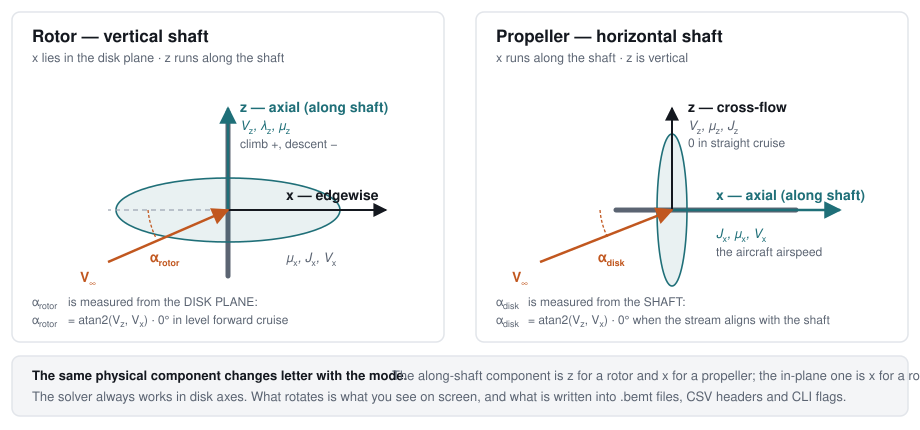
.bemt files, CSV headers and CLI flags.
The free stream is always split into two components, and both are named relative to the shaft:
- Axial flow is the component along the shaft, the same direction the induced velocity acts in, and the direction thrust is produced in. It is what the momentum balance is written in.
- In-plane flow is the component in the disk plane, perpendicular to the shaft. It sweeps across the blades, so it is what makes the advancing and retreating sides of the disk see different velocities.
That split is physical and never changes. What changes with the mode is only the letter each component is written with, because the letters are fixed to the vehicle, not to the shaft: $x$ is always horizontal (forward) and $z$ is always vertical (up). A rotor has a vertical shaft and a propeller a horizontal one, so the two components swap letters between them.
Rotor — vertical shaft
Axial flow is vertical: climb (positive) or descent (negative). In-plane flow is horizontal: the classic forward-flight advance.
| Component | Direction | Speed | Advance ratio | Propeller form | Inflow ratio |
|---|---|---|---|---|---|
| Axial (along the shaft) | vertical | $V_z$ | $\mu_z$ | $J_z$ | $\lambda_z$ |
| In-plane (edgewise) | horizontal | $V_x$ | $\mu_x$ | $J_x$ | none |
The angle between the free stream and the disk plane is $\alpha_{rotor}$. It is $0^\circ$ in level forward flight and positive when the flow arrives from below the disk. Level cruise is therefore $\mu_x>0$ with $\alpha_{rotor}\approx0^\circ$; hover is $\mu_x=\mu_z=0$.
Propeller — horizontal shaft
Axial flow is horizontal: the aircraft's airspeed. In-plane flow is vertical: the cross-flow that appears in a climb, a descent or at an angle of attack, and is zero in straight cruise.
| Component | Direction | Speed | Advance ratio | Propeller form | Inflow ratio |
|---|---|---|---|---|---|
| Axial (along the shaft) | horizontal | $V_x$ | $\mu_x$ | $J_x$ | $\lambda_x$ |
| In-plane (cross-flow) | vertical | $V_z$ | $\mu_z$ | $J_z$ | none |
The angle between the free stream and the shaft is $\alpha_{disk}$. It is $0^\circ$ when the stream is aligned with the shaft. Straight cruise is therefore $J_x>0$ with $V_z=0$ and $\alpha_{disk}=0^\circ$.
$J_x=V_x/(nD)$, built from the axial component, is the quantity normally called the advance ratio of a propeller. Note that it is the axial component.
The two together
| Physical component | Rotor | Propeller |
|---|---|---|
| Along the shaft (axial) | $V_z$, $\mu_z$, $J_z$, $\lambda_z$ (climb/descent) | $V_x$, $\mu_x$, $J_x$, $\lambda_x$ (airspeed) |
| In the disk plane | $V_x$, $\mu_x$, $J_x$ (edgewise advance) | $V_z$, $\mu_z$, $J_z$ (cross-flow) |
| Angle of the free stream | $\alpha_{rotor}$, from the disk plane | $\alpha_{disk}$, from the shaft |
| Induced velocity | $v_i$, $\lambda_i$ (always along the shaft, in both modes) | |
The induced velocity acts along the shaft by definition, in either mode. It therefore keeps its symbols $v_i$ and $\lambda_i$ and its meaning throughout. That outcome follows from the rule rather than contradicting it. The rule attaches a letter to a direction, and the induced velocity is defined by a direction to begin with.
The mode also decides which angle is shown. A rotor offers $\alpha_{rotor}$ and a propeller $\alpha_{disk}$, never both, because the two are the same physical angle measured from references that are perpendicular to each other: showing both would offer the reader two numbers for one quantity, differing by $90^\circ$.
The solver uses disk axes, where the in-plane component is always $x$ and the axial one always $z$, whatever the vehicle. The vehicle convention is applied at the user-facing boundary: the labels in the GUI, the headers of the results table, the axis labels of the plots, the keys written into .bemt files, and the CLI flags. The physics chapters that follow are written in rotor axes.
Greek symbols
| Symbol | Unit (SI) | Definition |
|---|---|---|
| $\Omega$ | rad/s | Rotor angular velocity, constant, imposed by the transmission. |
| $\Omega R$ | m/s | Blade tip speed. |
| $\psi$ | rad | Blade azimuth in the disk plane. $\psi=0$ at the tail, $\psi=\pi/2$ on the advancing side. |
| $\theta$ | rad | Geometric pitch angle (built-in twist plus pitch control). |
| $\theta_{tw}$ | rad | Built-in blade twist. |
| $\phi$ | rad | Inflow angle: inclination of the relative velocity $W$ with respect to the rotor disk plane, $\phi=\arctan(U_P/U_T)$ (Section 5.3.2). |
| $\alpha$, $\alpha_{eff}$ | rad | Effective angle of attack, $\alpha_{eff}=\theta-\phi$. |
| $\alpha_0$ | rad | Zero-lift angle of attack of the airfoil. |
| $\lambda_{total}$ | dimensionless | Total inflow ratio along the shaft, $\lambda_{total}=\lambda_z+\lambda_i$ in rotor axes ($\lambda_{total}=\lambda_x+\lambda_i$ in propeller axes, where $x$ is the shaft). |
| $\lambda_z$ | dimensionless | Free-stream inflow ratio along $z$, $\lambda_z=V_z/\Omega R$. This is the same number as $\mu_z$, written in the inflow vocabulary instead of the advance-ratio one. In rotor axes $z$ is the shaft, so this is climb ($>0$) or descent ($<0$). It is an input datum, known before any aerodynamics. In propeller mode the shaft component is displayed as $\lambda_x$ instead. |
| $\lambda_x$ | dimensionless | Propeller-mode name for the free-stream inflow ratio along the shaft, $\lambda_x=V_x/\Omega R$: the axial inflow of an airplane propeller. Same quantity and same engine key as $\lambda_z$ above (Section 4.2.2). |
| $\lambda_i$ | dimensionless | Induced inflow ratio, $\lambda_i=v_i/\Omega R$: the unknown of the BEMT coupling. Always along the shaft, in either mode. |
| $\lambda_r$ | dimensionless | Local rotational/axial ratio (Himmelskamp correction, Section 9.4.1). |
| $\mu_x$ | dimensionless | Advance ratio along $x$, $\mu_x=V_x/\Omega R$. In rotor axes $x$ is the in-plane direction, so this is the classic forward-flight advance ratio, the component that sweeps across the blades. In propeller mode the label $\mu_x$ is carried by the shaft component instead (the airspeed). |
| $\mu_z$ | dimensionless | Advance ratio along $z$, $\mu_z=V_z/\Omega R$, the same number as $\lambda_z$. In rotor axes it is climb/descent. In propeller mode the label $\mu_z$ is carried by the vertical cross-flow. |
| $\sigma$ | dimensionless | Rotor solidity. |
| $\rho$ | kg/m³ | Air density. |
Latin symbols: geometry and kinematics
| Symbol | Unit (SI) | Definition |
|---|---|---|
| $R$ | m | Rotor radius. |
| $r$ | m | Radial position of the blade element, $0\le r\le R$. |
| $x=r/R$ | dimensionless | Normalized radial position. |
| $r_{root}$ | m | Root cutout. |
| $c(r)$ | m | Local chord. |
| $N_b$ | integer | Number of blades. |
| $N_e$, $N_\psi$ | integer | Number of radial and azimuthal mesh stations. |
| $A=\pi R^2$ | m² | Disk area. |
| $V_x$ | m/s | Free-stream component along $x$. In rotor axes: the horizontal advance velocity, in the disk plane. In propeller mode the label $V_x$ is carried by the component along the shaft, which is the aircraft's airspeed. |
| $V_z$ | m/s | Free-stream component along $z$. In rotor axes: along the shaft, climb ($>0$) or descent ($<0$). In propeller mode the label $V_z$ is carried by the vertical cross-flow, which is zero in straight cruise. |
| $V_{z,total}$ | m/s | Total velocity along the shaft through the disk, $V_{z,total}=V_z+v_i$ (disk-averaged): free stream plus what the rotor adds. It is the dimensional counterpart of $\lambda_{total}$, and it is what Section 5.2.2 writes as $U_P$. Displayed as $V_{x,total}=V_x+v_i$ in propeller mode. |
| $v_i$ | m/s | Velocity induced by the rotor. It acts always along the shaft, in either mode. Only the letter naming that axis changes. |
| $v_h$ | m/s | Ideal hover-induced velocity, $v_h=\sqrt{T/2\rho A}$. |
| $U_P$ | m/s | Component of relative velocity perpendicular to the disk. |
| $U_T$ | m/s | Component of relative velocity in the disk plane. |
| $U_R$ | m/s | Spanwise (radial) component, Section 9.4.2. |
| $W$ | m/s | Total relative velocity, $W=\sqrt{U_P^2+U_T^2}$. |
| $M$ | dimensionless | Local Mach number, $M=W/a$. |
Latin symbols: forces, moments, and coefficients
| Symbol | Unit (SI) | Definition |
|---|---|---|
| $T$ | N | Rotor thrust. |
| $Q$ | N·m | Shaft torque. |
| $P$ | W | Power, $P=Q\Omega$. |
| $L$, $D$ | N/m | Lift and drag of the element, per unit span. |
| $C_l$, $C_d$ | dimensionless | Airfoil lift and drag coefficients, function of $\alpha_{eff}$ and $M$. |
| $C_{l_\alpha}$ | rad⁻¹ | Linear slope of $C_l(\alpha)$, $\approx2\pi$. |
| $F_n$, $F_t$ | N/m | Aerodynamic force projected normal and tangentially to the disk. |
| $F$ | dimensionless, $(0,1]$ | Prandtl tip-loss factor. |
| $C_T$, $C_Q$, $C_P$ | dimensionless | Thrust/torque/power coefficients, rotor convention. |
| $C_{T,prop}$, $C_{Q,prop}$, $C_{P,prop}$ | dimensionless | Idem, propeller convention. |
| $FM$ | dimensionless | Figure of Merit. |
| $J_x$ | dimensionless | Advance ratio along $x$ in propeller form, $J_x=V_x/nD=\pi\mu_x$. In propeller mode this is the classic propeller advance ratio. It is built from the airspeed along the shaft, and it is the quantity propulsive efficiency uses. In rotor axes the same letter denotes the in-plane ratio (Section 4.2.2). |
| $J_z$ | dimensionless | Advance ratio along $z$ in propeller form, $J_z=V_z/nD=\pi\mu_z$. In rotor axes it is the climb/descent ratio. In propeller mode it is the cross-flow ratio, a different number from $J_x$ and zero in straight cruise. They are never interchangeable with $J_x$. The subscript is the only thing separating them, which is why an unsubscripted $J$ is never used here. |
| $\alpha_{rotor}$ | deg | Angle between the free stream and the disk plane, $\alpha_{rotor}=\operatorname{atan2}(V_z,V_x)$ in rotor axes. The angle rotor mode uses: $0$ in a helicopter's level forward flight, positive when the flow arrives from below the disk (Section 4.2.4). |
| $\alpha_{disk}$ | deg | Angle between the free stream and the shaft, $\alpha_{disk}=\operatorname{atan2}(V_z,V_x)$ in propeller axes, equivalently $90^\circ-\alpha_{rotor}$ modulo a full turn. The angle propeller mode uses: $0$ in straight cruise, positive when the disk is tilted nose-up. Each mode uses and shows only its own, and neither is the section angle of attack $\alpha_{eff}$ (Section 4.2.4). |
| $\eta_{prop}$ | dimensionless | Propulsive efficiency, built from the velocity along the shaft (in propeller mode, $V_x$), since that is where thrust acts. |
| $n$ | Hz | Rotations per second, $n=\Omega/2\pi$. |
| $D=2R$ | m | Diameter (propeller convention). |
Subscripts
| Notation | Definition |
|---|---|
| $(\cdot)_i$ | Component induced by the rotor. |
| $(\cdot)_x$ | Component along the vehicle's $x$ axis (horizontal). Rotor mode: in the disk plane, the advance. Propeller mode: along the shaft, the airspeed. |
| $(\cdot)_z$ | Component along the vehicle's $z$ axis (vertical). Rotor mode: along the shaft, climb/descent. Propeller mode: across the shaft, the cross-flow. |
| $(\cdot)_{total}$ | Free-stream part plus induced part, along the shaft ($\lambda_{total}$, $V_{z,total}$). |
| $(\cdot)_\infty$ | Station infinitely far upstream in the actuator-disk control volume (Section 5.7.1). It is not used as a velocity subscript: the free stream is written $V_x$, $V_z$. |
| $(\cdot)_0$ | Value at zero lift (for example, $C_{d0}$). |
| $F_{t,i}$, $F_{t,p}$ | Inductive and profile components of tangential force (Section 5.6.4). |
| $(\cdot)^{(k)}$ | Value at the $k$-th iteration of the fixed-point solver. |
| $d(\cdot)$ | Elemental quantity, referring to a blade element of radial length $dr$. |
4.2 Propeller mode
The formulation in the physics chapters is developed in standard disk-oriented rotor coordinates, matching the internal solver frame. This chapter details the physical distinctions and coordinate transformations when modeling an airplane propeller: flow axis alignment, non-dimensional parameter conventions, incident inflow angle definitions, and applicable propulsive efficiency metrics.
4.2.1 Physical distinctions
The core Blade Element Momentum Theory governing equations remain identical across both modes. The numerical solver accepts the velocity pair $(\mu_x, V_z)$ in internal disk axes and solves the coupled fixed-point system (Section 5.8). Operating mode configuration alters the boundary flow conditions, which deactivates several asymmetric flow phenomena in pure axial cruise:
Axial flight velocity alignment. In a helicopter rotor, the shaft is oriented vertically and forward flight produces an in-plane velocity component ($V_x$). In an axial propeller, the shaft is oriented horizontally along the flight path, so the freestream acts along the shaft ($V_x$), while in-plane cross-flow ($V_z$) is zero in straight level cruise.
Axisymmetry in pure axial flow. When in-plane cross-flow is zero, the tangential velocity simplifies to $U_T = \Omega r$ uniformly across the azimuth $\psi$. Consequently, all local aerodynamic states ($\alpha_{eff}$, $\phi$, $C_l$, $C_d$, $\lambda_i$) become axisymmetric functions of radius $r$ alone:
- Absence of advancing/retreating asymmetry: Azimuthal asymmetry requires an in-plane velocity component ($V_x\sin\psi$). In pure axial propeller cruise, the disk loading is axisymmetric (concentric contours on 2D disk maps).
- Absence of reverse flow: Reverse flow requires $U_T = \Omega r + V_{\text{in-plane}}\sin\psi < 0$. With zero in-plane cross-flow, $U_T = \Omega r > 0$ across the entire disk, rendering reverse-flow corrections (Section 8.4) inactive.
- Absence of cyclic unsteady drivers: Dynamic stall models (which track time-dependent separation lag under cyclic pitch variations) and harmonic inflow variations (for example, Pitt-Peters harmonic coefficients) evaluate to zero. Discretization can therefore use modest azimuthal resolution ($N_\psi$).
Active aerodynamic effects. Sectional airfoil polars, tip and root vortex losses, spanwise rotational augmentation, and compressibility corrections remain fully active. Propeller blade tips frequently operate at elevated tip Mach numbers, making transonic compressibility corrections (Section 8.5) essential.
Non-axisymmetric propeller flight regimes. Tilt-rotor transition flight, aircraft pitch/yaw misalignment, and propeller cross-wind introduce non-zero in-plane flow components. In these cases, both axial and in-plane velocities (or flight angle $\alpha_{disk}$; see Section 10.2) must be specified.
4.2.2 Axis transformations and nomenclature mapping
Section 4.1 establishes the reference convention: coordinate axes remain vehicle-fixed ($x$ longitudinal/forward, $z$ vertical/up), while the shaft orientation changes between rotor and propeller configurations. This section defines the mapping between display symbols and internal solver keys.
Project files and internal engine variables maintain disk-aligned coordinates and do not rotate. User interfaces, tabular outputs, and generated plots display vehicle-fixed notation corresponding to the selected operating mode:
| Flow Component | Engine Key (Invariant) | Rotor Mode Display | Propeller Mode Display |
|---|---|---|---|
| Along-shaft flow (axial) | Vz, mu_z, J_z, lambda_z |
$V_z$, $\mu_z$, $J_z$, $\lambda_z$ | $V_x$, $\mu_x$, $J_x$, $\lambda_x$ |
| In-plane flow (edgewise / cross) | Vx, mu_x, J_x |
$V_x$, $\mu_x$, $J_x$ | $V_z$, $\mu_z$, $J_z$ |
| Induced velocity | Vi, lambda_i |
$v_i$, $\lambda_i$ | $v_i$, $\lambda_i$ |
| Total axial flow | Vz_total, lambda_total |
$V_{z,total}=V_z+v_i$ | $V_{x,total}=V_x+v_i$ |
| Freestream angle | alpha_rotor_deg / alpha_disk_deg |
$\alpha_{rotor}$ | $\alpha_{disk}$ |
Consistency across interfaces. Internal configuration keys remain disk-aligned, while UI displays, plots, and exported reports adopt the vehicle-fixed conventions of the selected operating mode.
4.2.3 Advance ratio definitions ($J_x$ vs. $J_z$)
To prevent ambiguity between axial advance and cross-flow components, advance ratios are explicitly subscripted ($J_x, J_z$). In propeller aerodynamics, the classic advance ratio denotes the non-dimensional speed along the propeller shaft ($x$-axis):
where $n = \Omega / (2\pi)$ is rotational frequency in rev/s and $D = 2R$ is propeller diameter. The identity $J_x = \pi\mu_x$ follows from $\Omega R = \pi n D$ (Section 5.4.1). The axial advance ratio $J_x$ enters propulsive efficiency ($\eta_{prop} = T V_x / P$), because only axial thrust produces useful propulsive work.
$J_z$, shown in propeller mode, is a different number: the same ratio built from the cross-flow. In straight cruise it is exactly zero. The two are never interchangeable, and the subscript is the only thing separating them. In a correctly specified propeller case exactly one of the two is non-zero, which is the quickest way to confirm that a condition was entered in the field it belongs in.
4.2.4 The angle: $\alpha_{disk}$, and why it lives in the cross-flow field
There are exactly two angles in the program and each mode uses only its own (Section 4.1). Propeller mode's is $\alpha_{disk}$, measured from the shaft, normalized to $(-180^\circ,\,180^\circ]$:
- Zero in straight cruise, when the free stream is aligned with the thrust axis. That is the whole point of having a second name: a propeller reader checking a two-degree misalignment reads $2^\circ$, not $88^\circ$. (The rotor angle is still computed and still exported. In cruise it reads $\alpha_{rotor}=90^\circ$.)
- Positive when the flow arrives from below, that is, the disk is tilted nose-up relative to the free stream. Axial descent, with flow arriving on the front face, reads $180^\circ$.
- It is a property of the flight condition, not of any blade section. The section's angle of attack is $\alpha_{eff}$, which varies with radius (Section 5.6).
Cross-flow velocity and angle coupling. A single angular parameter defines the velocity vector orientation given an axial velocity scale. In propeller mode, the primary airspeed acts along the shaft ($x$-axis), and the cross-flow component ($z$-axis) is determined via:
The absolute value $\bigl|V_{\text{shaft}}\bigr|$ ensures consistent cross-flow direction regardless of axial flow sign. Defining the angle relative to the cross-flow axis instead would introduce a singularity ($\tan(0)=0$) in axial cruise. Therefore, both operating modes enforce the convention: the $x$-axis specifies velocity scale, and the $z$-axis defines angle of incidence. Defining angular values on both axes simultaneously is invalid because no reference velocity scale is established.
4.2.5 Coefficients: which convention, and which efficiency
zBEMT computes both coefficient families at every evaluation, whatever
is_propeller holds (Section 12.2). The mode decides which family it
displays, plots and sweeps by default. The definitions are in
Sections 5.4.4 and 5.4.5, and the
choice between
them is argued in 5.4.6. In short:
| Property | Rotor Convention | Propeller Convention |
|---|---|---|
| Reference scales | disk area $A=\pi R^2$, tip speed $\Omega R$ | rotation rate $n$ and diameter $D$ |
| Thrust | $C_T=T/\rho A(\Omega R)^2$ | $C_{T,prop}=T/\rho n^2D^4$ |
| Torque / power | $C_Q=Q/\rho A(\Omega R)^2R$, $C_P=P/\rho A(\Omega R)^3$ | $C_{Q,prop}=Q/\rho n^2D^5$, $C_{P,prop}=P/\rho n^3D^5$ |
| Advance | $\mu_x$ (in-plane) | $J_x$ (along the shaft) |
| Efficiency measure | $FM=\dfrac{C_T^{3/2}/\sqrt2}{C_Q}$ | $\eta_{prop}=\dfrac{TV_x}{P}=\dfrac{J_x\,C_{T,prop}}{C_{P,prop}}$ |
The two coefficient families differ by fixed factors: $C_{T,prop}/C_T=\pi^3/4\approx7.75$ and $C_{P,prop}/C_P=\pi^4/4\approx24.4$. Therefore reading one as the other is a large error with nothing to signal it. Set the convention to match the reference data the result will be compared against.
The two efficiency measures are not rescalings of each other, and each is meaningful in the condition the other is not.
- $\eta_{prop}$ is useful power over shaft power, and it is built from the along-shaft
component (the engine's
Vz/J_zkeys, which a propeller reader sees as $V_x$/$J_x$). It is identically zero at static thrust, correctly: nothing moves, so no useful work is done. It rises with $J_x$, peaks at a finite advance ratio, and is reported as $0$ in the windmill regime ($T<0$, where thrust and power both go negative and the raw ratio would come back positive and flattering). - $FM$ compares actual power against the ideal hover power for the same thrust. The numerator $C_T^{3/2}/\sqrt2$ is the Rankine-Froude hover ideal, so the ratio measures efficiency only at, or very near, zero flight speed. Away from hover the numerator is no longer the ideal power of the condition being flown, the ratio is no longer bounded by $1$, and values above unity carry no physical meaning. However, the untrimmed $\mu_x$ sweep in Section 12.2 shows exactly that, and it is a property of the definition, not a solver error. For a propeller, read $FM$ at the static point and $\eta_{prop}$ everywhere else.
4.2.6 A worked example
projects/starter_propeller is a three-bladed tractor propeller of
$R=0.94$ m ($D=1.88$ m), tapered, twisted from $42^\circ$ at the root to $18^\circ$ at the tip,
with is_propeller: true in config.bemt and a mesh of
$N_e=72\times N_\psi=36$. Its three saved cases have the shape every propeller case should
have: the whole condition on the shaft, and the cross-flow left at zero:
{"name": "static (V=0)", "mu_z": 0.0, "Vx": 0.0, "collective_deg": 0.0, "rpm": 2500.0}
{"name": "climb 40 m/s", "mu_z": 0.0, "Vx": 40.0, "collective_deg": 0.0, "rpm": 2500.0}
{"name": "cruise 65 m/s", "mu_z": 0.0, "Vx": 65.0, "collective_deg": 0.0, "rpm": 2500.0}
In a propeller project the cross-flow is stored as mu_z and stays at zero, and the
airspeed is stored as Vx, in m/s. Both keys are the ones the GUI shows, so
the file
reads the same way the screen does. Running these three cases and two faster ones gives the
canonical propeller picture:
| Case | $V_x$ [m/s] key Vx |
$J_x$ | $C_{T,prop}$ | $\eta_{prop}$ | $FM$ | $T$ [N] | $P$ [kW] |
|---|---|---|---|---|---|---|---|
| static | 0 | 0.00 | 0.236 | 0 (by definition) | 0.662 (meaningful here) | 6261 | 287 |
| climb | 40 | 0.51 | 0.177 | 0.625 | 0.411 | 4706 | 301 |
| cruise | 65 | 0.83 | 0.106 | 0.808 | 0.253 | 2808 | 226 |
| fast cruise | 85 | 1.09 | 0.043 | 0.848 | 0.129 | 1134 | 114 |
| windmill | 100 | 1.28 | $-0.007$ | 0 (undefined, reported as 0) | 0 | $-197$ | $-5$ |
The tabulated progression illustrates these aerodynamic metrics: axial flight speed is governed by $J_x$ with zero cross-flow ($J_z = 0$). Propeller propulsive efficiency $\eta_{prop}$ is zero under static conditions ($J_x = 0$) and increases toward its design peak with forward speed. Conversely, the hover Figure of Merit ($FM$) is physically meaningful only at static conditions ($FM = 0.66$), decaying in forward flight where the static momentum reference is invalid. Beyond $J_x \approx 1.2$, fixed-pitch blade sections operate below their zero-lift angles of attack. Thrust becomes negative (windmilling), and $\eta_{prop}$ is set to $0$ by convention to prevent ambiguous positive efficiency values from negative thrust and power. These evaluations represent fixed-collective (untrimmed) operating points.
Specifying the cruise case the wrong way (the $65$ m/s entered in the cross-flow field,
that is, mu_x = 0.264 with Vz = 0) converges just as cleanly and
reports $T=7336$ N, $P=291$ kW, $\eta_{prop}=0$ and $FM=0.83$: a figure of merit that looks
respectable, a thrust two and a half times too large, and an efficiency of zero. Nothing but the
validation warning and the shape of the disk map says which of the two runs describes the
airplane.
The axis naming and the two angles are fixed conventions of the program: they are the same in the window, in the results table, in the plots, in the report and in the .bemt file, and a project written in one mode and read back in the other reports the same physical condition under the other mode's letters.
5. The method
5.1 Disk discretization: radial-azimuthal mesh
BEMT solves the physics on an elemental basis: a local equation is written at each point $(r,\psi)$ and the result is integrated numerically over the disk by means of a double Riemann integral approximated by the trapezoidal rule (detailed in Section 12.2). The continuous disk is replaced by a discrete mesh of $N_e$ radial stations by $N_\psi$ azimuthal stations: $N_e\times N_\psi$ elements, each with position $(r,\psi)$, interpolated chord and twist, and, after solution, its own aerodynamic state.

In hover, and in any purely axial climb or descent, the in-plane component is zero and the solution does not depend on $\psi$. The full mesh is built even so, and every azimuthal column then returns the same result. That uniformity is deliberate: one formulation covers hover, climb, descent and forward flight, and the axisymmetric case is simply the limit of the general one rather than a separate treatment. The cost is redundant work in hover, which is why raising $N_\psi$ there buys nothing.
integration_offset) moves the first and last nodes away from the boundary. Numerical
reason:
the Prandtl factor (Section 9.3) tends to zero
at the boundaries, and $\phi$ is poorly defined
when $U_T\to0$ at the root: exact evaluation over these singularities produces division by zero
or instability in the fixed-point solver.
Every quantity the method computes exists at every point of this mesh: $U_P$, $U_T$, $\phi$, $\alpha_{eff}$, $C_l$, $C_d$ and $\lambda_i$ are each a field over the $N_e\times N_\psi$ stations, which is what the disk maps of the Results tab draw. The integration of global forces (Section 5.6) is a double numerical integral (trapezoidal) over this mesh.
frequency method — the Nyquist theorem requires $N_\psi\gtrsim2\times$(largest harmonic of
$f_{st}(\psi)$ to capture) to avoid aliasing.
5.2 Blade element velocities: $U_P$, $U_T$, $W$
A blade element at $(r,\psi)$, with the rotor spinning at $\Omega$, advancing at $V_x$ and climbing/descending at $V_z$, sees a relative velocity given by the vector sum of three contributions: rotor rotation, aircraft forward motion, and induced velocity (Section 5.7). This relative velocity decomposes into two orthogonal components: one in the disk plane ($U_T$) and one perpendicular to it ($U_P$).
5.2.1 Tangential component, $U_T$
The term $\Omega r$ is the tangential velocity in hover, linear in $r$, zero at the root and maximum ($\Omega R$) at the tip. The term $V_x\sin\psi$ is the projection of forward advance onto the tangential direction at $\psi$: maximum positive at $\psi=\pi/2$ (advancing side), maximum negative at $\psi=3\pi/2$ (retreating side), zero at $\psi=0,\pi$.

This asymmetry (advancing blade faster, retreating blade slower) produces the lift asymmetry characteristic of forward flight and, at sufficiently high $\mu_x$, a region with $U_T<0$: the reverse flow (Section 8.4).
5.2.2 Component perpendicular to the disk, $U_P$
where $\lambda_z = V_z / (\Omega R)$ is the prescribed axial inflow ratio (climb or descent in rotor mode, or axial advance $\lambda_x$ in propeller mode. See Section 4.2.2), and $\lambda_i = v_i / (\Omega R)$ is the induced inflow ratio determined iteratively by the BEMT solver (Section 5.8). While $U_T$ is purely kinematic, $U_P$ depends on the aerodynamically induced field $\lambda_i$ and is updated at each solver iteration.
5.2.3 Total relative velocity, $W$
$W$ is the velocity that enters the 2D airfoil lift and drag relations (Section 10.3), equivalent to the freestream velocity over a wing section in a wind tunnel.

These three components are evaluated at every station of the mesh. Two places need care. Near the hub, $U_T=\Omega r$ goes to zero with the radius. At the reverse-flow boundary, it passes through zero by changing sign. In both, $W$ can become very small, and quantities divided by it would grow without bound. The evaluation therefore holds $W$ above a small floor, far below any speed a loaded element sees, so the guard acts only where the load is negligible anyway and leaves ordinary operating results unchanged. The mesh offset of Section 9.1.4 exists for the same reason, and keeps stations off the two boundaries in the first place.
5.3 Blade element angles: $\theta$, $\phi$, $\alpha$
5.3.1 Pitch angle, $\theta$
$\theta(r)$ is the geometric incidence of the blade chord with respect to the disk reference plane, at radial station $r$. It comprises two added components: the built-in twist $\theta_{tw}(r)$, embedded in the physical blade geometry and typically decreasing from root to tip (Section 7.3), and the pitch control commanded by the pilot or control system, which may have a collective component (uniform in $r$ and $\psi$) and a cyclic component (varying with $\psi$, used for attitude control in forward flight). $\theta(r)$ is, throughout the formulation, a pure input datum: it depends exclusively on the blade geometry and pitch command, never on induced velocity or any result of the BEMT solution.
The pitch command splits into a part that is the same at every station and a part that varies around the azimuth. Writing the first as the collective $\theta_0$ and the second as $\theta_{cyc}(\psi)$,
Because $\theta_0$ is added equally everywhere, raising it shifts $\alpha_{eff}$ by the same amount at every station at once, and therefore raises the blade-element load across the whole disk, while leaving the momentum equation and the blade geometry untouched. That is what makes the collective the primary thrust control.
The rotational speed $\Omega$ enters earlier and more broadly. It fixes $U_T$ and therefore $W$, and through $W$ the local Reynolds number $Re=Wc/\nu$, the local Mach number $M=W/a$, and the dynamic pressure that scales every load. Like $\theta$, it is an input to the problem and never a result of it.
5.3.2 Inflow angle, $\phi$
$\phi$ is the angle between the relative velocity $W$ incident on the blade element and the rotor disk plane. Physically, $\phi$ measures how much the incident flow is tilted out of the disk plane in the normal direction, a tilt caused entirely by the sum of climb/descent velocity and induced velocity (Section 5.2.2). When the rotor is unloaded ($U_P=0$, zero inflow), $\phi=0$ and the relative wind is tangent to the disk plane. As induced velocity grows, $\phi$ increases, tilting the elementary lift vector (Section 5.6.3) and projecting part of it onto the tangential direction, which produces induced drag (Section 5.6.4).
Since $U_P=\lambda_{total}\,\Omega R$ (Section 5.2.2, with $\lambda_{total}=\lambda_z+\lambda_i$ the total inflow ratio) and $U_T=\Omega r+V_x\sin\psi$ (Section 5.2.1), the relationship between $\phi$ and $\lambda_{total}$ is explicit:
In hover and axial flight ($V_x = 0$, giving $U_T = \Omega r$), this reduces to $\phi = \arctan(\lambda_{total} / x)$, where $x = r/R$. In forward flight ($V_x > 0$), azimuthal variations in $U_T(r,\psi)$ induce an azimuthal dependence in $\phi(r,\psi)$ across the disk. For non-uniform inflow formulations (Section 9.2), $\lambda_{total}(r,\psi)$ also varies with azimuth, and $\phi$ is computed locally at each grid point $(r,\psi)$.
The angle must be evaluated with the quadrant-aware arctangent, not with a simple ratio, because $U_T$ can change sign in reverse flow. This preserves the physical direction of the relative wind as the blade crosses the boundary $U_T=0$.
5.3.3 Effective angle of attack, $\alpha_{eff}$
This relation connects the blade geometry ($\theta$, a fixed input datum) to the aerodynamics of the element ($\alpha_{eff}$, which feeds the lift and drag relations $C_l(\alpha_{eff})$ and $C_d(\alpha_{eff})$, Section 5.6.2) through the inflow angle ($\phi$, a function of $\lambda_i$ as given in Section 5.3.2). It is precisely through this subtraction that the induced velocity, a quantity determined by momentum theory (Section 5.7), feeds back into the load calculated by blade element theory (Section 5.6): the complete coupling between the two theories is formalized in Section 5.9.
5.4 Solidity and dimensionless coefficients
5.4.1 Advance ratio, $\mu_x$
$V_x$ is the free-stream component along the vehicle's horizontal axis, which in the rotor axes used throughout this chapter is the component in the disk plane. $\mu_x$ and $J_x$ are the same quantity in two vocabularies, related by $\Omega R=\pi nD$ and by nothing else.
The advance ratio is the single number that says how far a rotor has moved away from hover, and almost every asymmetry in this document is a consequence of it. It compares the speed at which the whole rotor translates through the air with the speed at which its own tips turn, so it is the ratio of the two velocities a blade section experiences at once.
Physical effect of advance ratio. The local tangential velocity $U_T = \Omega r + V_x\sin\psi$ increases on the advancing blade ($\psi=90^\circ$) and decreases on the retreating blade ($\psi=270^\circ$). The resulting dynamic pressure variation around the azimuth requires higher blade angles of attack on the retreating side to maintain lift balance, which eventually precipitates retreating blade stall at high advance ratios.
Forward flight operational boundaries. Advance ratio establishes two aerodynamic limits: (1) reverse flow on the retreating blade ($U_T < 0$), forming a circular region of diameter $\mu_x R$ tangent to the hub (Section 8.4). And (2) compressibility effects on the advancing tip ($\Omega R + V_x$), which elevate the local Mach number toward transonic drag divergence (Section 8.5). The envelope between retreating blade stall and advancing tip compressibility dictates maximum forward speed.
Axis conventions in rotor vs. propeller mode. In rotor mode, $\mu_x$ denotes in-plane advance
ratio and $\mu_z$ denotes axial inflow along the shaft. In propeller mode, the shaft is aligned
longitudinally, so displayed labels rotate: axial flight speed corresponds to $\mu_x$ (or $J_x$), while
vertical cross-flow corresponds to $\mu_z$ (or $J_z$). Internal solver variables maintain
disk-aligned coordinates (axial flow stored under mu_z/J_z/Vz),
while the user interface dynamically adjusts input labels based on operating mode (Section 10.1).
Reading the number. $\mu_x=0$ is hover, where the disk is axisymmetric and every field depends on radius alone. Up to roughly $0.1$ the asymmetry is mild and the reverse-flow circle usually falls inside the root cutout, so it can often be ignored. Between $0.15$ and $0.35$ is conventional cruise, where the choice of inflow model and of reverse-flow treatment starts to matter to the answer. Above $0.4$ both limits are active at once and the results should be treated as indicative: the models here are steady and do not represent the blade motion a real rotor uses to relieve the imbalance.
5.4.2 Inflow ratios, $\lambda_z$, $\lambda_i$, $\lambda_{total}$
These parameters non-dimensionalize axial velocity components by the tip speed $\Omega R$. The free-stream inflow ratio $\lambda_z = V_z / (\Omega R)$ is defined by the flight condition (equivalent to axial advance $\lambda_x$ in propeller coordinates. See Section 4.2.2). The induced inflow ratio $\lambda_i = v_i / (\Omega R)$ is computed iteratively by the BEMT solver (Section 5.8 and Section 5.9). Their sum, $\lambda_{total} = \lambda_z + \lambda_i$, governs the normal velocity component $U_P$ (Section 5.2.2) and the local inflow angle $\phi(r,\psi)$ (Section 5.3.2).
5.4.3 Solidity, $\sigma$
Solidity is the fraction of the disk that is blade: locally, the blade area in an annulus divided by the area of that annulus. Globally, the total blade area divided by the disk area. It is dimensionless, and it is the one geometric number that says how much lifting surface the rotor has available for the disk area it sweeps.
Physical effect of solidity. At a fixed operational lift coefficient, higher solidity increases total thrust capacity by providing greater blade area. However, increased blade surface area raises profile drag and profile power. Sizing rotor solidity involves balancing required maximum thrust against profile power penalties.
Blade loading coefficient ($C_T/\sigma$). This coefficient characterizes the sectional aerodynamic operating point. It reflects the average sectional lift coefficient across the disk. Therefore, zBEMT defines the aerodynamic stall limits in terms of $C_T/\sigma$ rather than the absolute thrust coefficient $C_T$.
Typical values. Typical solidity ranges are these:
- Helicopter main rotors typically operate at $\sigma \in [0.04, 0.10]$.
- Multirotor and eVTOL rotors typically operate at $\sigma \in [0.10, 0.15]$.
- Aircraft and UAV propellers typically exceed $\sigma \ge 0.15$, to maximize thrust per unit frontal area.
5.4.4 Force, torque, and power coefficients: rotor convention
References: velocity $\Omega R$, area $A=\pi R^2$.
$FM$ is the ratio of the ideal disk-actuator power (Section 5.7.1) to the actual power in hover. $FM=1$ is the ideal limit. Well-designed rotors operate at $0.7$ to $0.8$. The numerator $C_T^{3/2}/\sqrt2$ is the hover ideal, so the ratio only measures efficiency in hover or close to it. Away from hover it is still computed, but it is no longer bounded by $1$ and no longer means anything (Section 12.3).
5.4.5 Force, torque, and power coefficients: propeller convention
References: velocity $nD$ ($n=\Omega/2\pi$, $D=2R$).
$J_x=\pi\mu_x$ follows directly from $\Omega R=\pi nD$, independent of the physical size of the rotor. In propeller mode $V_x$ is the airspeed along the shaft, which is why $J_x$, and not the cross-flow ratio $J_z$, is the advance ratio a propeller chart plots against, and the one that enters $\eta_{prop}$: thrust acts along the shaft, so only the velocity component parallel to it does useful propulsive work. $\eta_{prop}$ has its standard interpretation in pure axial advance. It is identically zero at static thrust, because nothing moves and no useful work is done, and it rises with advance ratio to a peak at a finite $J_x$. In generic helicopter forward flight the same formula is still evaluated, but the velocity it uses is then the component along a shaft that is not the direction of flight, so the number it returns is not a propulsive efficiency.
cfg.is_propeller: this flag determines only which convention is used by default
in plots and sweeps (Section
6.1), never what is calculated internally.
5.4.6 Choosing between the two conventions
The rotor and propeller non-dimensional definitions describe identical physical states using
different reference normalization scales. Selecting is_propeller does not modify
governing equations or dimensional outputs ($T, Q, P$), but alters non-dimensional coefficients
and efficiency metrics displayed in plots and reports.
Rotor definitions normalize by disk area $A = \pi R^2$ and tip speed $\Omega R$. Propeller definitions normalize by rotational frequency $n = \Omega / (2\pi)$ and diameter $D = 2R$. The exact algebraic transformations are:
Efficiency definitions evaluate distinct flight regimes: the hover Figure of Merit ($FM$) benchmarks static performance against ideal momentum theory actuator disk power ($FM \le 1$ in hover), while propulsive efficiency ($\eta_{prop} = T V_x / P$) evaluates mechanical conversion in axial flight ($J_x > 0$).
The convention also changes how a flight condition is described. A rotor case is naturally posed with an advance ratio and a disk angle, since the flow arrives obliquely across the disk. A propeller case is posed with an advance ratio built from the speed along the shaft and the diameter ($J_x$), since the flow arrives essentially along the axis. The underlying velocity field is the same either way.
5.5 Problem formulation: two theories, one unknown
BEMT solves the following problem: given the blade geometry ($c(r)$, $\theta(r)$, $N_b$) and the flight condition ($\Omega$, $\mu_x$, $\lambda_z$), determine the thrust and torque produced. Two independent theories each provide half of the necessary information:
- the Momentum Theory (Section 5.7) models each ring of the disk as an elementary actuator disk, relating the thrust $dT$ to the induced velocity $\lambda_i$ by conservation of mass and momentum, without information about blade shape;
- the Blade Element Theory (Section 5.6) applies 2D airfoil aerodynamics, $C_l(\alpha_{eff})$ and $C_d(\alpha_{eff})$, to each element, calculating the load produced given $\alpha_{eff}=\theta-\phi$, which depends on $\lambda_i$ (Section 5.3.3).
Neither theory alone closes the problem: momentum theory does not determine the load without known $\lambda_i$; blade element theory does not determine $\alpha_{eff}$ without the same $\lambda_i$. The BEMT coupling solves both equations simultaneously, element by element, by requiring that both produce the same local $\lambda_i$.
5.6 Blade Element Theory
5.6.1 Aerodynamic independence hypothesis
The assumption. Each radial section of the blade is treated as an independent two-dimensional airfoil, working in the local flow $(U_P,U_T)$ and feeling no direct aerodynamic influence from its neighbors. Under it, the state of an element is fixed entirely by its relative speed $W$ (Section 5.2.3), its effective angle of attack $\alpha_{eff}$ (Section 5.3.3) and the airfoil polar. This is what makes the problem tractable: it turns one three-dimensional flow into $N_e\times N_\psi$ independent two-dimensional ones.
The airfoil polar is the local two-dimensional constitutive relation that maps effective angle of attack, Reynolds number and Mach number to lift and profile-drag coefficients. The blade-element equations use those coefficients to calculate sectional loads. This chapter establishes the physical role of the polar. The Airfoil tab chapter specifies every polar model and its configuration.
For attached, incompressible flow, thin-airfoil theory gives the useful reference relation
Here $\alpha$ is effective angle of attack, $\alpha_0$ is the zero-lift angle, and $C_{l_\alpha}$ is the lift-curve slope. Cambered airfoils commonly have $\alpha_0<0$. Separation invalidates the attached-flow relation and changes both coefficients. The selected polar must therefore cover, or be extended to cover, the operating conditions of the blade.
The polar enters the elemental-load equations
where $\rho$ is air density, $W$ is local relative-speed magnitude, $c$ is chord, and $dr$ is the radial element width. The Airfoil tab chapter documents the applicable physics, equations, formats and limitations of each polar source.
5.6.2 2D airfoil aerodynamics: the airfoil polar
The airfoil polar is the local two-dimensional constitutive relation of the method. It maps the effective angle of attack, the Reynolds number and the Mach number of an element to that element's lift and profile-drag coefficients. Blade element theory contributes no aerodynamics of its own beyond this relation: given the velocity triangle of Section 5.2 and the angles of Section 5.3, the polar is what turns a local flow into a local force.
For attached, incompressible flow, thin-airfoil theory gives the reference relation the whole formulation is built around,
where $\alpha$ is the effective angle of attack, $\alpha_0$ the zero-lift angle and $C_{l_\alpha}$ the lift-curve slope. Cambered airfoils commonly have $\alpha_0<0$. This relation is an attached-flow limit: once the boundary layer separates it no longer describes either coefficient, so a polar used on a rotor must cover, or be extended to cover, the whole angle range the blade actually reaches.
The coefficients enter the elemental loads of Section 5.6.3 as
with $\rho$ the air density, $W$ the local relative speed, $c$ the chord and $dr$ the radial width of the element. The method is indifferent to where the coefficients came from: an analytical expression, a measured table and a generated table all enter at this same point, which is why the polar sources are interchangeable. Each source, the mathematics that defines it, its options and its limitations are documented with the control that selects it, in Section 8.2.
5.6.3 Elementary lift and drag
$dL$ acts perpendicular to the local relative velocity $W$ and $dD$ along it. Every quantity in these two expressions has a distinct role, and reading them apart is what makes the behavior of the whole rotor predictable.
The dynamic pressure sets the scale. The factor $\tfrac12\rho W^2$ is the dynamic
pressure of the flow the section actually meets. Air density (rho) multiplies every
force and every moment linearly, so thrust, torque and power all scale directly with it: the
same rotor at the same collective and the same rotational speed produces about a quarter less
thrust at $3000\,$m of altitude than at sea level, and this is the single dominant reason hover performance
degrades with altitude and temperature. Because density scales lift and drag
identically, it does not move the angle of attack at which a section is efficient, and it
therefore leaves the dimensionless coefficients almost unchanged, which is precisely why
performance is reported in coefficient form.
The velocity dependence is quadratic, and it is not uniform. $W$ varies as $\Omega r$ along the span and, in forward flight, additionally with azimuth. A ten per cent increase in rotational speed raises the load on every element by about twenty-one per cent and the profile power by about thirty-three per cent, since power carries an extra factor of velocity. This is why rotational speed is such a blunt instrument for changing thrust, and why the outer third of the blade dominates the integral even when the coefficients there are modest.
The chord sets how much of that pressure becomes force. Chord enters linearly, so it is the one geometric quantity that trades directly against the coefficient: the same elemental lift can come from a wide section at a low angle of attack or a narrow one at a high angle. The first is closer to stall margin, the second closer to its limit, which is the trade the spanwise chord distribution exists to manage.
Where this breaks down. The expressions assume the section behaves two-dimensionally and that the coefficients can be looked up at a single effective angle. Both assumptions are revisited later: the coefficients are corrected for rotation, radial flow, compressibility and separation lag before this product is formed, and the finite blade count is accounted for after it.
5.6.4 Normal and tangential projection to disk
For small $\phi$ ($U_P\ll U_T$), $dF_n\approx dL$ and $dF_t\approx dD$: most of the lift converts to thrust, and most of the torque originates from profile drag. With larger $\phi$ (more heavily loaded rotor, or root where $U_T$ is small), an increasing fraction of lift is projected in the tangential direction. This is the induced cost: generating thrust requires tilting the resultant force in the direction of motion, producing additional torque beyond pure profile drag.
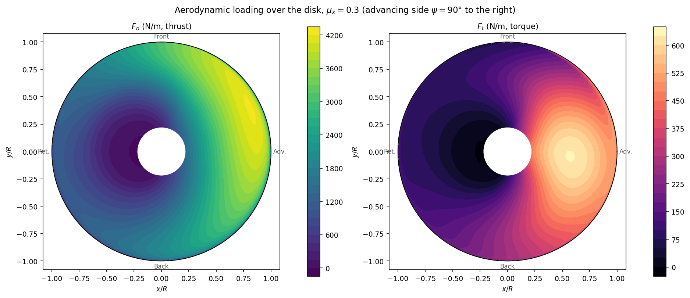
starter_rotor, $\mu_x=0.30$, level flight,
$\psi=90^\circ$ upward in graph, advance in $+y$ direction): normal load $F_n$
(thrust per unit span) and tangential load $F_t$ (torque per unit span) over the complete disk. $F_n$ is
systematically positive and largest on the advancing side ($\psi\approx90^\circ$, where $U_T=\Omega
r+V_x\sin\psi$ is maximum) than on the
retreating side ($\psi\approx270^\circ$, where $U_T$ is minimum and can enter reverse flow near root, Section 8.4). The longitudinal-lateral asymmetry of
the field is the same harmonic signature of
$\lambda_i(r,\psi)$ discussed in Section 9.2. $F_t$
changes sign: positive (absorbing torque
from the shaft) over most of the disk, but locally negative in the reverse-flow region, where the
blade can momentarily produce thrust rather than drag.The two parts of the torque, and the two parts of the power. Splitting $dF_t$ along the two terms of its own definition splits the torque, and with it the shaft power, into two contributions with quite different behavior:
$P_i$, the induced power, is the part paid for producing thrust. It exists because the resultant force has to be tilted backwards by $\phi$ in order to have a component along the shaft, and $\phi$ is non-zero only because the rotor is pushing air through its own disk. It therefore scales with the induced velocity, and it falls as forward speed renews the mass flow through the disk.
$P_0$, the profile power, is the part paid for dragging the blades through the air. It would exist on a blade producing no thrust at all. Because profile drag on an element goes with the cube of its tangential velocity, and $U_T$ gains $V_x\sin\psi$ over part of the disk, integrating it around one revolution gives the classical closed form
obtained for a constant drag coefficient and an untwisted rectangular blade. zBEMT does not use that expression (it integrates the actual $C_d$ element by element) but the form is worth carrying, because it says that profile power grows slowly with advance ratio and never disappears.
The two move in opposite directions as speed rises, which is what gives a helicopter its bucket-shaped power curve. The Results tab can map and plot $F_{t,i}$ and $F_{t,p}$ separately, which is the direct way to see which of the two dominates at a given condition.
5.6.5 Solidity and disk loading
Solidity converts the load of one blade (Section 5.6.3, per unit span) into the load of $N_b$ blades per unit annular area, which enters equality with momentum theory (Section 5.7.5). The linearized form above, obtained by assuming $C_l$ linear in $\alpha$ and integrating analytically, serves for order-of-magnitude estimation. ZBEMT solves numerically, element by element, with the actual airfoil polar, without this linearization.
5.7 Momentum Theory
5.7.1 Global actuator disk
The rotor is modeled as an actuator disk: a permeable, infinitesimally thin surface of area $A=\pi R^2$, which accelerates air uniformly, without friction and without induced rotation in the wake. The control volume analysis (Rankine–Froude) considers three stations along the streamtube: upstream ($\infty$, air at rest), at the disk ($1$), and in the far wake ($2$).

Conservation of mass, axial momentum, and energy (Bernoulli on each side of the disk, with pressure jump $\Delta p$ concentrated on it):
where $\dot m$ is the mass flow rate through the disk, $v$ the induced velocity at the disk plane, and $w$ the induced velocity in the far wake. Dividing the energy equation by the momentum equation (canceling $\dot m$):
The induced velocity in the far wake is twice the induced velocity at the disk plane. The thrust results in:
$v_h$ is the ideal hover-induced velocity. The ideal induced power, $P_i=Tv_h$, is the thermodynamic minimum to produce thrust $T$ with disk area $A$; the ratio of this minimum to actual power is the Figure of Merit (Section 5.4.4).
5.7.2 Vertical climb and descent

Repeating the analysis with climb velocity $V_z$ imposed on the rotor (mass entering the disk at $V_z+v$):
Climbing reduces the induced velocity required: the vertical motion already delivers part of the air mass with axial velocity, requiring less additional acceleration for the same thrust. Total power ($P=T(V_z+v)$) increases with climb despite lower $v$, via the $TV_z$ term.
5.7.3 Limits of validity: vortex ring and windmill brake
The relation in Section 5.7.2 assumes a well-defined streamtube passing through the disk in a single direction: valid in hover, in any climb ($V_z\ge0$), and in rapid descent. There exists a band of slow to moderate descent, $-2v_h\lesssim V_z\lesssim0$, in which this assumption does not describe the actual flow.
In descent the disk moves down into the air it has just accelerated downwards. When the descent rate and the induced velocity are of the same order (which is what that band means), the two nearly cancel, the wake cannot escape in either direction, and the reingested air rolls into an unstable recirculating torus around the disk: the vortex ring state. Beside it, at slightly faster descent, lies the turbulent wake state, where the wake is broken up but still not convected clear.
Descend faster still and the wake escapes cleanly upwards, the streamtube is well defined again, and momentum theory recovers: the windmill brake state, in which the rotor extracts energy from the flow like a wind turbine while still producing thrust.

5.7.4 Effect of advance ratio on induced velocity
In horizontal advance, the mass flow rate through the disk generalizes to $U=|\vec V_x+\vec v_i|$, resulting in $v_i=T/(2\rho A\,U)$: implicit equation in $v_i$, which reduces to the formulas of Sections 5.7.1 and 5.7.2 in the appropriate limits. Induced velocity decreases monotonically with $\mu_x$: horizontal advance renews the air mass passing through the disk, reducing the additional induced velocity required for the same thrust. In rapid advance, $v_i\propto1/V_x$, and rotor power becomes dominated by profile drag (Section 5.6.4) and fuselage parasitic drag.

5.7.5 From global disk to elementary ring
The connection between the global analysis of Sections 5.7.1 to 5.7.4 and Blade Element Theory (Section 5.6) requires a local version of momentum theory, applied to an elementary ring of radius $r$ to $r+dr$ (area $dA=2\pi r\,dr$). The central hypothesis (and the main conceptual limitation of classical BEMT) is that distinct radial rings do not exchange mass or momentum with each other: each ring behaves like an independent actuator disk, isolated from neighbors. This hypothesis ignores radial turbulent mixing and tip vortex induction on inner rings. The Prandtl correction (Section 9.3) reintroduces approximately the effect of finite number of blades that this hypothesis suppresses.
Under this hypothesis, repeating Section 5.7.1 for the ring:
Introducing the Prandtl factor $F$ (Section 9.3) and dimensionless variables (Section 5.4):
This equation, equated to the load calculated by the blade element (Section 5.6), determines $\lambda_i(r,\psi)$: the coupling formalized in Section 5.9. Elementary momentum theory addresses only the axial balance (thrust). The angular momentum conservation required to produce torque is accounted for by the blade element side (tangential force, Section 5.6.4), not reintroduced here as an independent momentum unknown.
5.8 The fixed-point equation
The two theories furnish two expressions for the same elementary normal load $dF_n$ (Sections 5.6 and 5.7). Defining $g$ as the function that maps a trial field $\lambda_i$ to the value of $\lambda_i$ that momentum theory would produce to sustain the load calculated by blade element theory from that same field, the problem takes the form
This is a fixed-point equation rather than a simple algebraic one. The right-hand side depends on $\lambda_i$ nonlinearly, through $\phi$, through $\alpha_{eff}$, and through the nonlinearity of $C_l(\alpha)$ near stall. There is no closed-form solution in general, so it is solved iteratively:
- Initialization. Field $\lambda_i^{(0)}$ from the uniform actuator disk estimate (Section 5.7.1);
- Blade element evaluation. With $\lambda_i^{(k)}$, compute $U_P$, $U_T$, $\phi$, $\alpha_{eff}$ (Sections 5.2 and 5.3), $C_l$, $C_d$, $L$, $D$ and normal/tangential components (Section 5.6) for all elements simultaneously;
- Momentum equation evaluation. From the same normal load, compute $\lambda_i^{next}$ (Section 5.9.1);
- Update. A numerical solver (Section 9.5) uses the residual $\lambda_i^{next}-\lambda_i^{(k)}$ to produce $\lambda_i^{(k+1)}$;
- Convergence. Steps 2–4 are repeated until the residual, at every element, is below tolerance (typically $10^{-6}$ in $\lambda_i$).
Steps 2 and 3 are the element evaluation. Step 4 is the solver, and which of the four algorithms
of Section 9.5.1 performs it is a
configuration choice: fixed_point,
newton, bisection or aitken. They differ in how they turn a
residual into the next estimate, not in what the residual is.
5.9 Formal Coupling
5.9.1 Equality of the two theories
For an element at $(r,\psi)$, Sections 5.7.5 and 5.6.4 provide two independent expressions for the elementary normal load:
The left-hand side is the elementary momentum balance of Section 5.7.5; the right-hand side is the blade-element load of Section 5.6.4, projected normal to the disk.
Isolating $\lambda_i$ on the left gives the map $g$ of Section 5.8 in closed form,
where $F_n$ is the normal load per unit span from the blade-element side, $F$ the tip and root loss factor of Section 9.3, and $\Xi$ the harmonic weight contributed by the non-uniform inflow models of Section 9.2, equal to $1$ in classical BEMT.
Two features of the denominator are worth reading. The factor $\sqrt{\lambda_{total}^{2}+\mu_x^{2}}$ is the speed of the mass flow through the ring: it reduces to the axial component alone in hover, where $\mu_x=0$, and grows with the in-plane component in forward flight, which is why the same load needs less induced velocity as the rotor advances. And because both terms vanish together at the root of a hovering rotor, a small constant is added under the root so that the expression stays finite there. It is far below the tolerance of Section 9.5.2 and does not affect a converged result.
5.9.2 Order in which an element is evaluated
Given a trial field $\lambda_i$, the function executes, vectorized over the entire mesh $(N_e,N_\psi)$:
- $U_P$, $U_T$, $W$ (Section 5.2);
- $\phi=\text{atan2}(U_P,U_T)$, $\alpha_{eff}=\theta-\phi$, with reverse-flow treatment per selected model (Section 8.4);
- $C_l$, $C_d$ from the polar at $(\alpha_{eff},M)$, followed by rotational corrections (Section 9.4.1), radial flow (Section 9.4.2), and compressibility (Section 8.5);
- $L$, $D$ (Section 5.6.3), $F_n$, $F_t=F_{t,i}+F_{t,p}$ (Section 5.6.4);
- Prandtl factor $F$ (Section 9.3);
- inflow harmonic, if active (Section 9.2);
- $\lambda_i^{next}$ (Section 5.9.1).
The numerical solver and the Results plots use the returned aerodynamic state. The sequence helps you diagnose a solution. In normal GUI use, check the convergence and the physical inputs described above.
5.10 Two worked cases: hover and forward flight
Hover ($\mu_x=0$, $V_x=0$) is the axisymmetric limit of the general problem: no azimuthal variation, so the mesh's $N_\psi$ dimension carries no physics (Section 5.1) and every physical correction that exists specifically to handle forward-flight asymmetry (reverse flow (Section 8.4), non-uniform inflow harmonics (Section 9.2), the azimuth-crossing term of the relaxation schedule (Section 9.5.3)) is inactive or a no-op. What remains is the irreducible core: momentum theory (Section 5.7) against blade element theory (Section 5.6), tip/root loss (Section 9.3), and the solver (Section 9.5).
For the starter rotor at $\mu_x=0$, RPM$=1200$ and collective$=8^\circ$:
| Quantity | Value | Cross-check |
|---|---|---|
| $C_T$ | $0.02863$ | |
| $C_Q=C_P$ | $0.004111$ | equal by definition, at any condition: $P=Q\Omega$ and the two reference scales differ by exactly $\Omega R$ (Section 5.4.4) |
| Thrust $T$ | $4248$ N | |
| Ideal induced velocity $v_h=\sqrt{T/2\rho A}$ | $18.8$ m/s | Section 5.7.1, $A=\pi R^2=4.91\,\text{m}^2$ |
| Ideal induced power $P_i=Tv_h$ | $79.8$ kW | Section 5.7.1 |
| Actual power $P$ | $95.8$ kW | solved by BEMT (includes profile power) |
| Figure of Merit $FM$ | $0.833$ | The coefficient form of Section 5.4.4, $FM=(C_T^{3/2}/\sqrt2)/C_Q$, which in hover equals the ratio $P_i/P$ of the two rows above. Well-designed rotors sit at $0.7$–$0.8$; this reference geometry is slightly above that band |
| Hub side force $C_Y$, drag $C_H$, moments $C_{Mx}$, $C_{My}$ | $\sim10^{-19}$ | zero to floating-point noise. Axisymmetric loading has no preferred azimuthal direction to push the hub sideways |
| Convergence | 100% of elements, 4.08 mean iterations | Newton-Raphson (Section 9.5.1), no reverse flow or stall complications to slow it down |
In hover, aerodynamic axisymmetry dictates that integrated in-plane hub forces ($C_H, C_Y$) and hub moments ($C_{Mx}, C_{My}$) vanish identically. Computed values on the order of machine epsilon ($\sim 10^{-19}$) reflect numerical precision limits. Any non-zero in-plane hub loads indicate asymmetric input geometry, unequal blade distribution, or non-zero in-plane freestream velocity.
At forward advance ($\mu_x = 0.3$), tangential velocity $U_T(r,\psi) = \Omega r + V_x\sin\psi$ generates azimuthal dynamic pressure asymmetry between the advancing blade ($\psi = 90^\circ$) and retreating blade ($\psi = 270^\circ$). Over the inboard retreating sector ($r/R < \mu_x$), reverse flow develops ($U_T < 0$, Section 8.4), introducing non-uniform induced inflow and requiring dynamic under-relaxation (Section 9.5.3).
| Quantity | Hover ($\mu_x=0$) | Forward flight ($\mu_x=0.3$) | Physical mechanism |
|---|---|---|---|
| $C_T$ | $0.02863$ | $0.04429$ | Advancing-blade dynamic pressure increase exceeds retreating-blade deficit at fixed collective |
| $C_Q=C_P$? | equal | $C_Q=0.003702$, $C_P=0.003702$ | Identical by rotor coefficient definition ($C_P = C_Q$) across all flight regimes (Section 5.4.4) |
| Thrust $T$ | $4248$ N | $6571$ N | Dimensional thrust at constant collective pitch |
| $C_H$ (in-plane drag) | $\sim0$ | $0.003239$ | Net longitudinal in-plane H-force resulting from asymmetric blade element drag and tilted lift vectors |
| $C_Y$ (side force) | $\sim0$ | $-0.000665$ | Lateral Y-force resulting from azimuthal asymmetry across disk |
| $FM$ | $0.833$ (valid) | $1.78$ | Defined only in hover. In forward flight, actuator disk hover power ceases to represent physical ideal (Section 12.3) |
| Convergence | 100%, 4.08 mean iter. | 99.97%, 4.60 mean iter. | Minor convergence rate reduction in isolated inboard reverse-flow elements |
Comparing hover and forward flight illustrates the transition from axisymmetric flow to azimuthal asymmetry. In forward flight, in-plane hub forces ($C_H, C_Y$) and tilting moments emerge directly from advancing/retreating dynamic pressure differentials, retreating-blade reverse flow, and non-uniform induced inflow.
6. Project
The Project tab creates, opens, and saves the project and defines the operation convention used by every other tab. The convention identifies whether the shaft is vertical (rotor) or horizontal (propeller), which determines the displayed meaning of the flow components. Blade geometry and flight conditions are configured in later tabs. This tab selects the project context edited by the GUI.
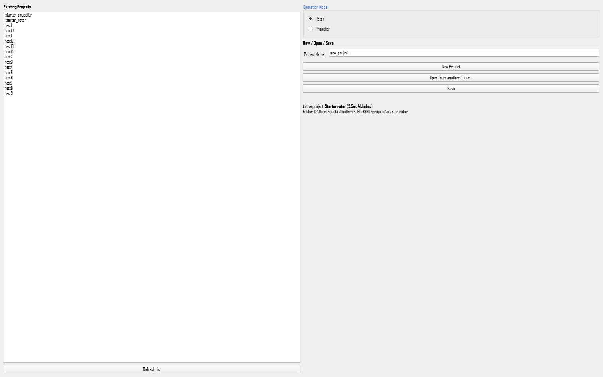
Editorial scope. The sections below follow the visible Project controls. Each one defines the setting, states its physical or project-level effect and limitations, lists the available options, and separates GUI, .bemt, and CLI configuration.
- Pick the operation mode, rotor or propeller, before anything else. It changes what the flow fields mean in the run tabs, so setting it afterwards means rereading those fields.
- Either select an existing project from the list and open it, or type a name and create a new one.
- Work through the other tabs. Everything is edited in memory.
- Return here and press Save. Until then, zBEMT writes nothing to disk.
6.1 Operation mode: rotor or propeller
Physical definition. This choice states how the shaft is mounted, and that is a statement about the aircraft rather than about the aerodynamics. A rotor has a vertical shaft: it lifts, and the aircraft's forward speed lies in the plane the blades sweep. A propeller has a horizontal shaft: it thrusts, and the aircraft's airspeed runs along the shaft. The equations solved are identical in both cases. What changes is which physical component of the free stream each letter refers to, and therefore which field the airspeed belongs in.
Because the shaft direction differs, the same letter names different components in the two modes. For a rotor, $x$ lies in the disk plane and $z$ runs along the shaft. For a propeller the two are exchanged. This is the single most common source of a wrong propeller result: entering the airspeed in the field that means cross-flow. The window relabels both flow rows when the mode is switched, so the labels can be trusted. The letters cannot be assumed.
Configuration and limitation. Choose the mode before building the case. Switching mode on a project that already has saved conditions does not convert them: the stored numbers stay where they are and are reinterpreted under the new convention, which is almost never what is wanted. The mode also selects which coefficients are reported, since a propeller is judged by propulsive efficiency and a rotor by figure of merit.
GUI: the Operation Mode group, with the Rotor and Propeller radio buttons. The other tabs show the current mode as a read-only label, so it can be changed only here.
.bemt: the key is_propeller in
config.bemt, a switch, default false for a rotor. It sits with the solver
settings rather than with the project name because the engine reads it. It also decides which
letters are written into saved_cases.bemt and batches.bemt, so changing
it by hand without rewriting those files leaves them stating the wrong components.
CLI: --set config.is_propeller=true. The mode
normally travels with the project rather than being set per run.
6.2 Project name
Definition. The name identifies the study. It names the folder when a project is created, and it is the title that appears at the head of a generated report, so it is worth making it descriptive of the machine and the study rather than leaving it at the default.
Configuration and limitation. Use characters that are valid in a folder name. Renaming a project after it exists changes the stored name but not the folder it already lives in. To move it, save it under a new name and the folder follows.
GUI: the Project Name field, above the create, open and save buttons.
.bemt: the key name in meta.bemt,
which holds nothing else. Editing that file renames the project without moving its folder.
CLI: --name TEXT when creating a project with
--new.
6.3 Creating, opening and saving
Definition and file representation. A project is a folder, not a single file, and these three actions manage it. Creating one writes a folder of defaults that is immediately valid: it describes a plausible rotor and can be run without editing anything, which makes it a working starting point rather than an empty shell. Opening reads such a folder back. Saving writes the current state over it.
Persistence behavior. Editing any tab changes the project held in memory and touches no file. This is deliberate: an experiment can be tried and abandoned without consequence. The cost is that closing the GUI with unsaved work loses it, so the GUI asks before letting that happen. The list on the left shows the projects found in the repository's own projects folder. A project kept anywhere else is reached with the open button.
GUI: New Project, Open from another folder and Save, with the Existing Projects list and its Refresh List button on the left. A project in the list opens on a double click. The line below the buttons reports which project is active and the folder it came from, which is the quickest way to confirm that the GUI is editing what you think it is.
.bemt: saving writes the whole inputs/ folder:
meta.bemt, geom.bemt, airfoil.bemt,
airfoil_sections.bemt, config.bemt, saved_cases.bemt and
batches.bemt. Each is plain JSON and can be read, edited and compared outside the
program.
CLI: --new PATH creates a project,
--project PATH opens one for the run, and --save-as PATH writes the
project, including anything changed by flags in that same command, to a new folder. That last one
is how a configuration explored from the command line becomes a project the GUI can open.
7. Geometry
The Geometry tab describes the blade. Two numbers apply to the rotor as a whole, the number of blades and the radius, and the rest of the blade is a table giving the chord and the twist at a series of radial stations. Whatever produced that table, the solver reads only the table: a blade generated from a preset and a blade typed in cell by cell are the same object once they are on screen.
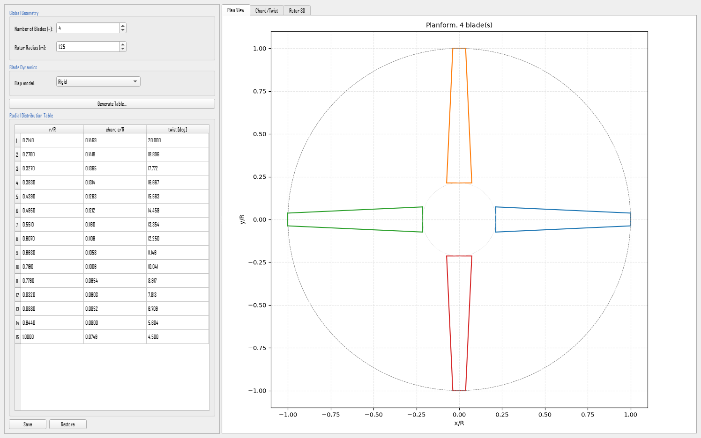
Editorial scope. Each field section below defines the quantity, identifies its governing equation and units, explains direct and secondary effects, states applicability and limitations, lists options, and separates GUI, .bemt, and CLI configuration. The list above covers the fields that sit directly on the tab. The chapter also documents the radial table itself (Section 7.3) and the fields of the Generate Table dialog (7.4.1 and 7.4.2), which carry their own help where they appear.
- Set the number of blades and the radius. They apply to the whole rotor and can be changed at any time, including after the table has been filled.
- Fill the radial table. Use Generate Table to produce it from a planform preset, or type the stations directly if the blade is already known.
- Check the preview on the right. The plan view shows the planform, and the chord and twist view shows the two distributions against radius.
- Save when the blade is right. Every edit is already in the project held in memory and the preview already reflects it. Saving is what writes it to disk. Restore reloads the last saved version and discards the edits since.
7.1 Number of blades and radius
The physics. Number of blades and rotor radius set the scale of the whole problem. The radius fixes the disk area the rotor works on and, together with the rotational speed, the tip speed that every velocity in the solution is measured against. The number of blades fixes how much blade area is available to carry the load: for a given total thrust, more blades means less load on each, a smaller induced velocity behind each one and a weaker tip vortex, at the cost of more profile drag and more interference between blades.
The mathematics. The two combine with the chord distribution into the solidity, the fraction of the disk that is blade,
where $N_b$ is the number of blades and $S_b$ the planform area of one of them. Solidity is what the thrust coefficient is normalized against when blade loading is discussed, since $C_T/\sigma$ is the quantity that indicates how hard the blade sections are working. The radius also enters every coefficient through the disk area $\pi R^{2}$ and the tip speed $\Omega R$.
Configuration and valid range. Blade count is an integer ($N_b \ge 2$), and radius is specified in meters ($R > 0$). Both represent geometric design constants. Because chord distributions are stored non-dimensionally as $c/R$, modifying rotor radius proportionally scales physical blade chord dimensions without altering relative planform geometry.
GUI: the Global Geometry group, fields Number of Blades and Rotor Radius [m], always visible at the top of the tab.
.bemt: the keys n_blades, an integer defaulting to
$2$, and radius_m, in metres, defaulting to $1.0$, both in
geom.bemt.
CLI: --geom-n-blades N and
--geom-radius R. Both can be combined with a preset, or applied on top of a geometry
loaded from a file.
7.2 Root cutout
The physics. The blade does not begin at the axis. The innermost part of the span is occupied by the hub, the grips and the pitch bearings, which carry no aerofoil section and produce no useful lift. The root cutout is where the lifting blade starts, expressed as a fraction of the radius, and the region inside it is excluded from the integration of thrust and torque. Ignoring it overestimates thrust, but only slightly: the inboard stations move slowly, so they contribute little, which is also why the exact value is not critical.
The mathematics. The loads are integrated from the cutout outwards rather than from the axis,
and the same lower limit applies to torque and power. Because the elemental thrust grows roughly with $r^{2}$, moving the cutout from $0$ to $0.15$ removes only a few per cent of the thrust.
Configuration and valid range. A fraction of the radius between $0$ and $1$, in practice between $0.10$ and $0.25$ for a helicopter rotor and often larger for a propeller with a substantial spinner. The default is $0.15$. The value must be smaller than the first station of the radial table, since a cutout that swallows part of the table leaves those stations outside the integration.
GUI: a field in the Generate Table dialog, applied to the table it produces.
.bemt: the key root_cutout_norm in
geom.bemt, defaulting to $0.15$.
CLI: --geom-root-cutout X.
7.3 The radial table
The physics. The table is the blade. Each row gives, at one radial station, the chord and the twist of the section there. Chord decides how much area that station has to generate lift with, and therefore the local solidity. Twist decides the angle at which the section meets the flow, and it matters because the inflow angle varies strongly along the span: a section near the root sees a much steeper approach than one near the tip, so a blade with no twist works at a very uneven angle of attack and stalls inboard while the tip is still lightly loaded. Twist that decreases towards the tip is what evens this out.
The mathematics. The chord is stored normalized by the radius and the twist in degrees, so the table is a set of triples
The three columns are lists of equal length. Between stations the solver interpolates, so the table need not have as many rows as the mesh has radial stations. The twist stored here is the geometric twist that the collective is added to, giving the pitch $\theta(r)=\theta_{col}+\theta_{geo}(r)$ at each station.
Configuration and valid range. Radial positions run from the root cutout to $1.0$ and must increase down the column. Chord is normalized, so a chord of $0.08$ on a radius of $1.25$ m is $0.1$ m. Twist is in degrees and is normally positive at the root and falling towards the tip. A blade whose twist rises outboard is almost always a sign of a sign convention applied backwards. Ten to twenty stations describe most blades adequately, with more where the planform changes quickly.
GUI: the Radial Distribution Table, with the columns r/R, chord c/R and twist [deg], editable cell by cell. Confirming a cell rebuilds the blade immediately, keeping the current number of blades and radius.
.bemt: the keys r_norm, chord_norm
and twist_deg in geom.bemt, three lists of equal length. They are the
authoritative description of the blade. Everything else in the file describes how they were
obtained.
CLI: --geom-preset custom --geom-custom-points
r:c:t,r:c:t,... gives the stations directly, each point being the radial position, the
normalized chord and the twist separated by colons. --geom-file PATH loads a complete
geometry that has already been saved.
7.4 Generating the table from a preset
The physics. Rather than typing a table, a blade can be generated from a planform description. The three presets are the three classical planforms, and they differ in how the chord is distributed along the span. A rectangular blade has constant chord and is the simplest to build. A tapered blade narrows towards the tip, which moves area inboard and reduces the tip loading. An elliptic blade follows the distribution that minimizes induced drag for a given lift, and serves as the ideal against which the other two are judged. All three take a linear twist between a root value and a tip value.
What can be entered. The dialog offers the preset and the parameters that preset needs.
| Preset | Chord distribution | Parameters |
|---|---|---|
| Rectangular | Constant along the span. | The chord, and the twist at root and tip. |
| Tapered | Linear, from the root chord to the tip chord. | The root chord and the taper ratio, plus the twist at root and tip. |
| Elliptic | Elliptic, the minimum-induced-drag distribution. | The maximum chord, plus the twist at root and tip. |
| Custom | Whatever the table says. | The stations themselves. |
Configuration and persistence. Confirming the dialog replaces the whole table. It does not add to what is already there. The number of stations generated is also set in the dialog. After generating, the table can still be edited by hand: the preset is a starting point, not a constraint.
GUI: the Generate Table button above the radial table.
.bemt: the generated stations are written into the table keys
described above. How they were generated is kept beside them in origin, the name of
the preset used, defaulting to "parametric", and origin_params, the
values that were given to it. Both are a record only: the solver always reads the table and never
the generating parameters, so editing them changes nothing about the blade. They exist so the
dialog can be reopened with its fields as they were left.
CLI: --geom-preset rectangular|tapered|elliptic|custom
selects the planform, with --geom-chord C, --geom-taper-ratio X,
--geom-max-chord C, --geom-twist-root T0 and
--geom-twist-tip T1 supplying the parameters the chosen preset uses.
7.4.1 The dialog's fields
The planform. kind selects which of the three shapes is generated, and
decides which of the fields below are read. A rectangular blade needs only its chord. A tapered one
needs the root chord and how far it narrows. An elliptic one needs its widest chord.
The chord. For a rectangular blade the chord is constant along the span. For a tapered
blade the root chord is given together with tip_chord_norm, the chord at the tip as a
fraction of the root chord, so a value of $0.5$ halves the chord from root to tip. Taper moves area
inboard, which unloads the tip and reduces the induced loss there, at the cost of a smaller area
where the dynamic pressure is highest. For an elliptic blade the maximum chord is given and the
distribution follows from it.
The twist. twist_root_deg and twist_tip_deg set a linear twist
between the two ends. Twist exists because the inflow angle varies strongly along the span: a
section near the root meets the flow at a much steeper angle than one near the tip, so a blade with
no twist works at a very uneven angle of attack and stalls inboard while the tip is barely loaded.
A root value larger than the tip value is the normal case, and typically the difference is between
$8^\circ$ and $16^\circ$.
The root cutout. The field labeled Root cutout (r/R) sets where the generated table starts: no station is produced inside it, because there is no lifting blade there. It is the same quantity documented in 7.2, which gives its key, its range and its effect on the integration, and this dialog is the only place the window offers a control for it.
The resolution. n_stations is how many rows the generated table has. It
controls how finely the planform is described, not how finely the disk is solved, which is set
separately by the mesh. Fifteen to twenty-five stations describe most blades. More is worth having
only where the planform changes quickly.
Configuration. Fill the fields the chosen planform uses and confirm. The dialog replaces the whole table rather than adding to it, and the result can still be edited by hand afterwards, so a preset is a starting point rather than a constraint.
GUI: the Generate Table dialog: the planform selector, the chord and twist fields for that planform, and the number of stations.
.bemt: the generated stations are written into the three
radial-table lists in geom.bemt described in 7.3.
What the dialog was given is kept beside them in origin and
origin_params, whose entries are kind, tip_chord_norm,
twist_root_deg, twist_tip_deg, n_stations and, when sizing
by them, solidity and aspect_ratio. They are a record only: the solver
reads the table, never the parameters, so editing them changes nothing about the blade. They exist
so the dialog can reopen with its fields as they were left.
CLI: --geom-preset rectangular|tapered|elliptic
with --geom-chord C, --geom-taper-ratio X,
--geom-max-chord C, --geom-twist-root T0 and
--geom-twist-tip T1. The remaining dialog entries have no flags of their own and are
set with --set, for example --set geom.origin_params=....
7.4.2 Solidity and blade aspect ratio
The same dialog can size the chord from a target solidity or a target blade aspect ratio instead of from a chord in metres. For $N_b$ blades of radius $R$ and planform area $S_b$ each,
With the number of blades fixed, these two are not independent: raising the solidity necessarily lowers the aspect ratio. The dialog keeps them consistent while it scales the chord, scaling the constant chord of a rectangular blade, both chords of a tapered blade so that its taper ratio is preserved, and the maximum chord of an elliptic one. Root cutout and twist are unaffected.
This is a way of sizing the planform, not a finite-wing correction. Higher solidity allows more load per unit of disk area but raises profile drag and therefore power. Higher aspect ratio tends to reduce the induced loss for a comparable distribution of lift.
7.5 The blade section
Definition. The geometry records which aerofoil the blade uses. It is a label rather than a shape: the aerodynamic behavior of the section, its lift and drag against angle of attack, is defined in the Airfoil tab. The name exists so that a geometry can state which section it was designed around, and so that a blade using several sections along its span can say which one applies where.
Configuration. Leave it empty when the blade uses a single section defined in the Airfoil tab, which is the common case. Set it when the geometry is meant to travel with a named section.
GUI: not shown in the Geometry tab. Radial sections are managed in the Airfoil tab, which is where a blade with more than one profile is described.
.bemt: the key airfoil_name in
geom.bemt, a string, empty by default.
CLI: --set geom.airfoil_name=NAME.
7.6 Preview
The panel on the right redraws whenever the geometry changes, and it is the quickest check that a table is what was intended. Plan View draws the planform of every blade in the disk, so an error in the chord column is visible immediately as a blade of the wrong shape. Chord/Twist plots the two distributions against the radius. A twist column entered with the wrong sign appears there as a line that slopes the wrong way. Rotor 3D shows the assembled rotor when the three-dimensional visualization package is installed, and is omitted when it is not.
The preview is drawn from the table exactly as it stands on screen, including a cell edited a moment ago and not yet written to disk. It therefore shows the blade the project currently holds in memory, which is the blade a run started now would use, not the blade last saved. When the tab title carries the unsaved marker, the preview and the saved folder describe different blades.
8. Airfoil
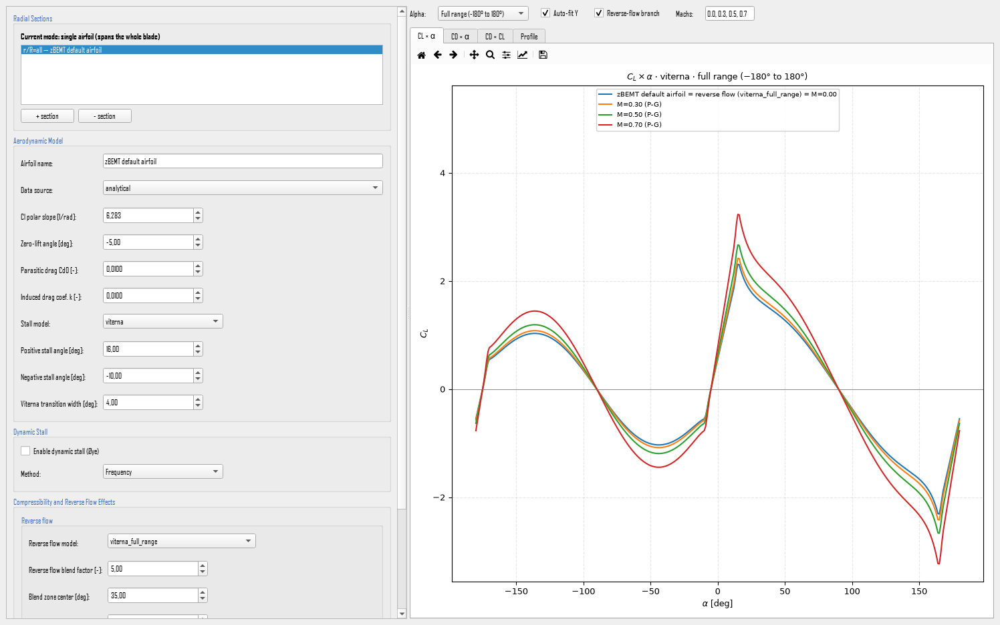
naca_code→ 8.7.1cst_upper→ 8.7.1cst_lower→ 8.7.1bezier_control_points→ 8.7.1external_reynolds_list→ 8.8.1external_mach_list→ 8.8.1external_alpha_min_deg→ 8.8.1external_alpha_max_deg→ 8.8.1external_alpha_step_deg→ 8.8.1r_norm→ 8.8.3extend_full_range→ 8.2.4viterna_blend_width_deg→ 8.2.4name→ 8.2.1source→ 8.2.1cl_alpha→ 8.2.1alpha0_deg→ 8.2.1cd0→ 8.2.1k→ 8.2.1stall_model→ 8.2.2alpha_stall_pos_deg→ 8.2.3alpha_stall_neg_deg→ 8.2.3dynamic_stall_A→ 8.3.4dynamic_stall_fade_start_deg→ 8.3.5dynamic_stall_fade_end_deg→ 8.3.5use_dynamic_stall→ 8.3.3reverse_flow_model→ 8.4.1reverse_flow_blend_factor→ 8.4.2thin_plate_blend_center_deg→ 8.4.3thin_plate_blend_width_deg→ 8.4.3use_compressibility→ 8.5
Editorial scope. Each field section below is self-contained. It gives the physical definition, mathematical model, effects on the polar and loads, applicability and limitations, available options, and separate GUI, .bemt, and CLI instructions.
The Airfoil tab defines the sectional aerodynamic properties across the blade span: static lift and drag polars with post-stall models (Section 8.2), dynamic stall unsteady lag (Section 8.3), reverse-flow post-stall extensions (Section 8.4), subsonic compressibility corrections (Section 8.5), tabulated polar ingestion (Section 8.6), and 2D coordinate profiling for polar generation via NeuralFoil (Sections 8.7–8.8). When multiple radial stations are defined (Section 8.1), these settings apply independently per spanwise section.
8.1 Radial sections (multi-section airfoil)
A blade can use a single airfoil from root to tip, or vary the airfoil along the radius (common in real blades: thicker profile near the root for structure, thinner at the tip for performance). The GUI treats both cases in the same tab. What changes is how many sections exist.
A station lying between two defined sections takes its coefficients by linear interpolation in $r/R$ between the two neighboring polars, evaluated at the same angle of attack and the same condition. The blend is in the coefficients, not in the shapes: the two profiles are never merged into an intermediate airfoil, their polars are mixed. Outside the outermost pair the nearest section is used unchanged rather than extrapolated. Section 8.1.3 states what this means when placing a section.
GUI: the Radial sections block, at the top of the Airfoil tab and always visible. It holds the list of sections and the buttons that add and remove one.
.bemt: the file airfoil_sections.bemt, one entry
per section, when two or more sections are defined. With a single airfoil that file is empty or
absent and the definition lives in airfoil.bemt alone.
CLI: --airfoil-sections-file PATH loads a prepared
set of sections. There is no flag for editing one section at a time. A multi-section blade is built
in the window and saved, or the file is written by hand.
8.1.1 "Single airfoil" mode (0 or 1 section)
This is the state of every new project. The blade uses one airfoil from root to tip, so the
blocks of 8.2 to 8.9 describe that single airfoil, and neither the section list nor the $r/R$ field
is shown. In the project files the sections file is empty or absent, and
airfoil.bemt alone holds the definition.
The physical assumption. Single-airfoil mode says that one profile shape is extruded along the whole span: the same camber, the same thickness ratio, the same leading-edge radius from root to tip. It does not say that the aerodynamics is the same everywhere. The flow the blade meets changes strongly with radius,
and that variation stays resolved: each radial station selects the tabulated condition closest to its own Reynolds and Mach, so the root and the tip of a single-profile blade already receive different drag and different stall behavior. Since $U$ grows linearly with $r$ while the chord usually tapers only mildly, the tip Reynolds is typically five to ten times the root value, and that whole spread is captured. What this mode gives up is the change of profile shape along the span.
Scope and modeling assumptions. Uniform single-profile modeling is appropriate for constant-section blades, small-scale propellers, and idealized rotor studies. However, full-scale rotorcraft and wind turbine blades incorporate spanwise aerodynamic tailoring (for example, thick 18–24% root sections for structural depth transitioning to thin 8–12% transonic tip sections). Enforcing a single profile throughout introduces systematic errors: applying the thick root profile at the tip overpredicts profile power due to high dynamic pressure, whereas applying the thin tip profile at the root underestimates low-Reynolds drag and delays root separation.
The boundary. Move to multiple sections whenever thickness or camber actually varies along the blade, whenever the tip approaches drag divergence while the root sits at low Reynolds, or whenever the question being asked is where stall starts. That answer depends on the profile difference this mode cannot represent.
8.1.2 Adding a section
What it does. The behavior depends on how many sections already exist, because a multi-section blade needs at least two: one section on its own would describe the same thing a single airfoil does, with an extra field to get wrong.
From single-airfoil mode, the button turns the current definition into two sections at once, one at $r/R=0.15$ named root and one at $r/R=1.0$ named tip, both carrying the airfoil that was on screen. The blade is unchanged at that moment (two identical polars interpolate to themselves) and becomes a real multi-section blade as soon as one of the two is edited.
With two or more sections, the button copies the section currently selected to a new radial position, chosen automatically at the midpoint of the largest gap between existing neighbors: with sections at $0.15$ and $1.0$, the next lands at $0.575$. The copy takes the original's name with a suffix, and its position can be moved afterwards.
Configuration. Add sections where the profile actually changes, and edit the new one before running: an unedited copy adds mesh work and changes no result.
GUI: the + section button in the Radial sections block.
.bemt: adding a section writes a new entry into
airfoil_sections.bemt; the first use also moves the definition out of
airfoil.bemt into two entries there.
CLI: no flag. Sections are added in the window or by editing
the file, and loaded with --airfoil-sections-file PATH.
8.1.3 Radial position of a section
The physics. A real blade rarely uses one aerofoil from root to tip. The inboard part carries the structure and wants a thick section. The tip wants a thin one, because that is where the relative velocity and the Mach number are highest and where thickness costs the most drag. Defining sections at several radii lets the blade change profile along the span, and the radial position is what says where each one applies.
The mathematics. The position is given as a fraction of the radius, $r/R$, so it is independent of the size of the rotor. Between two defined sections the coefficients are interpolated linearly in that fraction: a station lying a third of the way from one section to the next takes a third of the difference between their lift and drag at the same angle of attack and Mach number. Outside the outermost pair the nearest section is used unchanged rather than extrapolated. The consequence worth knowing is that the blend is in the coefficients, not in the shapes: two sections are not merged into an intermediate aerofoil, their polars are mixed.
Configuration and valid range. Use a value between the root cutout and $1.0$. Place sections where the profile actually changes, and remember that the interpolation is linear, so a sharp change of profile needs two sections close together rather than one in the middle. Three sections — root, mid-span and tip — describe most real blades. The name beside each section is a label for your own use and is never read by the solver.
GUI: the list in the Radial Sections block, with the field r/R of this section beneath it. Clicking a row stores what is on screen into the section being edited and loads the clicked one, so nothing is lost when moving between them. The preview follows.
.bemt: the key r_norm of each entry in
airfoil_sections.bemt. Each entry is a complete airfoil definition, so it also carries
its own label and its own aerodynamic model, with the same keys described in 8.2.1. With a
single airfoil the file is empty and airfoil.bemt is used on its own.
CLI: --airfoil-sections-file PATH loads a prepared
set of sections. There is no flag for editing one section at a time.
8.1.4 Removing a section
What it does. The button removes the section currently selected. Removing one of three leaves two, and the blade stays multi-section.
The automatic collapse. Removing the second of two would leave a list of exactly one section, which is not a state the program keeps, for the reason given in 8.1.2. It therefore collapses back to single-airfoil mode instead, taking the surviving section as the blade's one airfoil and clearing its radial position, which no longer means anything. Nothing about the aerodynamic model is lost in that step: only the statement that it applied at one particular radius.
GUI: the - section button in the Radial sections block.
.bemt: a removal deletes the entry from
airfoil_sections.bemt. When the collapse happens, that file becomes empty and
airfoil.bemt holds the definition again.
CLI: no flag, for the same reason as 8.1.2.
8.1.5 What is edited per section vs. what is global
Everything from 8.2 to 8.9 belongs to one section when two or more sections are defined. That includes the dynamic-stall switch of 8.3.3, so one section can have the lag model active while its neighbor does not, which is what a blade with a thick root and a thin tip usually wants. A generated polar is per section too: the external solver of 8.8 runs on the section currently selected, and a multi-section blade needs it run once for each.
Nothing in this tab is global. The settings that apply to the rotor as a whole (the mesh, the air, the inflow model, the corrections and the solver) are in the Config/Engine tab of Chapter 9, because they describe how the disk is solved rather than what the blade section is.
8.2 Aerodynamic model
This block defines the two-dimensional aerodynamic relation used at every blade element. It specifies the source of $C_l$ and $C_d$, the attached-flow approximation for an analytical source, and the treatment of static stall outside the attached-flow range. The relation is evaluated with the local effective angle of attack, Reynolds number, and Mach number. It is a local constitutive model, not a correction to the blade geometry or to the momentum balance.
8.2.1 Polar source and linear coefficients
Definition. The source decides where the pair $C_l$, $C_d$ comes from at every element. An analytical source evaluates a closed-form expression from four scalar coefficients. A tabulated source interpolates supplied data. A generated source runs an external solver once over the profile shape and then behaves as a tabulated source. Nothing downstream of this choice depends on it: all three answer the same question at the same point in the calculation, which is what makes them interchangeable.
The mathematics. An analytical source represents attached-flow lift with the slope $C_{l_\alpha}$ [rad$^{-1}$] and the zero-lift angle $\alpha_0$ [rad]. With $\alpha$ the local effective angle of attack,
$C_{d0}$ is the zero-lift profile-drag coefficient and $k$ is a dimensionless drag-curvature coefficient, the coefficient of the parabola fitted to $C_d$ against $C_l^2$. The drag expression is a parabolic polar: minimum drag at zero lift, rising quadratically with the lift the section is asked to produce. A tabulated source replaces both expressions with direct linear interpolation through the supplied points $(\alpha_i, C_{l,i}, C_{d,i})$.
Physical effect. Increasing $C_{l_\alpha}$ increases lift at a given angle and therefore thrust at a given collective. Making $\alpha_0$ more negative shifts the whole lift line towards lower angles, which is what camber does. Increasing $C_{d0}$ raises profile drag at every angle and so raises torque and power without touching thrust. Increasing $k$ raises drag only where the section is working hard, so it penalizes the highly loaded outboard stations and the retreating side more than it penalizes the rest of the disk.
How the four coefficients are obtained. $C_{l_\alpha}$ and $\alpha_0$ come from the linear region of wind-tunnel or two-dimensional panel data: the slope of the straight part of the measured $C_l(\alpha)$ curve, and the angle at which it crosses zero. $C_{d0}$ comes from the same data at the design lift coefficient. $k$ is the coefficient of the parabola fitted to $C_d$ against $C_l^2$ over the same low-separation range. Do not use post-stall data for any of these four fits: the expressions above describe attached flow only, and including separated points bends the fit to represent neither regime. Note that the slope is per radian even though the angle fields on screen are in degrees.
Applicability and limitations. Choose the analytical source when a compact attached-flow model is adequate and only four numbers are known about the section, and accept that everything beyond stall is then supplied by the stall model of 8.2.2 rather than measured. Choose the tabulated source when measured or externally computed data exist, which is the higher-fidelity option and the only one that reproduces an asymmetric or irregular real curve. Choose the generated source to produce such a table from a profile shape when no measured data exist.
How a condition selects its data. A tabulated source may carry several slices, labeled by radial position, Reynolds number and Mach number. The three axes are not treated alike. Between radial positions the coefficients are interpolated. Between Reynolds numbers and between Mach numbers the nearest available slice is selected, without interpolation, and nothing warns when the requested condition falls outside the tabulated range: a table that stops at $M=0.4$ supplies its $M=0.4$ data to a tip running at $0.75$ and the run converges cleanly to an answer with no compressible drag rise in it. The supplied condition grid must therefore bracket the operating envelope, root Reynolds to tip Mach.
What can be entered. Three options.
| Option | What it evaluates | When it is the right choice |
|---|---|---|
analytical |
The closed-form lift line and parabolic drag polar above, continued past stall by the model selected in 8.2.2. | Preliminary work, parametric studies, and any section for which only the four scalar coefficients are known. |
table |
Linear interpolation through supplied $(\alpha, C_l, C_d)$ points, resolved in $r/R$, Reynolds and Mach where those labels are present. | Measured, XFOIL or two-dimensional CFD data are available. The highest fidelity offered. |
neuralfoil |
A table generated once from the two-dimensional profile shape, then used exactly as a tabulated polar. | No measured data exist but the profile shape is known. It is a table-generating workflow, not a constitutive relation of its own. |
GUI: the Aerodynamic model block, field Source.
With analytical the four fields Cl_alpha, alpha0, Cd0 and
k are shown and editable. With table they are hidden and the imported polar is
used instead. With neuralfoil the profile and the operating points that generate the
table are given in the blocks below.
.bemt: in airfoil.bemt, the key
source, default "analytical", and the section label name.
For an analytical source the four coefficients are the keys cl_alpha, default $2\pi$;
alpha0_deg, default $-4.5$; cd0, default $0.0155$; and k,
default $0.0$. The angle is stored in degrees and the slope per radian. For a tabulated source the
coefficients live in table_slices instead, described in 8.6. A project saved from the
generated source stores source: "table" as well, since what the engine reads is the
table.
CLI: --airfoil-source {analytical,table} selects
the source. The four analytical coefficients have no flags of their own. Set them with
--set airfoil.cl_alpha=6.1, --set airfoil.alpha0_deg=-4.5,
--set airfoil.cd0=0.012 and --set airfoil.k=0.01.
8.2.2 Static stall model
Definition. Static stall describes what an analytical polar does once boundary-layer separation has invalidated the attached-flow relation of 8.2.1. The four alternatives below are mutually exclusive. None of them is measured data: each is an engineering closure for the case where measured post-stall data are not available, and a tabulated polar that already contains the real post-stall shape does not use them at all.
Why the choice matters beyond accuracy. The residual the induced-inflow solver drives to zero inherits the shape of the polar, so a lift curve with a corner in it gives the residual a corner too. The four options differ not only in how faithfully they represent separated flow but in how differentiable they leave that residual, and the second property is what decides whether a slope-based solver converges near stall.
GUI: the Static stall model dropdown, in the same Aerodynamic model block, shown only for an analytical source. The four options are described one by one below.
.bemt: the key stall_model in
airfoil.bemt, one of "linear", "clip",
"enhanced" or "viterna", default "viterna".
CLI:
--airfoil-stall-model {linear,clip,enhanced,viterna}.
8.2.2.1 linear — no stall at all
The lift line and the drag parabola are applied at every angle, with no upper bound on either coefficient, including far beyond the angle at which the real section has separated. The result is smooth everywhere and physically wrong past stall, where it systematically overestimates $C_l$.
It exists for two purposes. The first is numerical verification: with a residual that stays smooth over the whole angle range, a convergence problem can be isolated from a stall effect. The second is as a theoretical reference limit, the ideal linear rotor against which a real one is compared. It must not be used for performance prediction anywhere near the stall envelope. Selecting it together with dynamic stall is rejected by validation, because the separation function of 8.3.2 is obtained by inverting a static polar that has stall in it, and this one has none.
8.2.2.2 clip — saturated lift
where $C_{l,stall}^\pm=C_{l_\alpha}(\alpha_{stall}^\pm-\alpha_0)$ is the linear line evaluated
exactly at the stall angle, and the same rule applies to $C_d$. Both coefficients are held at their
stall value beyond it: there is no post-stall decay, but neither is there the unbounded
overestimation of linear.
The cost is a corner at $\alpha=\alpha_{stall}^\pm$ — a discontinuity in the derivative, not in the value. An element oscillating across that corner between iterations converges more slowly, since the slope a Newton step is built from changes abruptly there, though it rarely fails to converge outright.
8.2.2.3 enhanced — smooth post-stall decay
Lift decays smoothly past stall and drag rises smoothly towards the value of a flat plate held normal to the flow in total separation, $C_{d,fp}=1.9$. Both curves are anchored at the value the linear line reaches at the stall angle, so the transition is continuous. For the positive side,
with a decay window of $\Delta=30^\circ$ and mirrored expressions on the negative side. $C_l$ falls from $C_{l,stall}$ to zero over that window with a continuous first derivative, while $C_d$ rises over a window half as wide again towards the flat-plate level.
It is a semi-empirical approximation, not measured data, and it is calibrated to reproduce
flat-plate behavior qualitatively rather than any particular section quantitatively. What it buys
is a polar that is $C^1$-continuous everywhere — which is what the Newton and Aitken solvers of
9.5.1 need — from the same five parameters the linear and clip options
already use, with no extra experimental data.

starter_rotor airfoil,
$C_{l_\alpha}=6.283$, $\alpha_0=-5^\circ$, $C_{d0}=0.01$, $k=0.01$,
$\alpha_{stall}^+=16^\circ$ and $\alpha_{stall}^-=-10^\circ$. linear ignores stall
and the lift line continues without bound. clip saturates abruptly at the stall
value, leaving a corner. enhanced decays smoothly towards flat-plate
behavior.8.2.2.4 viterna — the full-range extension as the stall model
None of the three options above is valid much beyond $\pm90^\circ$: thin-airfoil physics and its
stall closures simply do not describe a section operating at $150^\circ$ angle of attack. Selecting
viterna replaces the post-stall closure with the Viterna-Corrigan continuation, which
extends the polar over the entire $\pm180^\circ$ range. Its closed form, its coefficients and its
assumptions are given in 8.2.4, where the same continuation is applied to a tabulated polar.
This is the default, and it is the default because it pairs with the default reverse-flow
treatment: viterna_full_range in 8.4.1 needs a polar defined at every angle, and this
is the option that supplies one for an analytical source. Selecting it means the loads at high
angle inherit the empirical assumptions of the extension rather than any measurement.
8.2.3 Stall angles
Definition and physical effect. These two angles define where the section stops behaving linearly. Below them the flow is attached and lift rises in proportion to the angle of attack. Above them the flow begins to separate from the upper surface and lift stops following the line. They are not the angles of maximum lift: separation starts before the peak, and the peak is already past the point where the polar has left the straight line. Two are needed because an airfoil is not symmetric about zero incidence, so it departs from the line at a different angle on the negative side.
The mathematics. They are the limits within which the analytical polar is the straight line
and outside which the chosen stall model takes over: clipping the lift, closing it smoothly, or handing over to the full-range extension. The stall model decides how the departure is shaped. These angles decide where it begins. They also fix the anchor point of every one of those closures, since each is evaluated on the line at $\alpha_{stall}^\pm$ and continues from there.
Applicability and configuration. They do nothing when the source is a tabulated polar, because the table already contains the real shape, and the maximum and minimum lift and their angles are detected from the data itself. Read them off the measured polar as the angles where the curve visibly leaves the straight line, not where it peaks: taking the peak angle instead pushes the stall several degrees too late and overstates thrust near the limit, while a value below the real one stalls the model early and makes predicted thrust and power pessimistic. Typical values are $12^\circ$ to $16^\circ$ positive and $-6^\circ$ to $-12^\circ$ negative. The positive angle must be greater than the negative one.
GUI: the fields alpha stall + [deg] and alpha stall - [deg], shown only for an analytical polar.
.bemt: the keys alpha_stall_pos_deg, default
$15.0$, and alpha_stall_neg_deg, default $-6.0$, in airfoil.bemt.
CLI: no flags of their own. Set them with
--set airfoil.alpha_stall_pos_deg=14 and
--set airfoil.alpha_stall_neg_deg=-8.
8.2.4 Full-range extension and blend width
Definition. A measured or generated polar covers a finite angle range, typically a few tens of degrees either side of zero. A rotor blade does not stay inside that range: the retreating side in fast forward flight, and the whole reverse-flow region, reach angles for which no data exist. Full-range extension supplies coefficients over the rest of the circle by continuing the polar with the Viterna-Corrigan relations, which wrap any base model — analytical or tabulated — and extend it continuously to $\pm180^\circ$.
The mathematics. Between the anchor angle and $90^\circ$,
where $\alpha_s$ is the stall transition angle, and $(C_{l,s}, C_{d,s})$ are the corresponding aerodynamic coefficients from the base polar. The peak normal drag coefficient $C_{d,max}$ defaults to $2.01$ for 2D sections or evaluates as $1.11 + 0.018\,AR$ when an aspect ratio $AR$ is specified (Viterna & Corrigan, 1981). Coefficients $A_2$ and $B_2$ enforce $C^0$ continuity with the base polar at $\alpha_s$. In the deep post-stall regime ($90^\circ < |\alpha| \le 180^\circ$), coefficients are evaluated by reflection about $90^\circ$ ($C_l$ anti-symmetric, $C_d$ symmetric), closing at $\alpha = \pm 180^\circ$.
Transition window ($\Delta\alpha$). A finite transition window $\Delta\alpha$ blends the base polar into the post-stall continuation. A wider blending window provides smoother gradient continuity at the expense of modifying base polar data over a broader angle range. A narrower window preserves base polar fidelity closer to stall but sharpens transitions, potentially impacting solver gradient evaluation.
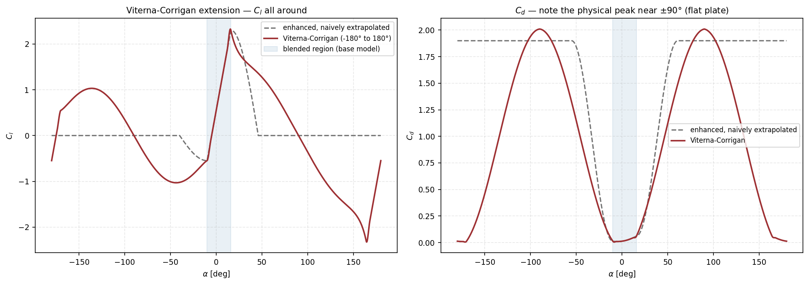
enhanced model at the airfoil's own
$\alpha_{stall}=16^\circ/-10^\circ$, against a naive extrapolation of that model beyond its
validity range. The physical peak of $C_d$ near $\pm90^\circ$, where the section is a flat plate
across the stream, is present in the extension and absent from the naive
extrapolation.Applicability and limitations. Use the extension whenever the blade can reach angles the
polar does not cover, which in practice means any case with reverse flow and any case with deep
stall on the retreating side. It is semi-empirical and must not be read as measured stall or
reverse-flow data. It is least trustworthy exactly where the real flow is strongly
three-dimensional, unsteady, compressible or massively separated. Within the supplied angle range
the tabulated data remain authoritative and the extension does nothing. Without the extension, the
polar is undefined in the reverse-flow region, which is why viterna_full_range in
8.4.1 requires it and validation rejects that combination when it is absent.
The control differs by source. For an analytical source the extension is selected through
the stall model, as the viterna option of 8.2.2. For a tabulated source it is
a switch of its own, described below.
GUI: in the Aerodynamic model block, the checkbox Extrapolate table with Viterna-Corrigan for a tabulated source, and the field Viterna blend width [deg] beside it.
.bemt: in airfoil.bemt, the switch
extend_full_range, default true, and the width
viterna_blend_width_deg, default $4.0$, in degrees. For an analytical source the
extension is selected through stall_model set to "viterna" instead.
CLI: no flags of their own. Set them with
--set airfoil.extend_full_range=true and
--set airfoil.viterna_blend_width_deg=4. Select the analytical Viterna option with
--airfoil-stall-model viterna.
8.2.5 Choosing among the sources and closures
The five choices above combine into a small number of sensible configurations. The table states what each buys and what it costs.
| Configuration | What it needs | What it gives | What it cannot do |
|---|---|---|---|
analytical + linear |
Four scalar coefficients. | A residual that is smooth over the whole angle range, and an ideal linear reference. | Anything near or past stall. Incompatible with dynamic stall. |
analytical + clip |
The same four, plus the two stall angles. | Bounded lift with no unphysical growth past stall. | Post-stall decay. Leaves a derivative corner at each stall angle. |
analytical + enhanced |
The same six numbers. | A $C^1$-continuous polar with qualitatively correct post-stall decay towards flat-plate behavior. | Reach beyond roughly $\pm90^\circ$, so it does not cover reverse flow on its own. |
analytical + viterna |
The same six numbers. | A polar defined over the whole $\pm180^\circ$ circle, which is what the default reverse-flow treatment requires. The default. | Represent any particular section's real post-stall behavior. The high-angle branch is empirical. |
table |
Measured, XFOIL or two-dimensional CFD data, ideally resolved in Reynolds and Mach. | The real shape of the curve, asymmetries and irregularities included, at each condition supplied. | Extrapolate. Outside the supplied angle range the edge value is held constant unless the extension is enabled. |
table + extend_full_range |
The same data. | Measured data where they exist, continued empirically where they do not. | Distinguish, in the result, which part of the disk was answered by data and which by the continuation. |
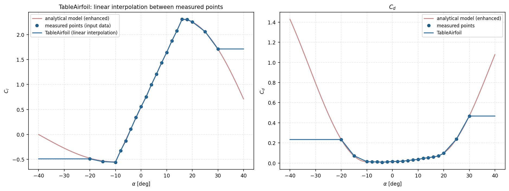
enhanced model that generated them. Interpolation reproduces any shape the
real curve has, including asymmetries and irregularities no closed-form model would produce, at the
cost of requiring the complete table as input and of inheriting whatever noise the measurement
carried.One consequence of a tabulated source is worth stating separately. The lift-curve slope and the zero-lift angle are still estimated from the table, by a finite difference about its midpoint and by the zero crossing of $C_l$, but only because the rotational augmentation correction of 9.4.1 needs those two numbers as inputs. Evaluating $C_l$ and $C_d$ never uses that fitted line: it reads the tabulated data directly.
8.3 Dynamic stall
A polar is measured on a wing held still at a fixed angle. A rotor blade in forward flight is never still. Its angle of attack rises and falls once every revolution. Near stall, the flow does not follow that change fast enough. This block models that lag. It is off by default, and it changes the loads only where the blade actually approaches stall.
8.3.1 The physics of the lag
Separation is not instantaneous. When the angle of attack rises, the boundary layer takes time to detach, and that time is set by how long a particle of air takes to travel the chord, a few multiples of $c/W$. In forward flight the effective angle of attack varies continuously around the azimuth, so a blade can sweep through the stall angle faster than the separation can follow.
Two things follow, and both are visible in a measured rotor. While the angle is rising, the flow is still more attached than a static polar would predict, so the blade produces more lift than the polar says, past the static stall angle. While the angle is falling, separation persists after the angle has come back down, so the blade produces less lift than the polar says. Plotted against angle of attack, the loop does not retrace itself: that open loop is the hysteresis this model reproduces.
Ignoring it under-predicts the peak load on the retreating side and mis-times where the blade recovers. Whether it matters depends entirely on whether the blade reaches stall at all: in a lightly loaded rotor at low advance ratio the correction does nothing.
8.3.2 The mathematics
The model carries one state per blade element, the separation function $f$: the fraction of the chord over which the flow is still attached, $1$ for fully attached and $0$ for fully separated. Lift is written as a blend of two limiting cases, the attached lift line and the lift of a fully separated flat plate:
The static polar gives the value of $f$ for a flow that has time to settle. Inverting the blend at each angle gives that quasi-static value,
clipped to the range $[0,1]$, where $C_{l,st}$ is the static lift of the base polar. In the linear region $C_{l,st}\approx C_{l,att}$ and $f_{st}\to1$; deep in stall $C_{l,st}\ll C_{l,att}$ and $f_{st}\to0$. The separated branch follows from the same inversion, $C_{l,sep}=(C_{l,st}-f_{st}C_{l,att})/(1-f_{st})$.
The lag is then a single first-order relaxation of $f$ towards $f_{st}$:
This is the whole model. The hysteresis is a consequence: while the angle rises, $f$ lags above $f_{st}$, so the blade is more attached than static, and lift is higher. While it falls, $f$ lags below, and lift is lower. Drag follows an analogous expression that depends on both $f$ and $f_{st}$, because drag near the transition grows faster than a straight blend between the attached and separated values would give:
with $C_{d,0}$ the drag at zero angle of attack.
Because the blade repeats the same cycle every revolution, the relaxation can be solved directly in frequency rather than stepped through time. Writing $f_{st}$ around the azimuth as a Fourier series, each harmonic $n$ passes through a first-order filter,
and $f$ around the azimuth follows by transforming back. This is exact for a constant $\tau$ along a radial line, and it costs one transform per radial station, which is why it is the default. The quantity that decides how open the loop becomes is the product $\Omega\tau$: a blade whose chord is a large fraction of its radius reacts slowly in azimuthal terms and shows a wide loop, while a slender blade barely lags at all.

One deliberate limitation is worth stating. zBEMT applies the correction as post-processing on the converged solution. It recomputes the section loads from the final inflow field. It does not feed them back into the momentum balance. Doing it properly would mean solving the inflow and the separation history at the same time, which is a substantially larger problem. The consequence is that dynamic stall changes the reported loads but not the inflow that produced them.
8.3.3 Enable dynamic stall
Definition and applicability. This switch activates the correction for the selected airfoil. It requires a base polar that actually has a stall region: the model works by inverting the static polar into the separation function, and a polar that rises linearly for ever has nothing to invert. With an analytical polar and the linear stall model there is no stall to lag, so the control is disabled and says so.
Configuration. Enable it when the blade reaches stall anywhere on the disk, which in practice means forward flight at appreciable advance ratio, high collective, or a descent. Compare a run with it on against one with it off: if the loads are unchanged, the blade never reached stall and the setting is irrelevant for that condition.
GUI: the Enable dynamic stall checkbox in the Dynamic Stall block.
.bemt: the key use_dynamic_stall in
airfoil.bemt, a switch, default false. It is stored with the airfoil
rather than with the solver settings, so a blade with several radial sections can enable it per
section.
CLI: --dynamic-stall enables it and
--no-dynamic-stall disables it.
8.3.4 Time constant
Definition. The constant $A$ is the only free parameter of the lag model. It sets the time the separation state takes to follow a change in angle of attack,
with $c$ the local chord and $W$ the local relative speed. The grouping $c/W$ is the time a particle of air takes to travel one chord, so $A$ says how many chord-lengths of travel the boundary layer needs before separation has caught up with the angle that provoked it. It is dimensionless.
Physical effect. What matters is not $\tau$ on its own but the product $\Omega\tau$, because the blade is being driven at one cycle per revolution. Writing it out at a station of radius $r$ in hover, where $W\approx\Omega r$,
so the lag in azimuthal terms depends on the chord-to-radius ratio and not on the rotational speed at all. A stubby blade, with a chord that is a large fraction of its radius, lags strongly and shows a wide hysteresis loop. A slender blade barely lags. The same expression explains why the effect is always largest inboard, where $c/r$ is largest.
Increasing $A$ widens the loop: more lift than the static polar predicts while the angle is rising past stall, less while it is falling back, and a larger difference between the two. Reducing $A$ towards zero collapses the loop and returns the static polar exactly, which is the check that the setting is doing what is expected.
Applicability and limitations. The commonly used reference value is $8$, and it comes from fits to oscillating-airfoil measurements rather than from a derivation. It is not a per-airfoil constant to be tuned: treat a change to it as a sensitivity test, and read a result that depends strongly on it as a warning that the case is sitting deep enough in stall for the whole lag model to be near the edge of its usefulness. The value has no effect at all on a case in which the blade never reaches stall, because there is then no separation for the state to lag behind.
Configuration and valid range. Positive, and in practice between about $4$ and $12$. Leave it at $8$ unless a specific reference for the section says otherwise.
GUI: the Constant A field.
.bemt: the key dynamic_stall_A in
airfoil.bemt, default $8.0$.
CLI: no flag of its own. Set it with
--set airfoil.dynamic_stall_A=6.
8.3.5 Fade window
Definition and physical effect. This window switches the correction off smoothly at very high angles of attack. Between the start and end angles the dynamic correction is blended back to the static polar, and beyond the end angle the static values are used unchanged.
Applicability and limitation. The lag model represents the ordinary stall region, where the flow separates and reattaches over a chord. Far past it the blade is in permanent massive separation, and there is no attached state left to lag towards. Extrapolating the correction into that region produces hysteresis that has no physical counterpart, which matters on the retreating side in fast forward flight, where angles well beyond stall do occur.
Configuration. The defaults, fading between $40^\circ$ and $50^\circ$, sit above any angle a sensible rotor operates at and below the region where the model stops meaning anything. The start angle must be below the end angle. The configuration is rejected otherwise.
GUI: the fields Fade start [deg] and Fade end [deg].
.bemt: the keys dynamic_stall_fade_start_deg,
default $40.0$, and dynamic_stall_fade_end_deg, default $50.0$, both in
airfoil.bemt.
CLI: no flags of their own. Set them with
--set airfoil.dynamic_stall_fade_start_deg=35 and
--set airfoil.dynamic_stall_fade_end_deg=45.
8.3.6 Solution method
Definition and options. This setting chooses how the relaxation is solved. The frequency-domain method assumes the blade repeats the same cycle every revolution and solves each harmonic directly, which is what a steady analysis needs and what the GUI uses. Time marching instead integrates the separation state forward through successive revolutions until it stops changing. It costs far more and does not assume the cycle is already periodic.
Configuration and limitation. The frequency-domain method is appropriate for a steady periodic analysis. When marching, enough revolutions must be run for the starting guess to be forgotten, and the answer is averaged over the last few so that what is reported is the settled cycle rather than one arbitrary revolution. The number averaged must not exceed the number run.
GUI: not offered as a choice: the frequency-domain method is always used, and the block shows it as the method in force.
.bemt: in airfoil.bemt,
dynamic_stall_method, either "frequency" (default) or
"time_march"; dynamic_stall_time_march_revolutions, default $8$; and
dynamic_stall_time_march_avg_last, default $3$. The model itself is selected by
dynamic_stall_model, default "oye", which is the model described above and
the only one implemented. dynamic_stall_f_reg, default $0.001$, is the smallest
difference between the attached and separated lift curves that the inversion treats as non-zero. It
keeps the separation function finite where the two curves meet, and only needs raising if a result
looks implausible exactly at the edge of the stall region.
CLI: no flags of their own. Set them with
--set airfoil.dynamic_stall_method=time_march,
--set airfoil.dynamic_stall_time_march_revolutions=12 and
--set config.dynamic_stall_f_reg=0.005.
8.4 Reverse flow
The physics. A blade in forward flight moves through the air at $\Omega r$ from its own rotation, and the aircraft's own speed adds to that on the advancing side and subtracts from it on the retreating side. Far enough inboard on the retreating side the subtraction wins: the section is moving backwards relative to the air, and the air arrives at the trailing edge first. The aerofoil is running in reverse, and its measured polar, taken with the flow arriving at the leading edge, does not describe it.
The mathematics. The tangential velocity of an element is
so the flow reverses wherever $U_T<0$, which is
That inequality traces a circle of diameter $\mu_x R$, tangent to the hub and lying entirely on the retreating side. Its size is fixed by the advance ratio alone: at $\mu_x=0.2$ it covers a fifth of the radius, and at $\mu_x=0.5$ half of it. Two consequences follow. At low advance ratio the region is small and the choice of model barely matters. And if the root cutout is larger than the circle, the reversed region is not integrated at all, so the setting has no effect on the result.

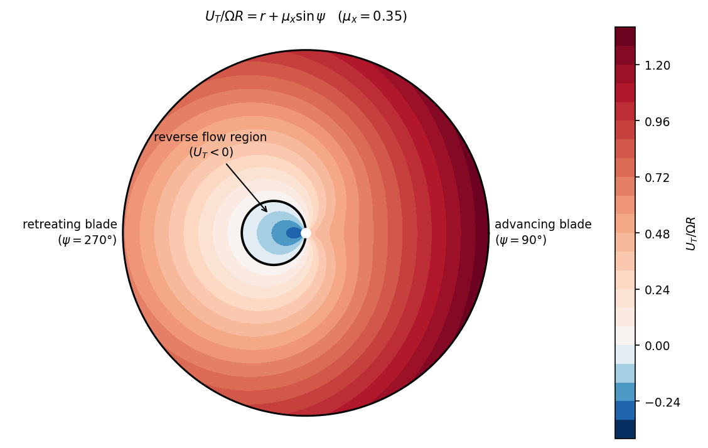
8.4.1 Reverse flow model
Definition and options. This control determines how a section is treated where the flow arrives backwards. The five options differ in how faithful they are and, just as importantly, in whether they are continuous at the boundary. Continuity matters because the solver has to converge across it: a treatment that jumps at $U_T=0$ leaves a sharp feature in the residual, and the elements sitting on the boundary become the ones that fail to converge.
The options.
| Option | Model action | Continuity at $U_T=0$ |
|---|---|---|
simple_flip |
Reverses the sign of the angle of attack in the region and uses $|U_T|$ for the Mach number. The crudest treatment. | No |
flat_plate |
Sets $C_l=0$ and $C_d\approx1.9$, the drag of a flat plate held normal to the flow, ignoring the polar there. Defensible, since a section running backwards has little to do with its forward polar, but the lift jumps to zero at the boundary. | No |
alpha_blending |
Scales the angle of attack by a hyperbolic tangent of the tangential velocity instead of flipping its sign, which softens the jump without removing it. | Partly |
thin_plate_blend |
Blends the polar towards a thin flat plate as a function of the angle of attack, never branching on the sign of $U_T$ at all. | Yes |
viterna_full_range |
Uses a polar already extended over the whole $\pm180^\circ$ range, so the reversed region needs no special treatment: the polar itself covers it. The default. | Yes |
Continuity of the last two options. The inflow angle $\phi=\operatorname{atan2}(U_P,U_T)$ passes smoothly through $U_T=0$, and so does $\alpha=\theta-\phi$. Anything expressed as a function of the angle of attack is therefore automatically continuous across the boundary. Only a treatment that tests the sign of $U_T$ introduces a jump. That is the whole difference between the first three options and the last two.
Thin-plate asymptote. Far outside its design range a section stops behaving like an aerofoil. Once the flow has separated from both edges, lift comes from the pressure difference across an inclined surface rather than from attached circulation, and camber and thickness stop mattering. What remains is the result any flat inclined surface obeys:
Blending towards that is not a convenience: it is the correct asymptote at large angle of attack, and it needs no measured data beyond the range the polar actually covers.
Configuration and limitation. Keep viterna_full_range, the default, whenever the
polar has
been extended over the full range, which is the normal case. Use thin_plate_blend when
it has not: it is continuous, needs no data past stall, and is the option to reach for if the solver
struggles at the reverse boundary. The other three exist for comparison, and
flat_plate is a reasonable crude choice when nothing is known about the section
backwards. Below about $\mu_x=0.3$ all five give nearly the same integrated thrust and torque, so
the choice is worth attention only in fast forward flight.

flat_plate and
simple_flip jump at the edges of the band, alpha_blending smooths the jump
partly, and thin_plate_blend and viterna_full_range stay continuous right
through it.GUI: the Reverse flow model dropdown, in the
Compressibility and Reverse Flow Effects block. viterna_full_range is offered
only when the polar has actually been extended over the full range.
.bemt: the key reverse_flow_model in
config.bemt, default "viterna_full_range". Selecting it without an
extended polar is rejected by validation, because the extension is what makes it meaningful.
CLI: no flag of its own. Set it with
--set config.reverse_flow_model=thin_plate_blend.
8.4.2 Blend factor
Definition and physical effect. This control sets the steepness $k$ of the transition used by
alpha_blending, and does nothing under any other option. With the tangential velocity
written dimensionless as $\xi=U_T/\Omega R$, the angle of attack is scaled by
Physical effect. This value controls the width of the artificial transition band on the disk. The hyperbolic tangent reaches about $96\%$ of its limit at $k\xi=2$, so the transition occupies roughly $|\xi|\lesssim2/k$, a band about $2R/k$ wide in radius where the boundary crosses. A steepness of $5$ therefore smears the change over some forty per cent of the radius, and a steepness of $50$ over four per cent.
Configuration and physical effect. The trade runs in opposite directions at the two ends. A large value approaches the hard sign flip: the aerodynamics is right almost everywhere, but the sharp feature returns to the residual and the elements at the boundary are the ones that stop converging. A small value converges easily and pays for it by applying a reduced angle of attack across a wide band where the flow is in fact ordinary forward flow, understating the load there. The default of $5$ sits deliberately on the forgiving side. If the answer visibly depends on this number, the reverse region is large enough that a continuous treatment is the better response than tuning the steepness.
GUI: the Reverse flow blend factor field, shown only when
alpha_blending is selected.
.bemt: the key reverse_flow_blend_factor in
config.bemt, default $5.0$.
CLI: no flag of its own. Set it with
--set config.reverse_flow_blend_factor=20.
8.4.3 Thin-plate transition
Definition and configuration. These two angles place the changeover used by
thin_plate_blend, and do nothing under any other option. The center is the angle of
attack at which the section is treated as half aerofoil and half flat plate. The width is how many
degrees the changeover takes.
Physical interpretation. Together these angles state where the real polar stops being trustworthy. Moving the center outward keeps the measured polar in charge further into the stalled range, which is right when the data genuinely extend that far and wrong when they do not, because beyond the measured range the polar merely holds its last value. Narrowing the width sharpens the changeover and, taken far enough, reintroduces the sharp feature the method exists to avoid.
Configuration and valid range. The defaults, a center of $35^\circ$ and a width of $20^\circ$, hand over across the range where most polars stop being reliable. Because the weighting depends only on the angle of attack, it applies wherever large angles occur, including on the retreating side outside the reverse circle, so a center set too low inflates drag over a genuinely attached part of the disk.
GUI: the fields thin_plate_blend_center_deg and
thin_plate_blend_width_deg, shown only when thin_plate_blend is selected.
.bemt: the keys thin_plate_blend_center_deg,
default $35.0$, and thin_plate_blend_width_deg, default $20.0$, in
config.bemt.
CLI: no flags of their own. Set them with
--set config.thin_plate_blend_center_deg=40 and
--set config.thin_plate_blend_width_deg=15.
8.4.4 Masking the region in plots
Definition and display effect. This control blanks the reverse-flow region in disk maps, so that a load computed by whichever model is selected is not read as ordinary forward-flow data. It is a display setting and changes nothing else: the same region is identified by the same $U_T<0$ test used above, and the values behind the mask still enter the integration, the coefficients and the exported table. Masking therefore cannot change thrust, torque or power.
Configuration. Leave it on while reading maps, because the masked area is exactly where confidence in the model is lowest. Turn it off to inspect what the chosen model is actually doing there, which is the direct way to compare two of them.
GUI: the mask reverse flow toggle above the disk map in the Results tab.
.bemt: the key mask_reverse_flow_plots in
config.bemt, a switch, default true.
CLI: no flag of its own. Set it with
--set config.mask_reverse_flow_plots=false.
8.5 Compressibility
Physical definition. An aerofoil works by setting up a pressure field around itself, and that field is communicated through the air at the speed of sound. While the section moves slowly compared with that speed, the air has time to adjust and behaves as though it were incompressible. As the speed rises, the adjustment lags, the pressure disturbances crowd together, and the same geometric angle of attack produces a larger pressure difference. Both lift and drag rise for the same angle.
On a rotor this matters because the blade speed is far from uniform. The tip moves at $\Omega R$ while the root barely moves at all, and in forward flight the advancing tip sees roughly $\Omega R+V_x$ against the retreating tip's $\Omega R-V_x$. Compressibility is therefore felt very unevenly across the disk.
The mathematics. The correction is the Prandtl-Glauert transformation, which relates a linearized subsonic compressible flow to an equivalent incompressible one. Both coefficients are divided by the same factor,
with $W$ the relative velocity at the element and $a$ the speed of sound set in the Config/Engine tab. The factor is $1.005$ at $M=0.1$, $1.048$ at $M=0.3$, $1.25$ at $M=0.6$ and $1.67$ at $M=0.8$: negligible below about $M=0.3$, and steep beyond $M=0.6$. It diverges formally as $M\to1$, where the linearized assumption stops describing the flow at all, because a shock forms and wave drag appears and neither is contained in this expression. The factor is therefore capped at its $M=0.9$ value, $1/\sqrt{1-0.9^2}\approx2.29$, rather than allowed to run away. Nothing below $M=0.9$ is altered by that cap. Above it, the coefficients reported are capped values and not a transonic prediction.
Physical effect. Because the same factor multiplies both coefficients, the lift-to-drag ratio of a section is unchanged, so the correction does not by itself move where the blade is efficient. What it changes is the magnitude of the load, and it changes it unevenly. In forward flight it steepens the advancing/retreating asymmetry that already exists, adding load on the advancing side and increasing the rolling moment the disk must be trimmed against. In hover, where the Mach number depends only on radius, the effect is a uniform shift of loading towards the tip.
Configuration and applicability. Enable it when the tip Mach number is high enough to matter, which for most rotors means a tip speed above roughly $0.6a$, and always for a propeller, whose tip speeds are higher. Leave it off when the polar is already resolved in Mach, because the table then carries the effect and applying the correction on top would count it twice. The speed of sound it uses is set in the Config/Engine tab and should match the altitude and temperature being modeled: a cold day raises the tip Mach number of an otherwise unchanged rotor.
When the polar already carries Mach. A tabulated polar can be swept in Mach, with one curve per Mach number. The curve selected for each condition is then already compressible, measured or computed at that Mach, and applying Prandtl-Glauert on top of it counts the same effect twice. The three interfaces treat that situation differently, and the difference is deliberate.
The GUI freezes the field. As soon as the airfoil source is
table or neuralfoil and the loaded polar carries more than one Mach
value, the checkbox is cleared and greyed out, and its tooltip says how many distinct Mach slices
were found. Because it is the source in use that decides, switching back to an analytical airfoil
releases the field and restores whatever the setting was before it was frozen: the choice is
suspended, not discarded.
The .bemt files and the CLI warn but do
not block. A project whose config.bemt has use_compressibility: true
alongside a Mach-swept table loads, validates with a warning that names the double counting, and
runs. It is a warning rather than an error because the combination is occasionally wanted
(a sensitivity study that deliberately over-applies the correction), and because the check
depends on the contents of the table rather than on a setting alone. If you want the same
protection the GUI gives, read the warning: nothing else will stop the
run.
GUI: the Compressibility checkbox in the Compressibility and Reverse Flow Effects block. Frozen when the polar in use is swept in Mach, as described above.
.bemt: the key use_compressibility in
config.bemt, a switch, default true.
CLI: no flag of its own. Set it with
--set config.use_compressibility=false.
8.6 Data import / tabulated polar
A tabulated polar replaces an analytical relation with direct linear interpolation through the supplied points $(\alpha_i,C_{l,i},C_{d,i})$. It is the appropriate source for wind-tunnel, CFD, or externally generated coefficients. The table values, including any asymmetry or post-stall behavior, are the aerodynamic data used by the blade elements. Analytical lift, drag and stall parameters do not supplement missing table data.
Each polar slice may be labeled by radial position $r/R$, Reynolds number, and Mach number. The solver interpolates between radial slices. It selects the nearest available Reynolds and Mach slices rather than interpolating between them, so the supplied condition grid must cover the operating envelope with adequate resolution. Outside the supplied angle range, the table must be extended with the configured full-range model if the blade can reach those angles.
GUI: the Data import / tabulated polar block, with the Import CSV and Export CSV buttons and, below them, the list of conditions the loaded file turned out to contain. Ticking a condition in that list overlays its curve on the preview of 8.9, which is how several Reynolds numbers or several Mach numbers are compared against each other.
.bemt: the key table_slices in
airfoil.bemt, a list in which each entry is one polar slice: its angle sweep and the
paired lift and drag coefficients, together with the radial position, the Reynolds number and the
Mach number that slice was measured or computed at, when those were supplied. An entry whose
condition labels are absent is a single polar used at every station.
CLI: --airfoil-table CSV imports a file through
the same reader the window uses and sets the source to table at the same time.
8.6.1 The CSV format the importer reads
The file is a plain comma-separated table with one header row and one row per angle-of-attack sample. It contains no block separators or repeated headers: optional condition columns identify the slice to which each row belongs.
One row is one angle of attack. The three required columns are the angle in degrees and the two coefficients at that angle:
alpha_deg,Cl,Cd -5,-0.32,0.0121 0,0.21,0.0098 5,0.74,0.0115
Column names are matched case-insensitively, against a list of accepted spellings , so a file exported by another tool usually imports unchanged:
| Meaning | Required? | Accepted header spellings |
|---|---|---|
| Angle of attack, degrees | required | alpha_deg, alpha, aoa, aoa_deg |
| Lift coefficient | required | cl, Cl, CL |
| Drag coefficient | required | cd, Cd, CD |
| Radial station, $r/R$ | optional | r_norm, r/R, rR, radial_station |
| Reynolds number | optional | reynolds, Re, re |
| Mach number | optional | mach, Mach, M |
Any column the list does not recognize is ignored, so a file carrying $C_m$, transition location or a comment column costs nothing. A missing required column is the one rejection at this stage. The importer raises an error. It names the column it could not find and lists the headers it did see, instead of guessing by position. Without this, a file whose first column is $C_l$ would import as an angle sweep, with no warning. A header no alias covers has to be renamed in the file before importing.
Multi-dimensional polar specification. Multi-dimensional polar datasets specify optional conditioning axes (spanwise station $r/R$, Reynolds number $Re$, Mach number $M$) by appending columns with corresponding scalar values repeated across each slice:
alpha_deg,Cl,Cd,reynolds,mach -5,-0.30,0.0140,200000,0.2 0, 0.19,0.0115,200000,0.2 -5,-0.32,0.0121,600000,0.2 0, 0.21,0.0098,600000,0.2
This sample defines two operating slices ($Re = 2\times 10^5$ and $Re = 6\times 10^5$ at $M = 0.2$), each containing an angle-of-attack sweep. Slices are grouped dynamically by unique tuples of $(r/R, Re, M)$ without requiring sorted or contiguous rows. A single CSV may span multiple radial stations, Reynolds numbers, and Mach numbers. The solver interpolates across all supplied dimensions during execution. Omitting parametric columns defines a single global static polar.
Delimiter and decimal are standard CSV (comma-delimited, dot decimal separator, single header row). Non-standard exports (such as semicolon-separated or comma-decimal European locale formats) must be converted before import. Blank entries in optional columns represent unconditioned axes.
Import diagnostics and header validation. After it reads the file, the window reports the file path, the number of
polar slices read, and the extra axes it detected (for example, Extra axes
detected: reynolds, mach or none (single polar)). This summary
confirms that the columns were parsed correctly. zBEMT ignores a column header it does
not recognize (for example, Reynolds_number instead of
reynolds), which produces a single polar with no stratification. Using Export
CSV… generates a properly formatted template with canonical column headers
(alpha_deg, Cl, Cd, r_norm, reynolds, mach).
Angles are expressed in degrees and aerodynamic coefficients are non-dimensional. Angle range is bounded by the minimum and maximum $\alpha$ present in the data table.
8.7 Profile 2D geometry
This block holds the two-dimensional contour of the section: the shape itself, not the blade planform. It is required only when a polar is to be generated from the shape, which is the external solver of 8.8. With an analytical or an already tabulated polar it is optional and purely illustrative, feeding the profile preview and nothing else.
The contour never enters the blade element equations. What the solver reads is the polar, and the shape reaches the solution only through the coefficients a generator produces from it. Once those coefficients exist, editing the contour changes nothing until the generator is run again. The sources below are four ways of arriving at the same thing, a list of normalized coordinate pairs.
| Source | Parameters |
|---|---|
naca4 / naca5 |
4 or 5-digit NACA code (for example, 2412, 23012) |
cst |
CST coefficients (Class-Shape Transformation) for upper/lower surface, separated by comma. Not offered in the combo: kept for projects that already use it, in which case the option reappears for that project alone rather than showing a wrong source over an existing contour |
bezier |
Bézier control points, one x,y per line. Same status as cst above
|
imported |
Coordinate file loaded from disk in Selig layout; Lednicer is rejected with an explanation (Section 8.7.2) |
8.7.1 Choosing the shape
The physics. The contour never enters the blade element equations. What the solver reads is the polar, and the shape matters only because a polar can be generated from it. A profile is therefore needed when a polar is to be produced from the section itself. It is optional, and purely illustrative, when the polar is analytical or already tabulated.
What can be entered. Four ways to obtain the same thing, a set of contour coordinates.
A NACA code is the quickest, and covers most conventional sections. The four-digit family
encodes the maximum camber, its position and the thickness, so 2412 is a section with
two per cent camber at forty per cent of the chord and twelve per cent thickness. The five-digit
family encodes a different camber line. The code is a string, not a number, because the leading
zeros carry meaning: 0012 is the symmetric twelve-per-cent section.
CST coefficients describe the surfaces as a class function multiplied by a shape function, which is the usual parametrisation for optimization because a small set of numbers moves the surface smoothly. Upper and lower surfaces are given as separate lists.
Bézier control points describe the surfaces as control polygons instead, one point per line. It is the more direct way to draw a shape by hand.
An imported file takes coordinates measured or downloaded elsewhere, in the layout described below.
Configuration. Use a NACA code unless there is a specific section to reproduce. CST and Bézier are for shapes being designed rather than looked up, and both are stored exactly as typed, so a malformed list is reported when the geometry is generated rather than silently accepted. The number of points controls how finely the contour is sampled. The default of $200$ resolves the leading edge adequately for polar generation.
GUI: the Profile 2D geometry block: a Source dropdown, the fields belonging to the chosen source, and the Generate geometry and Import buttons.
.bemt: inside geometry in
airfoil.bemt: airfoil.geometry.source, one of "naca4"
(default),
"naca5", "cst", "bezier" or "imported".
This key differs from the polar-source key of 8.2.1, which selects where the coefficients come from
rather than what the contour is. naca_code, a string, default "0012"; cst_upper and
cst_lower, lists of coefficients. bezier_control_points, a list of
coordinate pairs. imported_path for a file. And n_points, default
$200$.
CLI: --airfoil-geometry SPEC when generating a
polar. Individual fields are set with --set, for example
--set airfoil.geometry.naca_code=2412.
8.7.2 The coordinate file the importer reads
One point per line, two numbers, $x$ then $y$, both normalized by the chord, separated by space, tab or comma. That is the entire contract:
NACA 0012 1.000000 0.001300 0.500000 0.065000 0.000000 0.000000 0.500000 -0.035000 1.000000 -0.001300
Coordinate parsing rules. Non-numeric lines (profile designations, headers, comments,
and blank lines) are automatically ignored during ingestion. Supported file extensions include
.dat, .txt, and .csv. Lines containing three or more
numerical entries (such as surface pressure coefficient $C_p$ distributions) are omitted by the 2D
coordinate parser.
Selig format ingestion. Standard Selig-formatted coordinate loops (ordered continuously from trailing edge → upper surface → leading edge → lower surface → trailing edge) are ingested directly without reordering or interpolation.
Lednicer format handling. Coordinate files formatted in Lednicer style (which open with header point counts and separate upper/lower coordinate tables) are rejected with a descriptive validation error. To use Lednicer files, merge the curves into a continuous closed contour or use standard Selig-formatted coordinates.
Nothing else is validated: the contour is not required to be closed, to start at the trailing edge, or to have a particular point count. What it is required to be is normalized ($x$ spanning $0$ to $1$), because the chord is the length scale everything downstream assumes, and a contour in millimetres would otherwise reach NeuralFoil as an airfoil of a thousand chords' extent.
The preset list. A dropdown offers the NACA codes commonly used on rotor and propeller blades, the symmetric four-digit family and the five-digit family among them, each with a note on where it is normally found. Choosing one and pressing Use preset fills the code field, which can then be edited like any other.
GUI: the Profile 2D geometry block: the Source dropdown, the fields belonging to the chosen source, and the Generate geometry and Import buttons.
.bemt: the whole contour is stored under
geometry in airfoil.bemt, holding the source and its parameters together
with the resulting coordinate lists, so a saved project carries the contour itself and does not
need to regenerate it on opening.
CLI: --airfoil-geometry SPEC, where the
specification is a four- or five-digit NACA code such as naca2412 or
naca23012. It is used only together with --gen-neuralfoil, described in
8.8. There is no flag for a CST, Bézier or imported contour on its own. Those are set in the window
or written into the project file.
8.8 External solver — NeuralFoil
NeuralFoil estimates a two-dimensional airfoil polar from profile coordinates, Reynolds number, Mach number and an angle-of-attack sweep. It is a neural-network surrogate, not a flow solver and not a replacement for validated measurements in a certification or high-consequence analysis. Its output is a set of $C_l$ and $C_d$ samples that the blade-element method uses by the same tabulated interpolation as an imported polar.
The generated coefficients are applicable only within the profile, Reynolds, Mach and angle range requested. They must be reviewed against available data when separation, transition, compressibility, roughness, Reynolds sensitivity or deep stall materially affects the design. The optional NeuralFoil package is required. The GUI disables this block and states the missing dependency when it is unavailable.
8.8.1 Run the solver
Prerequisite: 2D geometry already generated/imported (Section 8.7). The "Run NeuralFoil" button generates a polar for the currently selected section (Section 8.1.3). With multiple sections, repeat the run per section. The sweep covers Reynolds and Mach lists and an $\alpha$ range.
Configuration and applicability. Give the Reynolds and Mach numbers the blade actually works at, which follow from the tip speed and the radial position of the section rather than from a round number. A wider angle range costs little to generate and avoids extrapolation later. A step of half a degree resolves the stall knee adequately.
GUI: the fields Reynolds list, Mach list, alpha min [deg], alpha max [deg] and step [deg], with the Run NeuralFoil button beside them.
.bemt: in airfoil.bemt, the sweep is stored as
external_reynolds_list and external_mach_list, both lists of numbers, and
the angle range as external_alpha_min_deg (default $-20$),
external_alpha_max_deg (default $20$) and external_alpha_step_deg
(default $0.5$). external_engine records which generator produced the table. It is
"none" by default and "neuralfoil" once the solver has been run. It is a
record of provenance: the engine reads the resulting table, not the generator.
CLI:
--gen-neuralfoil --airfoil-geometry SPEC --reynolds R1,R2,... --mach M1,M2,...
--alpha-range MIN:MAX:STEP. This combination runs in standalone mode (does not run BEMT, only generates the
table and exits).
8.8.2 Where the generated data goes
Nothing is written to disk automatically. A generated polar follows the same path as any other edit made in the window: it enters the project held in memory at once, and reaches the project folder only when the project is saved. The sequence is:
- Generation. One polar is produced for each combination of the Reynolds and Mach values requested, over the angle sweep given. The result exists only in the session.
- Preview and project, in one step. The generated polars join the same list a manual CSV
import fills, described in 8.6. The Source selector moves itself to
neuralfoil; the preview of 8.9 redraws on the new curves. And the same polars become the polar table of the section currently selected. There is no separate confirmation to press, so the generated polar is usable from Run Case immediately. - How it is stored. The generated mode is not a separate polar source in the project
file. It is written as
source: "table"together with the resultingtable_slices, exactly as an imported polar would be. The file records the numbers, not the fact that a generator produced them, which is why a project shared with someone else does not need the generator installed in order to be run. - Until you save, it is still only in memory. The tab title takes the unsaved marker and the table reaches disk on Save. Closing the window without saving discards it, after the usual prompt. Export generated table writes it to a CSV independently of the project, which is how a run is kept without committing it to this project.
8.8.3 Export without committing the project to disk
Definition. This writes the polars just generated straight to a CSV file, without going through the project at all. It is the way to compare several profiles before deciding which one to keep, and the way to reuse a generated table in another project through the manual import of 8.6.
The format written. The file is the same comma-separated format the importer reads,
described in 8.6.1: one header line, one row per angle of attack, and the columns
alpha_deg, Cl, Cd, r_norm,
reynolds and mach. Exporting and re-importing is therefore exact.
GUI: the Export generated table button, beside Run NeuralFoil. It is available only once a polar has been generated in this session.
.bemt: none. The exported file is a loose CSV and is not part of the project. Nothing in the project folder records that it was written.
CLI: --export-table PATH, used together with
--gen-neuralfoil, writes the same file to PATH. Without it, the generated
table is written into the project itself, with no intermediate loose file.
8.9 Preview of the polar and the profile
What it shows. Four panels on the right of the tab, always visible, redrawn shortly after every edit to the form. They draw the polar the project currently holds in memory, so what is on screen is what a run started now would use. The four are the lift curve $C_l(\alpha)$, the drag curve $C_d(\alpha)$, the drag polar $C_d(C_l)$ and the profile contour.
How to read them. $C_l(\alpha)$ shows where the linear region ends and what the chosen stall model does past it. $C_d(\alpha)$ shows the drag bucket and how steeply drag climbs into stall. $C_d(C_l)$ is the same information plotted the way a designer uses it: the minimum of that curve is the lift coefficient at which the section is most efficient, and the width of the bucket around it says how much margin there is either side. The profile panel draws the contour of 8.7, and is empty when no contour has been generated or imported.
Each panel carries the standard plot controls: zoom, pan, and an axis dialog for setting limits or switching an axis between linear and logarithmic.
The Mach comparison. The field Mach for comparison in preview overlays the lift and drag curves at several Mach numbers on the same axes, so the effect of compressibility on the section can be seen at a glance. It is a drawing aid only: it does not reproduce the correction the solver applies during a run, which is described in 8.5, and changing it alters no result.
The checks panel. Below the preview, a panel lists the findings of the validation rules of Section 13.2 that concern the airfoil: combinations that are mutually exclusive, redundant, or physically inconsistent. It re-runs after every edit, so the verdict on screen is never stale.
GUI: the preview panels on the right of the Airfoil tab, with the Preview options block below them holding the Mach comparison field.
.bemt: none. The preview is a view of the airfoil definition and stores nothing of its own.
CLI: none. Preview is a window feature. From the command line the equivalent is to generate a report, which embeds the polar curves alongside the results.
8.10 Navigate (r/R, Reynolds, Mach)
Definition. Three controls that choose which slice of a tabulated polar the preview of 8.9 draws. They apply when the project holds more than one tabulated condition, as described in 8.6, or more than one radial section, as described in 8.1, and are hidden when there is only one curve to show.
It selects a view, never a computation. A tabulated polar is a family $C_\ell,\,C_d = f(\alpha;\,Re,\,M,\,r/R)$, and a plot can only show one slice of it at a time. This navigator picks that slice. It has no effect on any run: when the case solves, the slice is chosen per radial station from that station's own conditions, by the same nearest-match rule the preview uses. What you see here is therefore faithful to what the engine will consume, but moving the navigator changes only the picture.
Why the two aerodynamic axes exist. Reynolds number sets the state of the boundary layer. Below roughly $Re \sim 10^5$ the layer stays laminar over much of the chord and separates without reattaching, so minimum drag can double and maximum lift collapse relative to the same profile at $10^6$; stepping the Reynolds control down the tabulated list and watching the drag bucket fill in and $C_{\ell,max}$ fall is the fastest check that the table actually resolves the root. Mach number sets compressibility. In the linearized subsonic range the lift slope grows as
which is a modest 7 % at $M = 0.35$ but 25 % at $M = 0.6$ and unbounded as $M \to 1$; the correction is capped at $M = 0.9$ because it is a linearized theory and means nothing beyond that (Section 8.5). Past the critical Mach number a shock forms on the upper surface, drag rises sharply, and the real polar departs from anything the linearized correction predicts. Only tabulated data at that Mach can show it.
The practical use, and the trap. Walk the axes to the extremes the case will actually produce (root Reynolds and tip Mach) and confirm a tabulated slice exists near each. Selection is nearest-neighbor, not interpolation, and nothing warns when the request falls outside the tabulated range: a table that stops at $M = 0.4$ quietly supplies its $M = 0.4$ data to a tip running at $0.75$, and the run converges cleanly to an answer with no compressible drag rise in it at all. A polar family that does not bracket the operating envelope is the most common single source of confidently wrong results.
GUI: the Navigate controls above the preview panels: a selector for the radial section, one for the Reynolds number and one for the Mach number, each listing only the values the loaded polar actually contains.
.bemt: none. The navigator is a viewing state and is not saved with the project. Reopening a project starts on the first available slice.
CLI: none, for the same reason. The conditions the slices carry are stored with the polar itself, described in 8.6.
9. Config/Engine
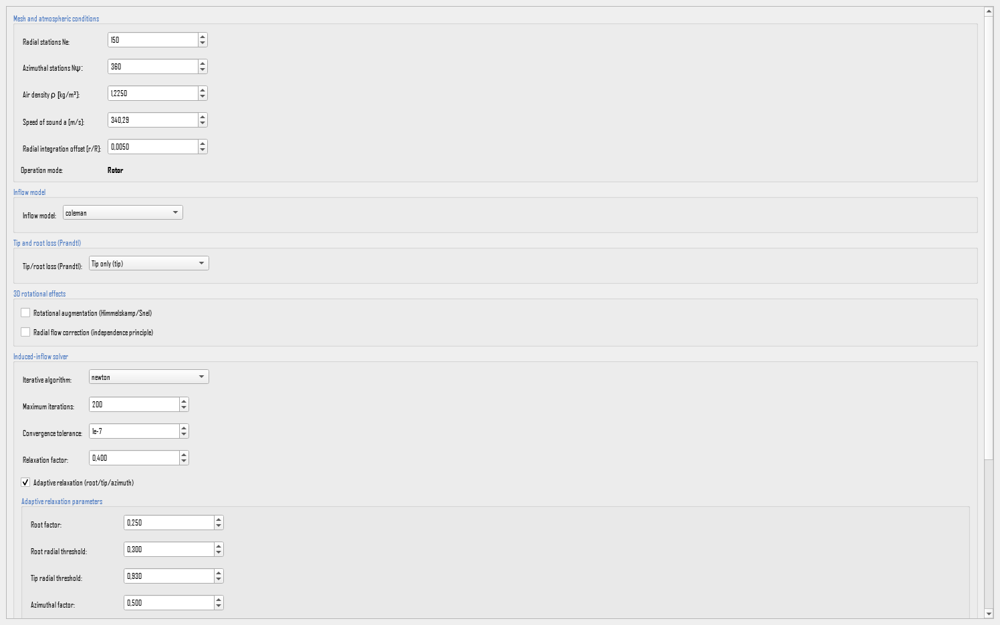
Ne→ 9.1.1Npsi→ 9.1.1rho→ 9.1.2a_sound→ 9.1.3integration_offset→ 9.1.4inflow_field_model→ 9.2prandtl_loss_mode→ 9.3radial_flow_max_skew_deg→ 9.4.2use_rotational_augmentation→ 9.4.1use_radial_flow_correction→ 9.4.2pitt_peters_states→ 9.2.1pitt_peters_outer_iter→ 9.2.1pitt_peters_relax→ 9.2.1pitt_peters_tol→ 9.2.1relax_root_factor→ 9.5.3relax_root_threshold→ 9.5.3relax_tip_threshold→ 9.5.3relax_azimuth_factor→ 9.5.3relax_azimuth_threshold→ 9.5.3solver→ 9.5.1max_iter→ 9.5.2tol→ 9.5.2relax→ 9.5.3relax_schedule→ 9.5.3early_exit_fraction→ 9.5.4stagnation_patience→ 9.5.4stagnation_min_frac→ 9.5.4
Editorial scope. Each field section below states the numerical quantity, equation, physical effect, applicability, limitations, options, and separate GUI, .bemt, and CLI configuration.
The Config/Engine tab holds everything that decides how the problem is solved: how finely the disk is sampled, what the air is like, which inflow model and which corrections apply, and which solver runs. Three settings that might be expected here are elsewhere, because they belong to what is being modeled rather than to how it is solved: dynamic stall, reverse flow and compressibility are set in the Airfoil tab, and the rotor or propeller mode in the Project tab, which this tab shows only as a read-only label.
Editing a field changes the project held in memory and writes nothing to disk. Save commits the whole project and Restore discards the edits made since the last save. Validation runs again after every edit, and also whenever the geometry, the airfoil or the project itself changes, with the result shown in the panel above the buttons. There is no validate button because there is never a stale verdict waiting to be refreshed.
9.1 Mesh and atmosphere
Two unrelated groups of settings share this block on screen. The mesh decides how finely the disk is sampled. The air properties describe what it turns in. Two further settings, the kinematic viscosity and the convergence history, have no control on the tab and are documented at the end of the section because they belong to the same group in the project file.
9.1.1 Mesh resolution
The physics. The blade is not solved as a continuous object. It is divided into a grid of radial stations along the span and azimuthal stations around the disk, and the equations are solved at every point of that grid. The radial count decides how well the load distribution along the blade is resolved, which matters most near the tip where it changes fastest. The azimuthal count decides how well the once-per-revolution variation in forward flight is resolved, and it does nothing at all in hover, where every azimuth gives the same answer.
The mathematics. The integrated loads are sums over that grid,
so the cost of a solution grows with the product $N_e\times N_\psi$, while the accuracy improves only until the grid resolves the features that are actually there. Doubling both quadruples the work.
Configuration and convergence check. The defaults, $120$ radial and $180$ azimuthal stations, resolve a conventional rotor well. Reduce them while exploring, and raise them for the final result or when the loading changes sharply, as it does at high advance ratio where the reverse-flow boundary sweeps across the disk. The right check is not a rule of thumb: run the case twice with the resolution doubled and see whether the integrated coefficients move.
Valid range. Both are integers of at least $1$, the azimuthal count up to $720$. A purely axisymmetric case is hover, or any climb or descent with no in-plane component. In such a case, every azimuthal station returns the same answer. Therefore, $N_\psi=1$ solves the problem exactly. Raising it costs time and changes nothing. In forward flight the azimuthal count is what resolves the once-per-revolution variation, and it must be raised accordingly. With dynamic stall active it also sets how many harmonics of the separation cycle can be represented, so it needs to be at least twice the highest harmonic that matters.
GUI: the fields Ne (radial stations) and Npsi (azimuthal stations) in the mesh block.
.bemt: the keys Ne, default $120$, and
Npsi, default $180$, in config.bemt.
CLI: --set config.Ne=90 and
--set config.Npsi=144.
9.1.2 Air density
The physics. Density is the mass of air the blade works on, and it multiplies every force and moment the rotor produces. It is the reason a rotor that hovers comfortably at sea level may not hover at altitude on a hot day: the blade is unchanged, but there is less air to push.
The mathematics. It appears linearly in every elemental load,
and again in the normalization of the coefficients, $C_T=T/(\rho\pi R^{2}(\Omega R)^{2})$. The coefficients are therefore almost insensitive to it, while the dimensional thrust and power scale with it directly.
Configuration and units. Use the value for the altitude and temperature being studied, in kg/m³. The default $1.225$ is the standard sea-level value. Comparing a rotor at two altitudes means changing this field and nothing else.
GUI: the field rho [kg/m³].
.bemt: the key rho in config.bemt,
default $1.225$.
CLI: --set config.rho=1.06.
9.1.3 Speed of sound
The physics. The speed of sound converts a local velocity into a local Mach number, and that is its only role. It therefore changes nothing unless the compressibility correction is active or the polar resolves Mach. Because it falls with temperature, a cold day raises the tip Mach number of an otherwise unchanged rotor, which is how a rotor can meet drag rise in winter that it never meets in summer.
The mathematics. The local Mach number of each element is
with $W$ the relative velocity at that element, the largest value occurring at the advancing tip.
Configuration and units. Enter the value in m/s for the temperature being studied. The default $340.294$ corresponds to standard sea-level conditions. It should be changed together with the density whenever an altitude is being modeled, since both follow from the same atmosphere.
GUI: the field a_sound [m/s].
.bemt: the key a_sound in
config.bemt, default $340.294$.
CLI: --set config.a_sound=330.0.
9.1.4 Integration offset
The physics. The blade element equations misbehave at the two ends of the span. At the axis the tangential velocity goes to zero, so the inflow angle approaches ninety degrees. At the tip the Prandtl loss factor goes to zero. Both are genuine limits of the theory rather than numerical accidents, and a mesh node placed exactly on either of them produces a division by zero. The offset moves the outermost nodes a small distance inward from those limits.
The mathematics. The grid spans
instead of reaching the endpoints, with $\epsilon$ the offset. Because the excluded slivers are narrow and carry little load, the effect on the integrated result is far smaller than the effect of the singularity it avoids.
Configuration and valid range. Leave it at the default of $0.005$ unless a solution fails at the very first or last station. It must stay small compared with the spacing between stations. A large offset quietly shortens the blade.
GUI: the field integration_offset in the mesh block.
.bemt: the key integration_offset in
config.bemt, default $0.005$.
CLI: --set config.integration_offset=0.002.
9.1.5 Kinematic viscosity
The physics. Viscosity converts a local velocity and a local chord into a Reynolds number, which selects where a tabulated polar is read. Like the speed of sound, it does nothing on its own: with an analytical polar, which has no Reynolds dependence, the value is unused.
The mathematics. The Reynolds number of an element is
so it falls towards the root, where both the relative velocity and often the chord are smaller. That is why the inboard sections of a small rotor can be working at a Reynolds number where the polar behaves quite differently from the tip.
Configuration and units. Enter the value in m²/s. The default $1.46\times10^{-5}$ is the standard sea-level value for air, and it changes with altitude and temperature in the same way as the density and the speed of sound.
GUI: not shown as a field. It is set from the project file or the command line.
.bemt: the key nu_air in
config.bemt, default $1.46\times10^{-5}$.
CLI: --set config.nu_air=1.6e-5.
9.1.6 Convergence history
Definition. During a solve, the model can record the residual at every iteration. That record is what the convergence plot in the Results tab draws, and it is how a case that converged slowly is told apart from one that converged immediately. Keeping it costs memory proportional to the number of iterations and conditions, which only matters for a very large batch.
Configuration and storage trade-off. Leave it on. Turn it off only when a batch is large enough for the stored history to be a burden, accepting that the convergence plots are then unavailable for that run.
GUI: not shown as a field. The history is always collected for runs started from the GUI, because the Results tab draws it.
.bemt: the key collect_history in
config.bemt, a switch, default true.
CLI: --set config.collect_history=false.
9.2 Inflow model
The physics. The rotor pushes air through its own disk, and that induced velocity changes the angle at which every blade section meets the flow. In hover the induced velocity is nearly the same all round the disk, so a single number describes it. In forward flight it is not. The wake tilts backwards, so the front of the disk works in relatively undisturbed air while the rear works in air the front has already accelerated. The induced velocity becomes a field varying with both radius and azimuth, and this setting chooses how that field is represented.
The mathematics. Three of the four families write the inflow as a mean value with a first harmonic superimposed,
and differ only in what they use for the weights. The $\cos\psi$ term is the front-to-back variation, and the $\sin\psi$ term the left-to-right one. In all three the mean $\lambda_{i,0}$ has already been found by the annular momentum balance, and the harmonic is then applied to it in closed form, which is why they cost almost nothing.
The choice acts on how the inflow field is built, before the element loads are integrated. It does not change the airfoil polar, the blade geometry, or the definitions of $C_T$ and $C_Q$.
Glauert (1926) is the original ring momentum theory with a first-harmonic tilt correction and no separate decomposition. Coleman (1945) adds a single longitudinal harmonic,
capturing the front-to-back asymmetry of the tilted wake but nothing side to side. Drees (1949) refines that coefficient and adds the lateral term:
The lateral weight depends only on the advance ratio, so it is nearly uniform across the disk. Both sets of coefficients are empirical, fitted to measured and vortex-wake data rather than derived within the method, and neither exposes anything for the user to adjust: the weights follow from the advance ratio and the inflow already solved.
Pitt-Peters takes a different route. Instead of correcting a ring solution, it treats the disk as a whole and carries three states. These are a uniform component and two first-harmonic components. A linearized unsteady actuator-disk model governs them. The steady form iterates those states to equilibrium for one flight condition. The result is not a fitted harmonic but a solution of a disk-level model, and it produces a visibly different pattern.
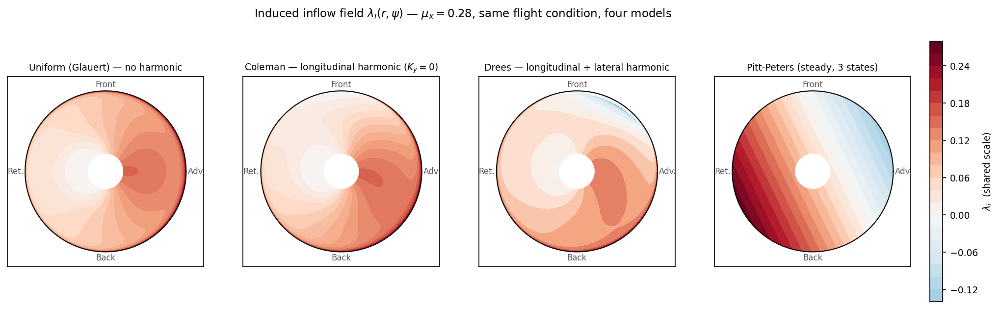
glauert_local is symmetric about the axis, so $\lambda_i$ varies
only with radius. coleman_local shows the front-to-back asymmetry with no perceptible
lateral one. drees_local shows a stronger front-to-back asymmetry and a visible lateral
one. pitt_peters_steady gives a qualitatively different pattern, with a displaced lobe
and a stronger concentration of negative inflow.What can be entered. Four families are available.
| Option | Physical representation | Computational cost |
|---|---|---|
glauert_local |
The classical first-harmonic tilt correction, with no separate longitudinal and lateral weights. The textbook baseline. | Negligible |
coleman_local |
The longitudinal harmonic in closed form: the front-to-back variation, which dominates in forward flight. The default. | Negligible |
drees_local |
Longitudinal and lateral harmonics together, so the side-to-side variation is represented as well. | Negligible |
pitt_peters_steady |
Three disk-level states solved to equilibrium, rather than a harmonic applied to a ring solution. | An inner iteration per case |
Configuration and applicability. Start with coleman_local, which suits a
conventional rotor in
forward flight where the front-to-back variation is what matters. Move to drees_local
when the lateral variation is significant, which it becomes as the advance ratio rises. Choose
glauert_local deliberately, when the point is to compare against the classical result.
Choose pitt_peters_steady when the quantity of interest is the disk-level inflow rather
than an independent solution on each annulus. These are modeling decisions, not solver tolerances:
changing family changes the answer, and the difference is physical rather than numerical. In hover
all four agree, because there is no azimuthal variation for a harmonic to describe.
A note on the word "dynamic". Pitt-Peters is often called a dynamic inflow model, and the name misleads. It describes how the inflow is distributed across the disk, not how it evolves in time. The steady form used here solves that distribution for one flight condition, with no time stepping of any kind.
GUI: the Inflow model dropdown. The numerical coupling is fixed by the family and is not offered as a separate choice, because only one coupling is implemented for each.
.bemt: the key inflow_field_model in
config.bemt, default "coleman_local". Projects written before the coupling
selector was removed may still hold a value ending in _global; opening such a project
reports it, and editing anything in the tab stores the supported value instead.
CLI: --inflow coleman_local, or any of
glauert_local, drees_local and pitt_peters_steady. The flag
also still accepts the superseded names ending in _global, so that an older script
keeps running. They are not offered in the window and are not a supported choice for new work.
A value naming a time-marching variant is accepted by the parser and then rejected by validation,
so that the run stops with an explanation rather than with a bare usage error.
9.2.1 Pitt-Peters parameters
The physics and the mathematics. These four settings appear only when the Pitt-Peters family is selected, and they control how its equations are solved rather than what they represent. The three states $\boldsymbol\nu=(\nu_0,\nu_s,\nu_c)$ are the uniform component and the two first-harmonic components. They satisfy an equilibrium of the form
with $L$ the gain matrix and $\mathbf{C}$ the aerodynamic forcing. It has to be reached by iteration, because the inflow the states describe depends on the loads, and the loads depend on the inflow. The outer iteration count, the relaxation and the tolerance are the three controls on that loop. The state count decides how many harmonics the disk field carries.
Configuration and convergence. Leave all four at their defaults. Raise the outer iteration count if a case reports that the states did not settle, and lower the relaxation if they oscillate instead of converging. The state count should stay at three: five states, which would add the second harmonic, is accepted by the file and the command line but is not implemented, and the GUI says so beside the control.
GUI: the Pitt-Peters fields, shown only when that family is selected.
.bemt, in config.bemt:
pitt_peters_states, default $3$; pitt_peters_outer_iter, default $40$;
pitt_peters_relax, default $0.5$; and pitt_peters_tol, default
$10^{-6}$.
CLI: --pitt-peters-states {3,5},
--pitt-peters-outer-iter N, --pitt-peters-relax X and
--pitt-peters-tol X.
9.3 Tip and root loss
The physics. Momentum theory treats the disk as though it had an infinite number of infinitely thin blades, so that every ring of the disk is worked on uniformly. A real rotor has a few discrete blades with gaps between them. Near the tip the pressure difference across the blade has to fall to zero, because air escapes round the end rather than being turned. The same happens, less strongly, at the root. The escaping flow rolls up into the tip vortex, and the lift the section actually produces is less than a two-dimensional calculation predicts.

The mathematics. The elemental thrust is multiplied by a factor $F\in(0,1]$ that tends to one away from the ends and to zero at each end. With $x=r/R$ and $x_{root}$ the root cutout,
The denominator $x\,|\sin\phi|$ is the spacing between successive helical vortex sheets, which widens with radius, so the exponent measures the distance to the edge in sheet spacings. Three things follow. More blades means less loss, because the disk approaches the continuous limit. The loss grows sharply as either end is approached. And a more heavily loaded rotor, with a larger inflow angle, loses more near the ends than a lightly loaded one of the same planform.
What can be entered. Four options.
| Option | Effect |
|---|---|
off |
$F=1$ everywhere. For theoretical comparison only. |
tip |
The tip loss alone. |
root |
The root loss alone, from the cutout outwards. |
both |
Both together. The default, and the physical case. |
Configuration and applicability. Keep both for any real rotor. Select one end
alone only to
find out how much of a discrepancy that end accounts for, and off only to produce an
idealized baseline. Switching it off raises thrust, most visibly at low blade counts where the
correction is largest. It corrects the load, not the geometry: it is not a shortening of the blade,
and it does not alter the momentum equations.
GUI: the Tip and root loss (Prandtl) block, with the options shown as Off, Tip only, Root only and Tip + root.
.bemt: the key prandtl_loss_mode in
config.bemt, default "both". Older projects that stored a true or false
switch are converted on opening, true becoming "both" and false "off".
CLI: --prandtl-loss-mode {off,tip,root,both}.
9.4 Three-dimensional corrections
Both corrections here relax the same assumption: that each blade section behaves like an isolated two-dimensional aerofoil. They act on different coefficients and do not overlap, so they are enabled separately. Rotational augmentation raises lift near the root. The radial-flow correction lowers drag where the spanwise component of the flow is large.
9.4.1 Rotational augmentation
The physics. Himmelskamp observed in 1945 that a rotating blade sustains section lift coefficients higher than the same aerofoil ever reaches in a wind tunnel, and that the excess is concentrated near the root. The mechanism is centrifugal pumping. Rotation drives the boundary layer outwards along the span, and the Coriolis force acting on that outward flow sets up a pressure gradient that delays separation compared with the same section not rotating at the same angle. The blade therefore holds attached flow past the angle at which the static polar says it should have stalled.
The effect is largest where the chord is a large fraction of the local radius and where rotation dominates the inflow, which is to say inboard. It decays to nothing at the tip.
The mathematics. The Snel formulation, calibrated against rotating-blade measurements, adds an increment to the lift alone:
Every factor earns its place. The ratio $\lambda_r$ compares the local rotational speed with the inflow through the disk: where rotation dominates, as at the root in hover, the weight saturates at one. Where the inflow dominates, as at the tip or at high advance ratio, it vanishes and the two-dimensional value is recovered. The $(c/r)^{2}$ factor concentrates the effect inboard.
The bracket is the important one. It is the gap between the attached lift line and the actual static curve, which is precisely the lift that separation has already taken away. The correction is therefore identically zero while the flow stays attached, and grows only once the section has begun to stall. That is why enabling it changes nothing on a lightly loaded rotor: there is no deficit to restore. Finally $g(\alpha)$ switches the term off above roughly $60^\circ$, where the semi-empirical fit stops being representative.
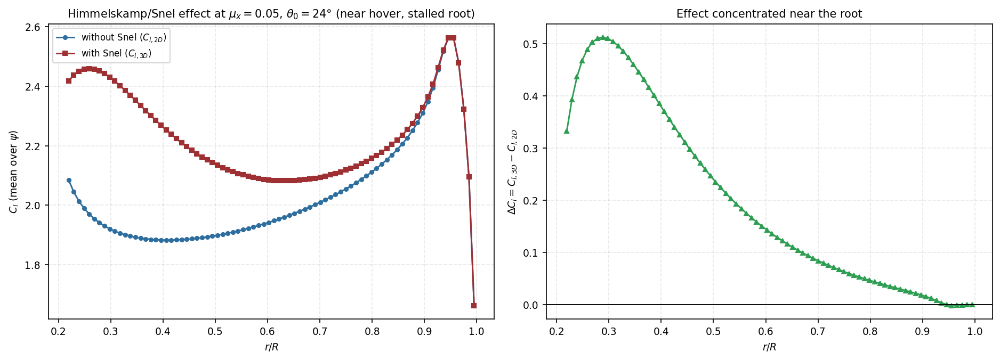
Configuration and applicability. Enable it when a two-dimensional polar is being used for a rotating blade and the inboard sections are expected to stall, which means high collective, low speed, or a heavily loaded rotor. It matters most for blades whose inboard chord is a large fraction of the radius. It cannot substitute for a measured rotating polar where one exists, and it will appear to do nothing whenever the blade stays attached.
GUI: the use_rotational_augmentation checkbox in the 3D rotational effects block.
.bemt: the key use_rotational_augmentation in
config.bemt, a switch, default false.
CLI: --rotational-augmentation to enable it and
--no-rotational-augmentation to disable it.
9.4.2 Radial flow correction
The physics. In forward flight the air does not meet the blade squarely. At each station the free stream has a component running along the span,
largest when the blade points across the flight direction and zero when it points along it. This component exists only in forward flight. In hover and in purely axial flight it is absent.
The spanwise flow is felt by the boundary-layer, and so contributes to skin friction, but it does not turn the section, and so contributes nothing to lift. Treating the whole velocity as acting on the section therefore overstates the drag. This correction, the independence principle, removes the spanwise part from the drag calculation and leaves the lift untouched. It is the complement of the augmentation above: one acts on lift, the other on drag, and they do not overlap.
Configuration and applicability. Enable it for forward flight at appreciable advance ratio, where the skew is large enough to matter. In hover it does nothing. The maximum skew angle bounds how far it is allowed to act, and it exists because near the reverse-flow boundary the unbounded form drives the drag coefficient towards zero, which is the opposite of the physics. Leave it at $60$ degrees unless there is a specific reason to change it, and treat a large increase as a way of producing implausibly low drag rather than a more accurate answer.
GUI: the use_radial_flow_correction checkbox, with the maximum skew angle appearing beside it once enabled.
.bemt: the keys use_radial_flow_correction, a
switch, default false, and radial_flow_max_skew_deg, default $60.0$, both
in config.bemt.
CLI: --radial-flow-correction and
--no-radial-flow-correction switch it. The maximum skew angle has no flag of its own
and is set with --set config.radial_flow_max_skew_deg=45.
9.5 The induced-inflow solver
The physics. Everything else in this chapter exists to make one scalar equation well posed at every node of the mesh. Blade element theory and momentum theory must predict the same load, and they do so only at the induced inflow that satisfies
where $g$ returns the inflow implied by the loads at the current inflow. The settings in this block choose how that root is found. They do not change the equations: when two algorithms both converge, they agree, and the choice is about whether and how quickly convergence happens.
Two properties of the residual decide which algorithm wins. The first is smoothness: $g$ inherits the shape of the polar, so a lift curve with a corner gives the residual a corner too. The second is monotonicity: the residual is well behaved over most of the disk, but near stall a rising inflow can push the angle of attack past the lift peak and raise the residual instead of lowering it, reversing locally the slope a solver relies on.
Convergence is tested on the unrelaxed residual, and that is not a detail. Near the root, the tip and the reverse-flow azimuths the relaxation factor is deliberately small, so the step taken is small whether or not the element has actually converged. Testing the step would declare success exactly where convergence is hardest and a wrong answer most likely. The tolerance is compared against the residual itself.
9.5.1 Solver algorithm
What can be entered. Four algorithms, differing in cost per iteration, rate of convergence, and tolerance of a badly behaved residual.
| Option | Per iteration | Rate | When it wins |
|---|---|---|---|
newton |
Three evaluations: one plus a central difference for the slope | Quadratic | A smooth residual, where the quadratic rate reaches the tolerance in a handful of iterations. The default. |
fixed_point |
One evaluation | Linear | A badly behaved residual: it cannot be thrown off by a slope that is wrong, undefined or sign-reversed. |
aitken |
One evaluation, plus extrapolation from the last few | Faster than linear | The fixed point is stable but slow. |
bisection |
One evaluation | Linear, guaranteed | The root is bracketed and robustness matters more than speed. |
The mathematics. Fixed-point relaxation steps a fraction of the way towards the implied value,
and its error shrinks by roughly $|1-\omega(1-g')|$ each iteration, which states the trade directly: a small $\omega$ is stable but slow, a large one fast until it overshoots and oscillates. Newton instead builds a straight-line model of the residual and jumps to where it crosses zero,
with the slope from a central difference and the step limited so that a nearly flat slope cannot fling the estimate across the disk. Near the root it roughly doubles the number of correct digits each iteration, which is why it is the default even at three times the cost per step. Aitken accelerates the fixed-point sequence using its own recent history, without needing a slope. Bisection halves an interval known to contain the root, which converges whenever the root is bracketed and never faster than that.
Configuration and solver selection. Keep newton. Switch to
fixed_point or
aitken when convergence is erratic, which usually means the residual has a sharp
feature the slope estimate cannot cope with, and to bisection when robustness matters
more than time.
Solver convergence troubleshooting. Numerical stagnation typically stems from underlying formulation discontinuities rather than the root-finding algorithm itself. Common causes include: (1) operating beyond the angle-of-attack bounds of a static polar (yielding zero gradient $g'(\lambda_{total}) = 0$); (2) unmitigated reverse-flow discontinuities across the $U_T = 0$ boundary. Or (3) derivative discontinuities in non-smooth stall models. Recommended remedies are enabling 360° polar extensions (Section 8.2.4), applying continuous reverse-flow blending (Section 8.4), or selecting smooth stall formulations. Increasing the maximum iteration limit is effective only when residuals exhibit steady, monotonic decay.
GUI: the Solver dropdown in the Induced-inflow solver block.
.bemt: the key solver in config.bemt,
default "newton".
CLI:
--solver {fixed_point,newton,bisection,aitken}.
9.5.2 Iteration limit and tolerance
What they are. The tolerance decides when the iteration has succeeded, and the limit when it gives up. Convergence means $|h(\lambda_{total})|<\text{tol}$, tested on the unrelaxed residual for the reason given above. Each element carries its own status, which is what the convergence map in the Results tab displays. Exhausting the budget leaves an element marked unconverged rather than silently accepted.
Configuration and convergence criterion. Tighten the tolerance when the reported residual is not small enough for the quantity being studied, remembering that a tolerance far below the accuracy of the polar buys nothing. The limit is a safety bound rather than a quality setting: a case that fails at 200 iterations is usually not one that succeeds at 2000. Neither field changes the equations. They change how much confidence the reported numbers deserve.
GUI: the fields max_iter and tol.
.bemt: the keys max_iter, default $200$, and
tol, default $10^{-7}$, in config.bemt.
CLI: --max-iter N and --tol X.
9.5.3 Relaxation
The physics and the mathematics. Taking the full step an iteration suggests can overshoot and set up an oscillation that never settles. Relaxation blends the new value with the previous one,
trading speed for stability. The places that oscillate are not spread evenly over the disk: they are the root and the tip, where the loss factor changes quickly, and the azimuths where the flow changes sharply, including the reverse-flow boundary. The adaptive schedule lowers the factor in exactly those places and leaves it alone elsewhere, so the whole solution need not be slowed to stabilise a few elements.
Configuration and relaxation. Leave the schedule enabled and the factor at its default. If a case oscillates, lower the factor before raising the iteration limit, because an oscillating iteration does not converge however long it runs. The five schedule parameters are the radial and azimuthal thresholds at which the reduction begins and how strong it is. They rarely need changing.
GUI: the field relax, the relax_schedule checkbox, and the schedule parameters, which appear only when the schedule is enabled.
.bemt: in config.bemt: relax, default
$0.4$, and relax_schedule, a switch, default true. The schedule itself
is
relax_root_factor ($0.25$), relax_root_threshold ($0.3$),
relax_tip_threshold ($0.93$), relax_azimuth_factor ($0.5$) and
relax_azimuth_threshold ($0.3$).
CLI: --relax X and
--relax-schedule / --no-relax-schedule. The five schedule parameters
have
no flags of their own. Set them with --set, for example
--set config.relax_root_factor=0.15.
9.5.4 Early exit
Definition. The disk is solved as a whole, and a few stubborn elements can hold up a solution that is otherwise finished. Two mechanisms end the sweep early. The first stops once a large enough fraction of elements has converged. The second detects stagnation: when the residual stops improving for a number of iterations, further iterations will not help. Elements trapped exactly at the reverse-flow boundary, where the tangential velocity passes through zero, may never reach a tight tolerance however long they are given, and this is what stops them holding up everything else.
Configuration and limitation. The defaults end a sweep only when it is genuinely finished or genuinely stuck. Lowering the converged fraction makes runs faster and accepts a few unconverged elements, which is reasonable while exploring and not for a final result. The convergence map is where to check what was actually reached.
GUI: the Early exit group.
.bemt: in config.bemt:
early_exit_fraction, default $0.999$; stagnation_patience, how many
iterations without improvement count as stagnation, default $15$; and
stagnation_min_frac, the fraction that must already have converged before stagnation
may end the sweep, default $0.95$.
CLI: no flags of their own. Use --set, for example
--set config.early_exit_fraction=0.99.
10. Run Case
The Run Case tab evaluates one flight condition. Four inputs define the operating point: the two free-stream components, collective pitch, and rotational speed. The sections below follow the visible order and state each quantity's definition, units, sign convention, governing equations, direct and secondary effects, applicability and limitations, available representations, and the separate GUI, .bemt, and CLI configuration.
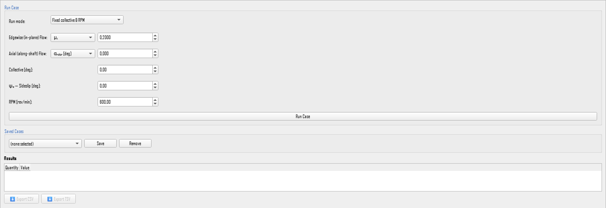
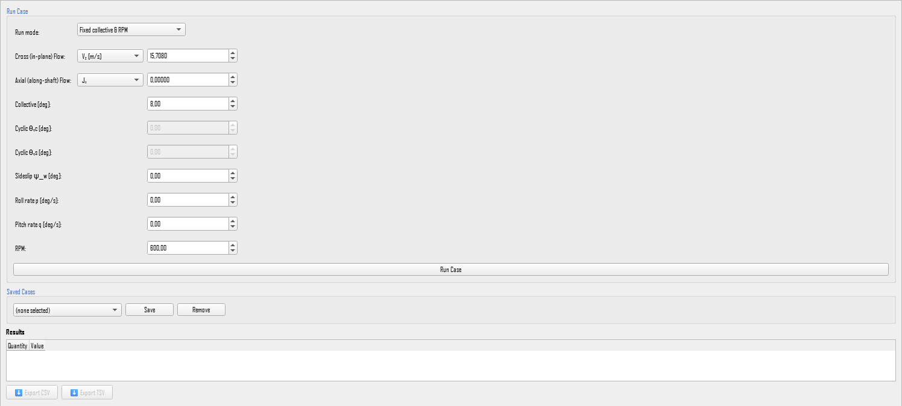
Editorial scope. Each field section below follows the visible order and states definition, sign convention, units, equations, direct and secondary effects, applicability, limitations, options, and separate GUI, .bemt, and CLI configuration.
- Choose the run mode: the direct mode, in which the collective is an input and the thrust is a result, or a trim mode, in which the collective is solved for a requested thrust (Section 10.5).
- Fill the two flow rows. Together they define a single operating point. Each row has a dropdown that selects how the value is expressed. Changing it converts the number on screen and leaves the physical quantity untouched.
- Set the collective and the RPM. In a trim run, the collective that is entered serves only as the starting guess.
- Press Run Case. The configuration is validated first, and the solution runs away from the main thread, so the GUI stays responsive. When it finishes, the run is added to the history in the Results tab.
- Read the summary table as a first check. In hover, expect a positive $C_T$ and a disk that is very nearly axisymmetric. In forward flight, expect the advancing and retreating sides to differ, and read a local $U_T<0$ as reverse flow rather than as a failure.
10.1 In-plane flow — the first row
The physics. The disk sweeps out a plane, and the free stream can be split into a component lying in that plane and a component running along the shaft. This row sets the first of the two. Its physical effect is to break the symmetry of the problem: a blade traveling into this component meets a higher relative velocity than one traveling with it, so the load on a blade rises and falls once per revolution, and the whole solution becomes a function of the azimuth $\psi$. When this component is zero the problem is axisymmetric, every azimuth gives the same answer, and the disk is in hover or in purely axial flight.
Which physical flow that is depends on how the shaft is mounted. For a rotor the shaft is vertical, so the in-plane component is the horizontal one: this is the edgewise advance of a helicopter in forward flight, and it is the dominant feature of the flight condition. For a propeller the shaft is horizontal, so the in-plane component is the vertical one: this is a cross-flow, produced by a crosswind or by the aircraft flying at an angle to its own axis. It is not the airspeed, and in straight and level cruise it is zero.
What can be entered here. The row accepts the same physical component written in several equivalent ways. These are unit choices, not different settings: selecting another one converts the number and changes nothing about the case.
- Rotor mode offers three: the ratio $\mu_x$, the advance ratio $J_x$, and the speed $V_x$ in m/s.
- Propeller mode offers four: the speed $V_z$ in m/s, the angle $\alpha_{disk}$ in degrees, the ratio $\mu_z$, and the advance ratio $J_z$.
The letters differ between the two lists because they follow the shaft, but every entry in both lists describes the same in-plane component. The angle appears only in propeller mode because an angle divides a stream into two components rather than fixing a magnitude, so it can only be offered on the row whose partner is already known.
The mathematics. The ratio is the component divided by the tip speed, which is the natural scale of the problem because it is the speed the blade tip already has from rotation alone:
The advance ratio is the same quantity measured per revolution instead of per radian. Writing $J=V/(nD)$ with $n=\Omega/2\pi$ revolutions per second and $D=2R$ gives
so converting between the ratio and the advance ratio requires nothing but the value itself, while converting either into a speed in m/s requires the rotational speed and the radius. The component reaches the solution through the tangential velocity of each blade element,
which is where the azimuthal dependence enters: the $\sin\psi$ term adds on one side of the disk and subtracts on the other. In propeller mode the angle form is related to the two components by $\alpha_{disk}=\operatorname{atan2}(V_z,V_x)$, so it fixes the cross-flow once the along-shaft component is known.
Configuration and sign convention. For a rotor, use $0$ for hover, and a positive value for forward flight. Helicopter cruise falls roughly between $\mu_x=0.15$ and $\mu_x=0.35$. Above about $\mu_x=0.5$ a large part of the retreating side is in reverse flow, and the result should be read with that in mind rather than taken at face value. For a propeller in straight and level cruise, set this row to zero: $V_z=0$, or equivalently $\mu_z=0$ or $\alpha_{disk}=0^\circ$. Give it a non-zero value only to model a genuine cross-flow, such as a crosswind or a climb at an angle to the shaft.
GUI: the first flow row of the Run Case block, a dropdown followed by a spinbox. It is labeled Edgewise (in-plane) Flow for a rotor and Cross (in-plane) Flow for a propeller. Changing the dropdown converts the displayed number at once. Two of the options, the speed in m/s and the angle, cannot be computed from the ratio alone: they also need the rotational speed and the rotor radius. Those are taken from the RPM field and from the project's geometry, so both must be set before switching to either option.
.bemt: stored as a ratio, under the key mu_x in a
rotor project and mu_z in a propeller project, inside every condition of
saved_cases.bemt and batches.bemt. The default is $0.0$. The file always
stores the ratio, whichever
option was used to enter it. The advance ratio, the speed in m/s and the angle exist only in the
window, which converts them to the ratio before saving. There is therefore no key named after
them: a file containing J_x or alpha_disk has that entry reported as an
unknown key and ignored, and the field falls back to its default of $0.0$. When editing a file by
hand, convert the value to the ratio first.
CLI: define in-plane flow using exactly one of
--mu-inplane X, --j-inplane X, --v-inplane X, or
--alpha-disk-deg X. Specifying multiple mutually exclusive flags raises an input error.
Dimensional velocity (--v-inplane) and angle (--alpha-disk-deg) require
--rpm to compute reference tip speed.
10.2 Along-shaft flow — the second row
The physics. This row sets the other half of the free stream: the component running along the shaft, parallel to the axis the disk pushes air down. It matters more than its share of the velocity suggests, because it is the component the induced velocity adds to. The disk accelerates air along the shaft, and the flow that arrives already moving along that axis changes how much further acceleration the disk can produce. That is why this component, and not the in-plane one, determines the operating point of momentum theory.
For a rotor the shaft is vertical, so this is climb when it is positive and descent when it is negative. For a propeller the shaft is horizontal, so this is the aircraft's airspeed, and in cruise it is by far the larger of the two components.
What can be entered here. As on the first row, several equivalent forms are offered.
- Rotor mode offers four: the angle $\alpha_{rotor}$ in degrees, the speed $V_z$ in m/s, the ratio $\mu_z$, and the advance ratio $J_z$.
- Propeller mode offers three: the advance ratio $J_x$, the ratio $\mu_x$, and the speed $V_x$ in m/s.
The angle appears on this row for a rotor and on the first row for a propeller. In both cases it belongs to whichever row is not the one that carries the flight's main component, for the same reason as before: an angle splits a known component into an unknown one, so the partner has to be known first.
The mathematics. The disk adds an induced velocity $v_i$ to whatever is already flowing along the shaft, and the total is what the blade elements actually see:
Because $v_i$ itself depends on the load, and the load depends on the total velocity, this is the coupling that the solver has to resolve. The angle form is related to the two components by
which shows why an angle on its own is not enough to define a case: it fixes the direction of the free stream but not its magnitude. For a propeller the advance ratio on this row, $J_x=V_x/(nD)$, is the classic propeller advance ratio, the quantity against which thrust coefficient and efficiency are normally plotted.
Configuration and sign convention. For a rotor, leave it at zero for hover and for level forward flight, use a positive value in m/s to model a climb, and a negative one to model a descent. A descent in the band between roughly $-2v_h$ and zero, where $v_h$ is the hover induced velocity, falls in the region where momentum theory has no valid solution, and results there are unreliable no matter how fine the mesh or how tight the tolerance. For a propeller this is where the airspeed belongs, most naturally entered as $J_x$: zero represents the static case, and cruise typically falls between $J_x=0.6$ and $J_x=1.2$.
GUI: the second flow row, a dropdown followed by a spinbox, labeled Axial (along-shaft) flow in both modes. Changing the dropdown converts the displayed number using the in-plane component, the rotational speed and the radius already present in the form, so those should be filled before switching to an angle.
.bemt: stored as a speed in m/s, under the key Vz
in a rotor project and Vx in a propeller project, inside every condition of
saved_cases.bemt and batches.bemt. The default is $0.0$. As on the first
row, only this one form is stored: there is no key for the angle or for either ratio, and a file
that uses one of those names has the field ignored and falls back to the default. A case that was
set up using an angle must therefore be written to the file as the velocity component it produced,
which the interface shows as soon as the dropdown is switched back.
CLI: define along-shaft flow using exactly one of
--v-axial X, --j-axial X, --mu-axial X, or
--alpha-rotor-deg X. Non-dimensional ratios (--mu-axial,
--j-axial) and angles require --rpm. Setting both
--alpha-rotor-deg and --alpha-disk-deg is rejected as an over-constrained
condition.
10.3 Collective pitch
The physics. The collective is a uniform offset added to the geometric blade twist. It serves as the primary thrust control by shifting the angle of attack across all blade stations simultaneously at constant freestream flow. Aerodynamic stall determines the operational upper boundary. The built-in twist and the induced inflow vary radially. Therefore, the blade reaches the critical stall margin progressively along the span. Beyond that point, more pitch input triggers blade stall, which reduces the total thrust and increases the torque.
The mathematics. The pitch angle of the element at radius $r$ is the collective plus the geometric twist stored with the geometry,
and the angle of attack that the airfoil actually works at follows by subtracting the angle the oncoming flow makes with the disk plane,
The inflow angle $\phi$ is largest inboard, where the tangential velocity $U_T=\Omega r$ is smallest, which is why the inboard stations are usually the first to stall.
Configuration and valid range. The value is in degrees. Most rotors operate between $0$ and $12$ degrees. If thrust stops rising as the collective is increased, the blade has stalled rather than the solver having failed, and the polar and the stall settings are the place to look. In a trim run the collective is the quantity being solved for, so the value entered is only a starting guess.
GUI: the field Collective [deg], the third row of the Run Case block.
.bemt: the key collective_deg in every condition
of saved_cases.bemt and batches.bemt, with a default of $8.0$. This key
is the same in both modes: it is an angle about the blade's own axis, not a component of the
flow, so it has no reason to follow the shaft.
CLI: --collective X.
10.4 Rotational speed
The physics. The rotational speed sets the scale of every velocity in the problem. It is a much blunter control than the collective: raising it increases the load, the tip Mach number and the profile drag power all at once, and in a real machine it is usually held fixed by the drive system rather than treated as a free variable. It also fixes the reference against which the dimensionless quantities on this page are measured, so changing it at a fixed $\mu_x$ silently changes the actual airspeed being modeled.
The mathematics. The field enters as the angular velocity
which fixes the tangential velocity $U_T=\Omega r+V\sin\psi$ of every element, and through it the relative velocity $W=\sqrt{U_T^2+U_P^2}$, the local Reynolds and Mach numbers, and the dynamic pressure. The aerodynamic loads scale with $W^2$, so at a fixed pitch the thrust grows approximately with the square of the rotational speed.
Configuration and valid range. The value is in revolutions per minute and must be positive. The tip Mach number $M_{tip}=\Omega R/a$ sets the practical ceiling. Beyond approximately $0.85$, the drag rise near the tip starts to dominate the power. Therefore, the polar has to cover that range for the answer to mean anything. Leaving the field empty uses the rotational speed already stored with the rotor.
GUI: the field RPM, the fourth row of the Run Case block.
.bemt: the key rpm in every condition of
saved_cases.bemt and batches.bemt. It is optional: when it is absent,
the
rotor's own stored speed is used. Like the collective, it is the same key in both modes.
CLI: --rpm X. It is also required whenever a flow
component is given as a speed in m/s or as an angle, since both of those need the tip speed before
they can be converted.
10.5 Run mode and trim
The physics. A rotor is not usually specified by its collective but by the thrust it has to produce. The run mode chooses between the two ways of expressing that. In the direct mode the collective is an input and the thrust comes out. In a trim mode the requirement is reversed: a thrust is demanded, and the collective, or alternatively the rotational speed, is adjusted until the disk produces it.
The mathematics. A trim run solves a scalar equation by bisection, with one complete BEMT solution inside every trial. A fixed-thrust trim drives the dimensional thrust to its target, and a fixed-$C_T$ trim drives the coefficient instead:
The two targets are not interchangeable. Thrust is dimensional, whereas $C_T=T/(\rho A(\Omega R)^2)$ is normalized by the tip speed, so at a fixed coefficient target a change in rotational speed changes the dimensional thrust that satisfies it.
Configuration and applicability. Use the direct mode unless the case is defined by a thrust requirement. A trim that does not converge usually means the target lies outside what the blade can produce at that condition, above the stall or below the drag floor, rather than that the solver has failed.
GUI: the Run mode dropdown at the top of the tab, together with the Trim target and Target value fields, which appear only when a trim mode is selected.
.bemt: not part of a stored condition. A trim is a way of running a condition, not a property of one, so a saved case records the operating point and not how it was reached.
CLI: --trim-mode solve_collective holds the RPM
fixed and solves for the collective, and --trim-mode solve_rpm does the reverse.
Exactly one of --trim-target-thrust X in newtons or --trim-target-ct X
must be given. In a batch every queued condition is trimmed independently.
10.6 Saved cases
A saved case is a named operating point kept with the project, so that a condition worth repeating does not have to be retyped. Saving records the four fields above as one entry. Loading fills the form again, converting each stored value into whichever form the dropdown happens to be showing at that moment: the entry keeps the physical quantity, not the unit it was typed in.
GUI: the Saved cases block below the Run Case controls, with a dropdown and the Save and Remove buttons.
.bemt: the file saved_cases.bemt, holding a list
of entries. Each entry is {name, mu_x, Vz, collective_deg, rpm} in a rotor project
and
{name, mu_z, Vx, collective_deg, rpm} in a propeller one, following the same rule as
the individual fields above. The key name is the label shown in the dropdown and in
the command line listing. It defaults to "Case 1" and must be unique within the file,
since a case is selected by it.
CLI: --list-cases prints the saved names and
exits, and --from-bemt-case NAME runs one of them instead of building a condition
from flags.
10.7 The summary table
After a run, the table lists the condition that was solved together with the integrated results: the thrust, torque and power coefficients $C_T$, $C_Q$ and $C_P$, the figure of merit $FM$, the in-plane forces $H$ and $Y$, and the hub moments $M_x$ and $M_y$. Symbols are written in the letters of the current mode, so a propeller project shows its airspeed as $J_x$ in the results exactly as it did in the input field. Hovering over a symbol gives its full name, and the export buttons write the same numbers as CSV or TSV.
This table is a first diagnostic rather than the place the analysis is done. The distributions along the blade, the convergence history, the disk maps and the sweep curves all live in the Results tab, which also keeps every run of the session in its history.
11. Run Batch
The Run Batch tab solves a list of flight conditions one after another. Everything except the condition is held fixed, so the results are directly comparable and the list becomes a sweep. The tab builds that list in two ways, which can be combined: a factorial sweep, which generates the list from the values given on up to three axes, and an explicit list, in which each condition is entered by hand. Both fill the same queue, and the queue is what runs.
The four quantities a batch sweeps (the in-plane component of the flow, the along-shaft component, the collective and the rotational speed) are exactly the four that define a single case, and they mean the same thing here as there. This chapter therefore documents what a batch does with them: how a queue is generated, what the unswept values do to the answer, and where the results go. The physics of each of the four quantities, its units, its sign convention and its valid range are given once, in Chapter 10, and are not repeated here.
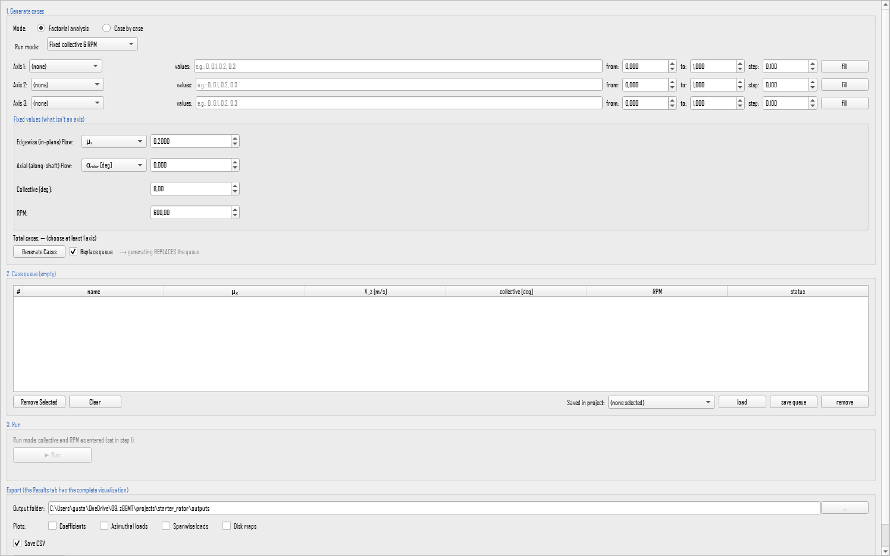
Editorial scope. Each field section below explains how the control changes the generated operating conditions, gives its mathematics, applicability and limitations, lists options, and documents the separate GUI, .bemt, and CLI forms.
- Choose how the list is built. Use the factorial sweep when the conditions wanted are every combination of a few values on up to three axes. Use the explicit list when each batch condition has to be entered individually.
- Set the values on each axis and check the Total cases counter. Generating a list runs no physics, so it is immediate and can be repeated freely. Replace queue discards the current queue before generating. Leaving it unchecked adds to what is already there.
- Fill the fixed values. These are the quantities not chosen as axes, and they are held at these values for every condition in the queue. They change the answer, so choose them deliberately (Section 11.2).
- Review the queue. Individual rows can be removed and the whole queue cleared. A queue worth repeating can be saved under a name before it is run.
- Press Run. Conditions are solved one at a time, with a progress bar and a status row per condition, and the GUI stays usable throughout. Cancel stops the run after the condition in progress.
- Use Export for files on disk. Use the Results tab to compare the runs interactively.
11.1 Sweep axes
The physics. A factorial sweep answers the question "how does the rotor respond to these variables", and each axis is one variable allowed to change. Four quantities can be swept: the in-plane component of the flow, the along-shaft component, the collective, and the rotational speed. They are the same four quantities that define a single case, which is why a batch needs no settings of its own beyond the values to sweep.
The mathematics. The queue is the Cartesian product of the axes. With three axes holding $n_1$, $n_2$ and $n_3$ values, the queue holds
conditions, and the cost of the batch is $N$ complete solutions. The counter in the GUI shows $N$ before anything runs, which is the moment to notice that three axes of ten values each is a thousand solves.
What can be entered. Each axis offers the same choice of units as the corresponding field in Run Case, and the choice affects only how the values are typed.
| Axis | Rotor mode | Propeller mode |
|---|---|---|
| In-plane flow | $\mu_x$, $J_x$, $V_x$ [m/s] | $V_z$ [m/s], $\alpha_{disk}$ [deg], $\mu_z$, $J_z$ |
| Along-shaft flow | $\alpha_{rotor}$ [deg], $V_z$ [m/s], $\mu_z$, $J_z$ | $J_x$, $\mu_x$, $V_x$ [m/s] |
| Collective | degrees | |
| Rotational speed | rev/min | |
Configuration and valid combinations. At most three of the four may be axes at once. A quantity used as an axis is swept and its fixed field is ignored, so the same quantity can never be both swept and held. Start with a coarse sweep to see the shape of the answer, then refine the range that matters: a batch is cheap to define and expensive to run.
In the GUI, the Factorial sweep block shows one row per axis, each with a checkbox to use it as an axis, a unit dropdown, and the list of values.
In the .bemt file, a generated queue is stored as ordinary conditions, not
as a formula. Each entry of conditions in batches.bemt is a complete
flight condition with the same keys as a saved case, so a batch introduces no new keys. How the
list was produced is recorded alongside it in sweep_kind and
sweep_params (Section
11.4).
From the CLI, there are no flags for the sweep axes. A factorial sweep is
generated in the GUI; from the command line, run a batch that has already
been saved, with
--from-bemt-batch NAME. --list-batches prints the names available in the
project and exits.
11.2 Fixed values
The physics. The quantities not chosen as axes are held at the values given in the Fixed block. These are not administrative details: every batch answers the question "how does the rotor respond to this variable, with everything else held at these values", and the held values change the answer.
Rotational speed is the clearest case, because the whole dimensionless scale is built on the tip speed $\Omega R$:
A collective sweep at 600 rev/min and the same sweep at 1200 rev/min are two different physical experiments, not one experiment in two units. Doubling $\Omega$ quadruples the dynamic pressure the loads are divided by, It also doubles the local Reynolds and Mach numbers. Therefore, zBEMT reads the section polars at a different place. Two $C_T$ curves taken at different fixed rotational speeds can therefore separate for a purely compressible or viscous reason, with nothing changed in the geometry.
The in-plane advance ratio is the most consequential fixed value. With $\mu_x=V_x/(\Omega R)$, the in-plane velocity seen by a section at radius $r$ and azimuth $\psi$ is
so $U_t$ changes sign wherever $r/R<-\mu_x\sin\psi$. That inequality traces a circle of diameter $\mu_x R$. The circle is tangent to the hub and lies on the retreating side. This is the reverse-flow region. The value typed in the fixed advance field sets its existence and its size, and nothing else does. The same $\mu_x$ fixes the advancing and retreating asymmetry, since the extremes of $U_t$ at a given radius are $\Omega r(1\pm\mu_x R/r)$. Holding $\mu_x$ at $0.05$ and at $0.35$ turns one collective sweep into two studies with different failure modes: the second can stall on the retreating side long before the first runs out of thrust.
Configuration and physical scope. Choose the fixed values to match the flight condition being studied, and record them with the results. A curve from a batch is a slice through a four-dimensional space of conditions, and it is comparable with another curve only when the three unswept values agree. When they do not, say so explicitly rather than reading the gap between the curves as an effect of the geometry.
In the GUI, the Fixed block shows a row for each quantity not currently used as an axis, with the same unit dropdowns as Run Case.
In the .bemt file, fixed values are not stored separately. They are
already
present in every entry of conditions, because each entry is a complete condition
carrying all four quantities.
From the CLI, when a saved batch is run, the fixed values come from the stored conditions. A single condition given by flags uses the Run Case flags of Section 10.1 instead.
11.3 The condition queue
Definition. The queue is the list of conditions that will actually be solved, and it is the single record of what a batch is. A factorial sweep fills it, the explicit list fills it, and both may contribute to the same queue. Nothing is solved until the queue is run, so it can be inspected and edited first.
How it behaves. Conditions are solved independently and in order. A collective or a rotational speed found by trimming one condition is never carried over as the starting point of the next, so the queue is a set of well-defined operating points rather than a sweep whose result depends on the order it was run in. When a trim mode is active, every condition in the queue is trimmed separately against the same target.
Configuration and verification. Review the queue before running it. Remove conditions that were generated but are not wanted, rather than filtering them out of the results afterwards. A queue that will be used again should be saved as a named batch first.
In the GUI, the Case queue table carries buttons to add and remove a condition and to clear the queue, and the Explicit conditions list block for entering conditions individually.
In the .bemt file, the key conditions of a batch in
batches.bemt is a list in which each entry is a complete flight condition, with the
same
keys and the same mode-dependent letters as a saved case. The default is an empty list.
From the CLI, --from-bemt-batch NAME runs the stored
queue.
There is no flag for editing it. A queue is built in the GUI or by
writing
batches.bemt directly.
11.4 Saved batches
Definition. A saved batch is a named queue kept with the project, together with a record of how it was generated. The record exists so that a sweep can be recognized later for what it was, and so that the GUI can reopen it with the axes filled in rather than as an anonymous list of conditions.
Configuration and persistence. Review the queue, then save the batch. Give it a name that states the experiment, since the name is what appears in the GUI and in the command line listing.
In the GUI, the Batches defined in this project block names, saves and removes batches in the same way as saved cases do for single conditions.
In the .bemt project, batches are stored in the file batches.bemt, a list of
batches.
Besides conditions, each batch carries sweep_kind, the way the queue
was
produced, which is "custom" for a hand-built list, "factorial" for a
Cartesian product, or one of "mu_sweep", "alpha_sweep" and
"collective_sweep" for a single-axis sweep. And sweep_params, the
values
that were swept, kept so the sweep can be reconstructed. Both describe the queue rather than
defining it: what runs is always conditions.
The key name labels the batch. It defaults to "batch 1", is what
appears in the GUI and in the listing, and is how a batch is
selected, so it must be unique
within the file.
From the CLI, --list-batches prints the names and exits. --from-bemt-batch NAME runs one.
11.5 Where the results are written
Definition. A batch produces one row of results per condition, and optionally a set of figures. This section sets where those files go and which figures are drawn.
Configuration and output location. Leave the folder empty to use outputs/
inside the project,
which keeps a study with the project that defines it. Ask only for the figures that will be
looked at: disk_map draws twelve fields for every condition, so a queue of fifty
conditions produces several hundred images.
In the GUI, the Export block holds an output folder, the choice of plots, and a switch for writing the results table.
In the .bemt file, a batch may carry its own outdir, the
folder its results are written to, and plots, the list of figure kinds to draw.
Both
default to empty, in which case the results go to outputs/ inside the project and
no
figures are drawn.
From the CLI, --outdir PATH specifies the export
directory, overriding project defaults. The --plots flag controls post-processing
graphics: performance (integrated coefficient sweeps), disk_map (2D
spatial disk distributions), and convergence (solver residual histories). Tabular
summaries are exported to results.csv unless suppressed with --no-csv.
For parametric batches, --export-layout per_case partitions figures into
dedicated condition subdirectories.
11.6 Reports
A report gathers a batch into a single HTML file: the summary table for every condition, the
mesh, solver, rotor and polar that were used, and the figures embedded inside the file itself,
so you can send it on with nothing alongside it. The report button in the
Results tab produces it, and so does --report on the command
line, which writes report.html into the output folder unless
given a file name. --report-notes TEXT embeds a note in it.
The figures on disk and the figures in the report are chosen independently. Asking for no
plots
with --plots does not empty the report, and asking for a report does not write
loose
images. Both routes produce the same report from the same results.
12. Results
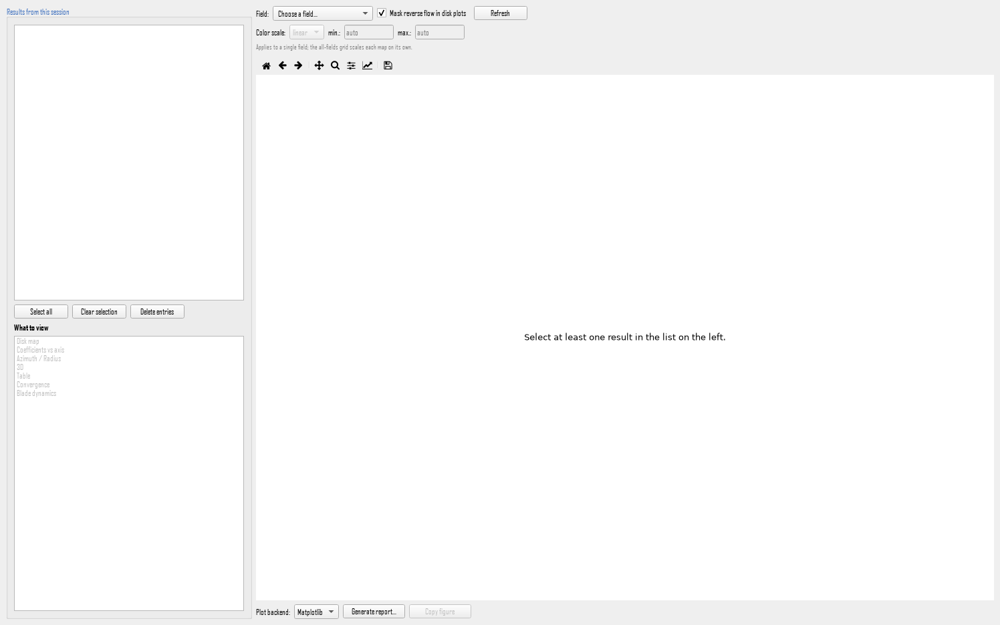
Editorial scope. Each Results view below identifies the displayed quantity, equations and units, operating-condition applicability, interpretation limits, available options, and the relevant GUI, .bemt, and CLI path when one exists.
12.1 Results
The Results tab examines completed cases. The session history retains entries from Run Case and Run Batch until the project is closed, allowing single-case inspection and comparison. Checkboxes select one or more entries. Each view is enabled only for compatible selections. A global integral does not demonstrate local convergence, so maps, slices, and convergence information remain part of the engineering interpretation.
Using the Results panel
Use the left history as the starting point. Select cases that answer the same question, then choose the plot:
- Disk Map answers where on the disk a load or flow feature occurs. Select one case, choose a field, and use manual limits only when maps must share a scale.
- Coefficients vs. Axis answers how performance changes. Select a sweep, choose the independent axis, and use overlay when separate cases must remain distinguishable.
- Azimuth / Radius answers how one radial station varies around the disk, or how one azimuth varies along the blade. Fixed slices are analysis selections, not new solver inputs.
- 3D is for spatial inspection and export. It is another view of the same solved loads, not a higher-fidelity solve.
The summary table is the global integral. For a rotor, read $C_T$ together with $C_Q$ and $FM$; $C_P$ is the same number as $C_Q$, so it adds nothing beside it. For a propeller, read $C_{T,prop}$, $C_{P,prop}$, the along-shaft advance ratio $J_x$ and $\eta_{prop}$. A plausible integral does not prove that every element converged: inspect the convergence map and the local maps when a result looks surprising.
12.1.1 Disk Map
The Disk Map visualizes 2D spatial distributions across the rotor disk for a single evaluated flight condition. Available scalar fields include induced and total inflow ($\lambda_i, \lambda_{total}, V_i$), sectional velocities ($U_p, U_t, W$), aerodynamic angles ($\alpha, \phi$), sectional blade forces ($F_n, F_t$), force components ($F_{t,i}$ induced, $F_{t,p}$ profile), aerodynamic coefficients ($C_l, C_d$), local Mach number ($M$), and dynamic pressure ($q = \tfrac12\rho W^2$). Multi-panel layouts display all 16 distributions simultaneously. Display controls include linear/logarithmic color scaling, manual range limits, and reverse-flow masking (Section 8.4).
Computational discretization. Each mesh cell $(r_i, \psi_j)$ represents one element of the blade discretization containing converged velocity triangle components: in-plane velocity $U_t = \Omega r + \mu_x\Omega R\sin\psi$, normal velocity $U_p$, total velocity $W = \sqrt{U_p^2 + U_t^2}$, inflow angle $\phi = \operatorname{atan2}(U_p, U_t)$, and effective angle of attack $\alpha = \theta - \phi$. Sectional normal force per unit span evaluates as:
Disk map physical interpretation. In hover, the solution is purely axisymmetric, producing concentric radial contours. The radial load $F_n(r)$ peaks typically between $0.75R$ and $0.90R$, reflecting the balance between outboard dynamic pressure growth ($\sim (\Omega r)^2$) and tip-loss circulation decay ($F \to 0$ as $r \to R$). In forward flight ($\mu_x > 0$), azimuthal asymmetry develops: dynamic pressure increases on the advancing blade ($\psi = 90^\circ$) and decreases on the retreating blade ($\psi = 270^\circ$). Inflow $\lambda_i(r,\psi)$ and angle of attack $\alpha(r,\psi)$ exhibit complementary distributions, as higher induced inflow increases $\phi$ and reduces local $\alpha = \theta - \phi$.
Physical boundaries. Discontinuities along reverse-flow boundaries ($U_t = 0$) and rapid tip-loss decays represent physical flow features rather than numerical artifacts.
Color mapping and dynamic range. When localized flow features (such as stall patches or transonic tip dynamic pressure) exhibit sharp extrema, logarithmic scaling or manual range clamping preserves visual contrast across the broader disk domain without altering underlying numerical data.
Limits. Masking reverse flow is a visualization toggle. Underlying force integrations and exported tabular metrics retain all blade element contributions.
12.1.2 Coefficients vs. Axis
This view accepts one run or several. It gives the sweep answer: each solved condition collapses to a single point, and the points line up into the performance curves. Where a disk map shows one condition in full spatial detail, this view throws that detail away deliberately to show how the integrated behavior moves as one flight variable changes. Choose the X axis from $\mu_x$, $\alpha_{deg}$, collective, or RPM (Section 12.3) and, with 2+ selections, toggle between combining everything into a single curve or overlaying one series per selection.
Choose the axis that actually varied. The selected results are sorted along the chosen quantity before being joined. Plotted against a variable that was held fixed, many conditions land on the same abscissa and the connecting line becomes meaningless zig-zag. A vertical stack of points is the signature of that mistake.
Custom X-Y plotting and series grouping. Enabling Custom X-Y allows arbitrary pairing of integrated output metrics, categorized into distinct curves via the Group curves by parameter. The Group tolerance setting (default $0.01$) defines the numerical threshold for grouping discrete sweep levels, filtering numerical precision variations in derived kinematic parameters (for example, trigonometric reconstruction of flight angles).
What the classic shapes mean. Against collective, thrust first rises almost linearly, because each degree adds $\alpha$ over the whole blade at fixed dynamic pressure. It then bends over and flattens as stall arrives, and it arrives progressively, first at whichever stations combine high twist-plus-collective with lower local speed, spreading outboard as the collective climbs. Power rises faster than thrust throughout, because the induced part scales roughly as
a three-halves power, while the profile part is nearly independent of thrust and never goes away. The figure of merit,
is therefore a ratio of a growing numerator to a sum of a growing and a nearly constant term: it must peak at a finite loading. Low loading is dominated by profile drag, high loading by induced power and stall, and the maximum between them is the design point this plot exists to locate. Note that this measure is a hover definition. Away from hover the same formula can exceed one and stops meaning efficiency.
Overlay versus combine. Overlay keeps one curve per selected case, which is how a family is read: one curve per rotational speed, say, against collective, so the vertical spread between curves is itself the result. Combining merges all selected points into a single series, and that is only legitimate when they truly form one monotone sweep of the chosen axis with every other condition held equal. Combining a family produces a curve that folds back on itself and averages away the very effect being studied.
Limits. A point here is an integral over the whole disk. Therefore, it cannot show whether a drop in the figure of merit came from a stalled inboard band or from tip compressibility. The two causes have opposite remedies. When a curve bends, return to the spatial views to find the reason.
12.1.3 Azimuth / Radius
This view needs exactly one run selected. It gives a slice through the disk: instead of color over an area, it plots one quantity as a curve, either along the radius at fixed azimuths or around the azimuth at fixed radii. Both cuts read the same converged mesh as the disk map, but a curve lets magnitudes be read off an axis, which a color bar never does well.
The radial cut answers "where does the blade carry its load". At fixed $\psi$ the local normal load
is the product of three competing radial trends: dynamic pressure rising as $r^2$, chord and twist set by the geometry, and the tip loss cutting the last few per cent of span to nothing. The resulting curve normally climbs through the mid-span, peaks outboard, and drops steeply at the tip. Read the accompanying $\alpha$ or $C_l$ cut alongside it: a station where $C_l$ has stopped following $\alpha$, or where $C_d$ jumps by an order of magnitude, is stalled, and the radial position of that break says whether the cure is twist, chord, or simply less collective. The thrust carried by the blade, in these variables, is the area under the curve.
The azimuthal cut answers "what does this station feel once per revolution". At fixed $r/R$ the in-plane velocity is $U_t=\Omega r+\mu_x\Omega R\sin\psi$, so the load traces a cycle with its maximum near $\psi=90^\circ$ on the advancing side and its minimum near $\psi=270^\circ$. That once-per-revolution variation is what the blade root, the hub and the control linkages actually see as an alternating load, and it is the quantity that drives vibration and fatigue. The mean value from a performance curve does not show it. Its peak-to-peak amplitude grows with $\mu_x$, and inboard stations at high $\mu_x$ show the extra kink where the curve crosses into reverse flow.
Hover is the built-in sanity check. With $\mu_x=0$ the disk is axisymmetric and every azimuthal cut must be a horizontal line. A hover case that produces a wavy azimuthal curve is reporting an error, either a non-zero advance or axial term left in the condition, or an unconverged solution. No conclusion drawn from that run is safe until the line is flat.
Limits. A cut is only as representative as the azimuths or radii listed for it: four azimuths cannot show a peak that falls between them, and a coarse list can miss a narrow stalled band entirely. When the curves look implausibly smooth, add stations before believing them.
12.1.4 3D
This view needs exactly one run selected. The two-dimensional plan view is always available. The rotor or blade in three dimensions and the 3D load distribution are produced through an optional rendering package, and those buttons stay disabled when it is not installed. Choose which field is painted on the surface: $F_n$, $F_t$, $\alpha_{eff}$, $\lambda_i$, $C_l$, $C_d$, or Mach.
3D geometric projection. Projecting aerodynamic distributions directly onto the 3D blade geometry correlates sectional force development with local chord $c(r)$ and geometric twist $\theta_{geo}(r)$. Local lift per unit span evaluates as:
Coupling $C_l$ with local chord distinguishes between highly loaded wide-chord blade sections and low-solidity sections operating at elevated lift coefficients. Furthermore, evaluating $C_l$ and local Mach number simultaneously identifies spanwise regions constrained by aerodynamic stall versus advancing-tip compressibility.
Read twist together with angle of attack. Painting $\alpha_{eff}$ on the twisted surface shows immediately whether the built-in twist is doing its job. A well-matched blade holds $\alpha_{eff}$ nearly constant along most of the span, and a strong radial gradient in that color is a statement about the twist distribution, not about the flight condition.
Limits. This view re-colors results that already exist. It never re-solves anything. Changing the painted field costs a redraw and changes no number, and if the underlying case was run on a coarse mesh, the smooth surface interpolates over detail that was never computed. Smoothness here is a property of the rendering, not evidence of resolution. It is also a single condition, like every spatial view: it shows where the blade is loaded now, not how that changes as the condition moves.
12.1.5 Export and Report
Definition. The views above answer questions on screen. This block turns what is on screen, or the whole selection behind it, into files: images, a numeric table, or one self-contained report. Nothing here re-solves anything. Every output is drawn from results that already exist in the session history.
Selecting a condition inside a batch. The spatial views (the disk map, the azimuth and radius cuts, and the three-dimensional view) each show one flight condition. When the selection is exactly one batch, an extra Batch condition selector appears and chooses which of the batch's conditions those views display. The sweep view is unaffected, since it plots the whole batch at once by construction.
What can be produced.
| Action | What it writes | When it is available |
|---|---|---|
| Export disk maps in batch | One image per selected field per condition, into a folder chosen at the time. The dialog offers which fields to draw, how to organize the folders and how to name the files. | Whenever the selection includes at least one batch. |
| Generate report | A single HTML file holding the summary table, the figures that apply to the current selection, and a record of the mesh, solver, rotor and polar that produced them. Disk maps of a selected batch are appended at the end. | Always, for any non-empty selection. |
| Copy table | Puts the numeric table currently displayed on the clipboard, tab-separated, ready to paste into a spreadsheet. | Always. |
The report and its format. A report is one file with every figure embedded inside it, so it opens with no network access and nothing alongside it: this is what makes it the right thing to send to someone who does not have zBEMT. When a selection would carry a very large number of figures the report is written instead as a small main page with companion pages beside it, so the main page stays quick to open. Nothing is left out of it either way.
The relationship to the loose image files. The images written by Export disk maps in batch and the figures embedded in the report are chosen independently. Exporting no images does not empty the report, and generating a report writes no loose images. The first controls what sits on disk as PNG files, the second what travels inside the HTML.
Reading the plots before exporting them. Every plot in this tab carries the standard controls (zoom, pan, and an axis dialog for limits and for switching an axis between linear and logarithmic) in all four view modes. Those settings affect what is on screen. An exported figure is drawn afresh.
In the GUI, the buttons Export disk maps in batch, Generate report and Copy table, below the results panel, with the Batch condition selector appearing beside them when a single batch is selected.
In the .bemt file, a batch may carry its own output folder and its own list of figure kinds, described in 11.5. Nothing in this block is otherwise stored: a report is an output, not part of the project definition.
From the CLI, --report writes
report.html into the output folder, and --report FILE writes it to a
given name. --report-notes TEXT embeds a note in it. --plots chooses
which loose figures are written, and --outdir PATH where they go. The report
produced
this way is the same file the button produces from the same results.
12.2 Results Aggregation
The Results tab integrates the two-dimensional fields into one row of global results. For a field $f(r,\psi)$, the disk integral is evaluated numerically as $$\bar f=\frac{N_b}{2\pi}\int_0^{2\pi}\int_{r_{root}}^R f(r,\psi)\,dr\,d\psi.$$ The integrated quantities include thrust, torque, power $P=Q\Omega$, rolling and pitching moments $M_x$ and $M_y$, and in-plane forces $H$ and $Y$.
Both coefficient families are calculated: the rotor convention ($C_T,C_Q,C_P,FM$) and the propeller convention ($C_{T,prop},C_{Q,prop},C_{P,prop},\eta_{prop}$). The selected mode determines which family is emphasized in labels, plots, and sweep defaults. Each exported row records the configuration and geometry that produced it.

starter_rotor example, at fixed
geometric
pitch and with no collective trim, so thrust is an output rather than a held constant. Left,
$C_T$ and $C_Q$ against $\mu_x$; right, the resulting figure of merit. The abscissa is the
in-plane
advance ratio and all three ordinates are dimensionless.Reading that sweep. Three features of it are general enough to be worth stating, and each has a named cause.
$C_T$ rises monotonically with $\mu_x$. At fixed pitch the advancing side gains more dynamic pressure than the retreating side loses, because the normal load goes with the square of the tangential velocity while the velocity itself is linear in $\mu_x$, and the gain and the loss therefore do not cancel. Stall and reverse flow on the retreating side deepen the imbalance rather than correcting it.
$C_Q$ is not monotonic. It falls to a minimum near $\mu_x\approx0.25$ for this rotor and rises again beyond it, because the two parts of the torque move in opposite directions and trade places. The induced part follows the induced velocity, which falls as more air passes through the disk per unit time, and it dominates at low advance ratio. The profile part follows the blade loading, which is rising along this sweep, and it takes over past the minimum. The Results tab can plot the two parts separately, which is the direct way to see the crossover for a given rotor.
The figure of merit grows past unity. It is the ratio of a rising numerator to a mostly falling denominator. Therefore, it must grow. A value above $1$ here signals the absence of collective trim, not a solver error: the definition is a hover one, as 12.3 sets out.
12.2.1 Total power curve
What it is. The shaft power a main rotor needs, plotted against flight speed, is the sum of three contributions that behave differently, and the shape of the total is what fixes the speeds for best endurance and best range. Two of the three are computed by zBEMT. The third belongs to the airframe and is added outside it.
Induced power, $P_i=T v_i$, is the power spent accelerating air through the disk. It falls with speed, because forward motion renews the mass flow through the disk and less induced velocity is then needed to sustain the same thrust. It dominates in the hover and at low speed.
Profile power, $P_0$, is the power spent dragging the blades through the air. It grows slowly with advance ratio, in the classical closed form as
because profile drag on an element goes with the cube of its tangential velocity, and the tangential velocity gains $V_x\sin\psi$ over part of the disk. It never goes away, not even at zero thrust.
Parasite power, $P_p=\tfrac12\rho V_x^{3} f$, is the power spent dragging the airframe, with $f$ its equivalent flat-plate area. It grows with the cube of speed and dominates at the top end. It is external to the rotor and is not part of what this program solves: $f$ is a property of the fuselage, not of the blade.
The sum. Falling induced power and rising parasite power give a curve with a minimum at an intermediate speed, the classical bucket. The bottom of the bucket is the speed of minimum power and therefore of maximum endurance. The speed for maximum range is where a line from the origin is tangent to the curve, which lies further right.

How to produce it here. A sweep in $\mu_x$ at constant thrust (which means a trim run, since thrust is otherwise an output) gives the induced and profile parts directly, as the two components of torque multiplied by the rotational speed. The parasite part is added afterwards from the airframe's own flat-plate area. Nothing in the rotor geometry can supply it.
12.3 Flight Condition Sweeps
What a sweep is. A sweep repeats the solution over a sequence of flight conditions and assembles one result row per condition, so that a trend can be read where a single case gives only a point. Every condition is solved as an independent steady problem: no state is carried from one to the next, so the order in which a sweep runs cannot change what it produces.
Choosing the independent variable. The abscissa may be either component of the free stream, the collective, or the rotational speed. Whichever is chosen, the other three are held, and the held values are part of the answer: a curve from a sweep is a slice through a four-dimensional space of conditions, comparable with another curve only when the three unswept values agree. The exported table records both the swept quantity and the fixed settings, which is what makes that check possible after the fact.
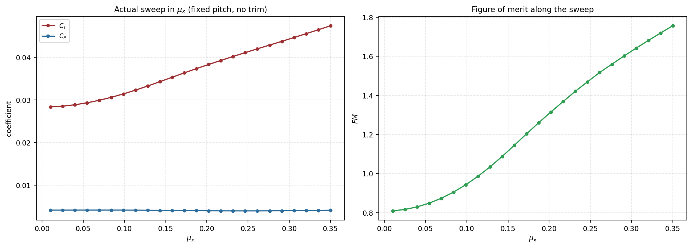
starter_rotor example, at fixed
geometric
pitch and with no collective trim, so $C_T$ varies freely along the sweep instead of being
held.
Left, $C_T$ and $C_P$ against $\mu_x$; right, the resulting figure of merit. All three
ordinates are
dimensionless.12.3.1 Trimmed and untrimmed sweeps
The distinction. The sweep above holds the pitch $\theta(r)$ fixed, so thrust is an output that varies from condition to condition. That is the direct mode, and it answers the question "what does this blade do at each of these conditions".
A performance polar (the usual way helicopter performance is reported) asks the opposite question: "how much power does it take to sustain the same weight at each speed". That requires thrust to be held, which means solving for the collective that produces it at every condition. Each of those is a search, with one complete solution of the disk inside each trial.
Why it sits outside the solver. The solver answers only in one direction: given a pitch distribution, what thrust and torque result. It never answers the reverse. A trim is therefore a loop around the solver, not a mode inside it, which is why a trimmed sweep costs several times an untrimmed one and why a trim that fails is a statement about the blade rather than about the solver.
How to run each. An untrimmed sweep is the default: define the axes, leave the run mode direct, and read thrust as a result. A trimmed sweep is the same batch with a trim mode selected, described in 10.5, and every condition of the queue is then trimmed independently against the same target.
12.3.2 Reading the figure of merit along a sweep
The definition is a hover one. $FM$ compares the actual power against the ideal actuator-disk power of a rotor in still air. That reference stops applying the moment there is a free stream, so past hover the ratio can exceed $1$. A value above unity in a forward-flight sweep is not a solver error. It is the definition being read outside its domain.
Why the column is produced anyway. Written out, $FM$ is
a thrust-to-torque ratio that remains a usable relative measure along a sweep even where its hover interpretation does not hold. Read that way (as a proxy for $C_T^{3/2}/C_Q$ and not as an efficiency), it still ranks configurations against one another at the same condition. Its absolute value carries no meaning outside hover.
What to read instead. For a propeller in cruise the quantity with a defined meaning is $\eta_{prop}$, which is zero at the static point by construction and peaks at a finite advance ratio. For a rotor away from hover, compare power at equal thrust, which is what a trimmed sweep produces.
13. Command-line reference
This chapter is the concise reference for automation. It lists the supported
CLI commands and flags, the corresponding .bemt files,
validation
rules, and common option combinations. Every editable project field remains reachable through
the serialized project representation, including fields without a dedicated
GUI control.
13.1 Running from the command line
The CLI points at a project folder, runs the condition or the sweep asked for, and writes the results. It goes through the same code as the GUI and applies the same validation, so a project run either way gives the same numbers.
Every flag sets a field the GUI can also edit, and a .bemt written by
any of the three is read back identically by the other two. After installing, the command
zbemt is available. Without installing, python -m zbemt.cli is the
equivalent.
# Run an existing project
zbemt --project projects/MyProject
# Run one of the example projects and already generate the report
zbemt --project projects/starter_rotor --from-bemt-batch "mu_sweep" --report
# Run a saved batch
zbemt --project projects/MyProject --from-bemt-batch hover_sweep
# List saved batches
zbemt --project projects/MyProject --list-batches
# Create new project, configure and persist
zbemt --new projects/MyProject --geom-radius 0.6 --rpm 1200 \
--inflow pitt_peters_steady --dynamic-stall --save-as projects/MyProject
# Generate polar via NeuralFoil, without running BEMT
zbemt --project projects/MyProject \
--gen-neuralfoil --airfoil-geometry naca2412 \
--reynolds 1e5,5e5,1e6 --mach 0.1,0.3 --alpha-range -10:20:0.5 \
--export-table saida/naca2412_neuralfoil.csvComplete table of flags (grouped by corresponding tab. See each linked section for the physical meaning of each field):
| Group | Flags |
|---|---|
| Project (Chapter 6) | --project PATH | --new PATH [--name NAME] |
--save-as PATH
|
| Saved cases/batches (Sections 10.6 and 11.4) | --list-batches | --list-cases |
--from-bemt-batch NAME | --from-bemt-case NAME
|
| NeuralFoil (Section 8.8) | --gen-neuralfoil | --airfoil-geometry SPEC |
--reynolds R1,R2,... | --mach M1,M2,... |
--alpha-range MIN:MAX:STEP | --export-table PATH
|
| Ad hoc condition (Chapter 10) | --rpm X | in-plane component: --mu-inplane X /
--j-inplane X / --v-inplane X /
--alpha-disk-deg X | along-shaft component: --v-axial X /
--mu-axial X / --j-axial X / --alpha-rotor-deg X
| --collective X; there is one flag per component, and never both angles at
once
|
| Geometry (Chapter 7) | --geom-preset {rectangular,tapered,elliptic,custom} |
--geom-file PATH | --geom-radius X |
--geom-root-cutout X | --geom-n-blades N |
--geom-chord X | --geom-taper-ratio X |
--geom-max-chord X | --geom-twist-root X |
--geom-twist-tip X | --geom-custom-points r:c:t,...
|
| Airfoil (Chapter 8) | --airfoil-source {analytical,table} | --airfoil-table CSV |
--dynamic-stall / --no-dynamic-stall |
--airfoil-stall-model {linear,clip,enhanced,viterna} |
--airfoil-sections-file PATH
|
| Config/Solver (Chapter 9) | --inflow {…} |
--prandtl-loss-mode {off,tip,root,both} |
--pitt-peters-states {3,5} | --pitt-peters-outer-iter N |
--pitt-peters-relax X | --pitt-peters-tol X |
--rotational-augmentation / --no-rotational-augmentation |
--radial-flow-correction / --no-radial-flow-correction |
--solver {fixed_point,newton,bisection,aitken} | --max-iter N
| --tol X | --relax X | --relax-schedule /
--no-relax-schedule
|
| Export (Section 11.5) | --outdir PATH | --plots [performance] [disk_map] |
--no-csv | --export-layout {flat,per_case} |
--report [FILE] | --report-notes TEXT
|
| Any field | --set NAMESPACE.FIELD=VALUE (for example, --set config.Ne=90 --set config.Npsi=144) reaches any configuration
or airfoil field, with or without a dedicated flag. The name is checked against the
project schema, so a typo becomes an error message rather than silence
|
| Validation | --validate-only (checks and does not run) |
--ignore-validation-errors (runs despite errors)
|
A field with no dedicated flag is still reachable, with --set. The field
sections of
the earlier chapters say so one by one, and they are mostly fine-grained numerical settings
(the analytical polar coefficients, the blend widths of the reverse-flow and full-range models,
and
the five relaxation-schedule parameters) for which a value given on the command line is
rarely the natural way to work. Setting one of those permanently means editing the project
file, or
setting it in the window and saving.
13.2 Validation rules
Every configuration is checked before the solver is called, and the same checks apply to the
GUI, the CLI and a project run from a saved
file. They flag combinations that are physically inconsistent or not implemented. A finding
either reports only, as info or warning, or blocks execution, as
error.
| Level | Condition Checked | Physical/Structural Reason |
|---|---|---|
| error | use_dynamic_stall=True with stall_model="linear" |
Øye interpolates between $C_{l,att}$ and the separated $C_l$ from the static polar. Without stall in the base polar there is no separation to model. |
| info | extend_full_range=True with source other than
analytical/table
|
Field has no effect in that combination. |
| error | table source without table_slices imported |
No polar for the solver to consume. |
| error | external solver (NeuralFoil) selected without 2D airfoil geometry | Needs the profile shape to generate the polar (Section 8.8). |
| error | dynamic_stall_fade_start_deg ≥ dynamic_stall_fade_end_deg
|
Fading window (Section 8.3.5) is invalid. |
| warning | $\alpha_{stall}^+\leq0$ or $\alpha_{stall}^-\geq0$ (with stall active) | Positive/negative stall signals probably swapped. |
| warning | dynamic stall with tabulated source whose $|C_l|$ peak is at the edge of the imported range | Heuristic: the table was probably truncated before saturation. |
| error | reverse_flow_model="viterna_full_range" without
extend_full_range=True
|
Without the extension (Section 8.2.4), the reverse-flow region has no physically defined polar. |
| error | The requested Pitt–Peters state count is not 3 | Only the classical three-state formulation is available. |
| warning | use_compressibility=True with table that already varies with Mach |
Double-counting compressibility (Section 8.5). |
| error | inflow_field_model set to a time-marching variant |
zBEMT solves steady and quasi-steady conditions only. A value naming a time-marching
inflow variant is rejected before the solver runs, with the message naming
pitt_peters_steady as the supported choice.
|
The window enforces most of these rules before they can be broken, by disabling a field or hiding an option that does not apply. Validation is the safety net behind that, and it applies equally to a run started from the command line, where there are no widgets to disable.
14. Limitations
The following limitations bound the interpretation of every result. Mesh refinement and tighter numerical tolerances reduce numerical error, but they do not remove the modeling limitations listed below.
| Limitation | Physical Consequence |
|---|---|
| Rigid-blade formulation | zBEMT neglects aeroelastic blade deflection and flapping dynamics. Therefore, the hub pitching and rolling moments represent rigid-structure loads only. |
| Annular independence | zBEMT solves each radial annulus with isolated 1D momentum conservation. Therefore, empirical tip and root loss models approximate the turbulent mixing between annuli and the full 3D wake roll-up. |
| Vortex ring state ($-2v_h \lesssim V_z \lesssim 0$) | Classical momentum theory has no unique real roots in steep axial descent. Therefore, empirical momentum extensions give approximate trends only. |
| Single-parameter thrust trim | Trim uses 1D root-finding on the collective pitch. Therefore, zBEMT does not support multivariable trim, which would couple the collective, the cyclic pitch, and the 6-DOF moments. |
| Offline external polar generation | External solvers (for example, NeuralFoil) execute offline to produce polar tables. Coupled on-the-fly aerodynamic calls during solver iterations are not supported (Section 8.8). |
| Subsonic compressibility correction | Linearized Prandtl-Glauert scaling applies up to $M_{\max} = 0.9$, which bounds the amplification factor at $2.29$. However, transonic shock formation and drag divergence above $M \approx 0.75$ need specialized CFD polar data (Section 8.5). |
| Coupling of compressibility to a tabulated polar | Enabling analytical compressibility corrections on polars that already incorporate Mach variation double-counts compressibility effects (Section 8.5). |
| Steady / quasi-steady inflow scope | Formulation targets preliminary aeromechanical sizing and performance diagnosis, excluding unsteady free-wake vortex dynamics and high-frequency maneuver acoustics (Section 0.1). |
None of these invalidate a result on their own. They define when you can trust a result at face value, and when you must treat it as an estimate. An estimate needs outside corroboration, such as a trim loop, a wake model, or a reference dataset.
References
- Leishman, J. G. Principles of Helicopter Aerodynamics, Cambridge University Press.
- Johnson, W. Rotorcraft Aeromechanics, Cambridge University Press.
- Prouty, R. W. Helicopter Performance, Stability, and Control.
- Kumar, S. Fundamentals of Helicopter Aerodynamics, open course (Jupyter Book). Schematic figures of actuator disk, velocity triangle, reverse flow, lift asymmetry, and power curve.
- Pitt, D. M.; Peters, D. A. "Theoretical Prediction of Dynamic-Inflow Derivatives", Vertica, 1981.
- Peters, D. A.; HaQuang, N. "Dynamic Inflow for Practical Applications", Journal of the American Helicopter Society, 1988.
- Snel, H.; Houwink, R.; Bosschers, J. et al. "Sectional prediction of 3D effects for stalled flow on rotating blades", ECWEC, 1993.
- Øye, S. "Dynamic stall simulated as time lag of separation", 1991. See QBlade documentation for the formulation of Bergami dynamic $C_d$.
- Viterna, L. A.; Corrigan, R. D. "Fixed Pitch Rotor Performance of Large Horizontal Axis Wind Turbines", NASA CP-2185, 1981.
- Wikipedia. Wingtip vortices.
Figure Credits
The figures in this document divide into two sources, and the distinction matters for anyone redistributing:
docs/img/*.png: generated by zBEMT itself (sweeps, disk maps, polars). They are project material, under the same license.docs/img/externas/: eleven schematic figures by S. Kumar, Fundamentals of Helicopter Aerodynamics. They are bundled here, not loaded from the original site, so that this documentation works without connectivity. It is the built-in Help documentation (also opened with F1) and must work in an offline lab. Each caption maintains the credit and link to the original page. The license belongs to the original author. Before publicly redistributing zBEMT, confirm the terms with him.
End of document. Figures without explicit credit are graphs generated from the equations of the zBEMT solver. Figures with credit are reproduced from open sources cited in each caption.